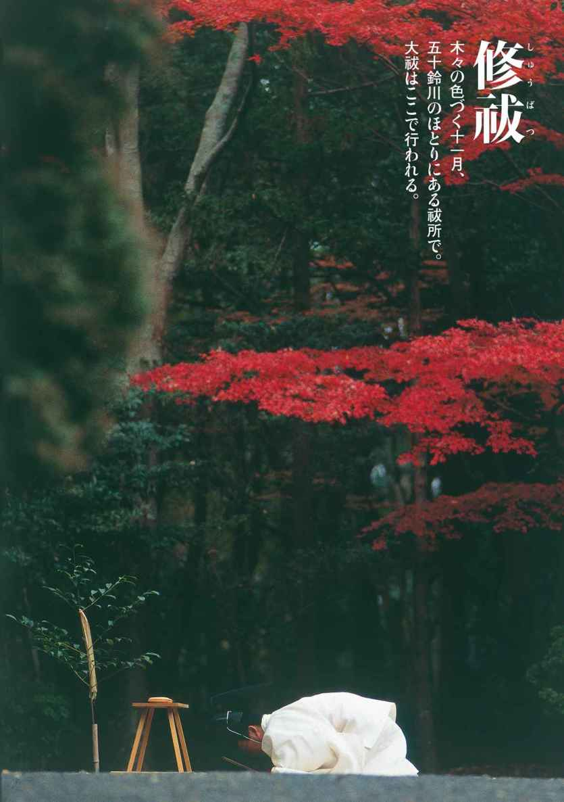
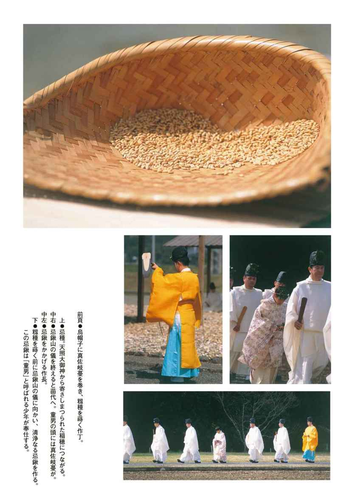
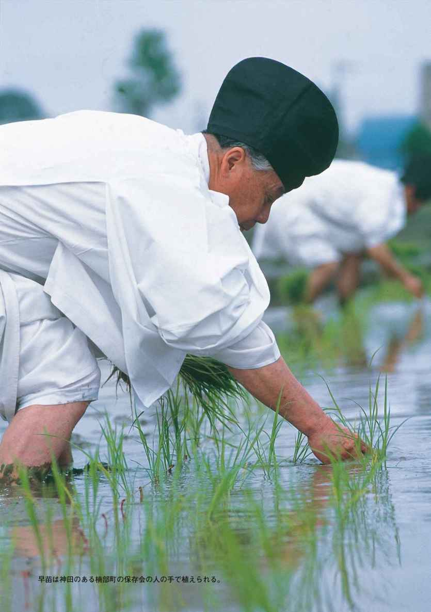
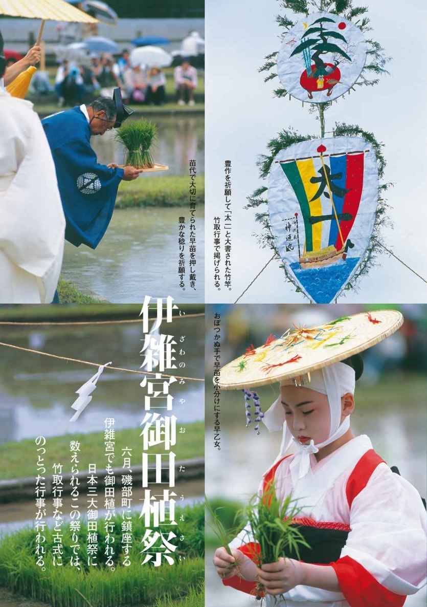
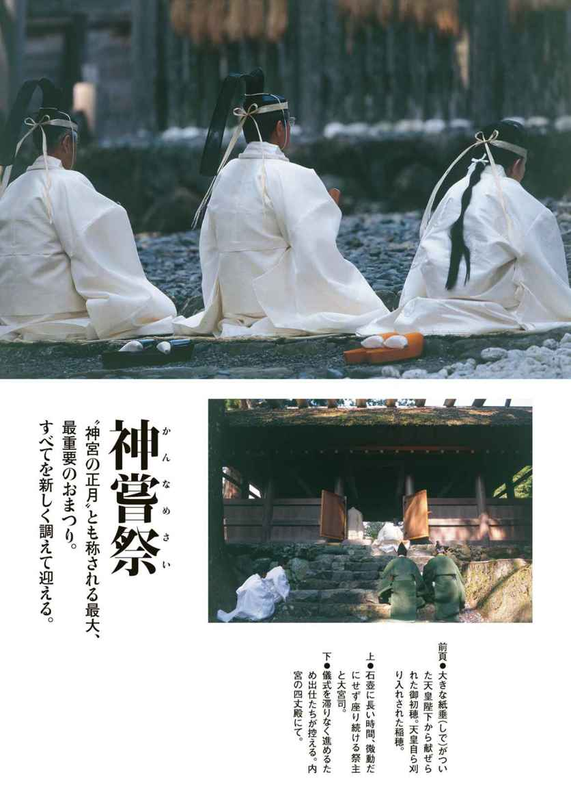
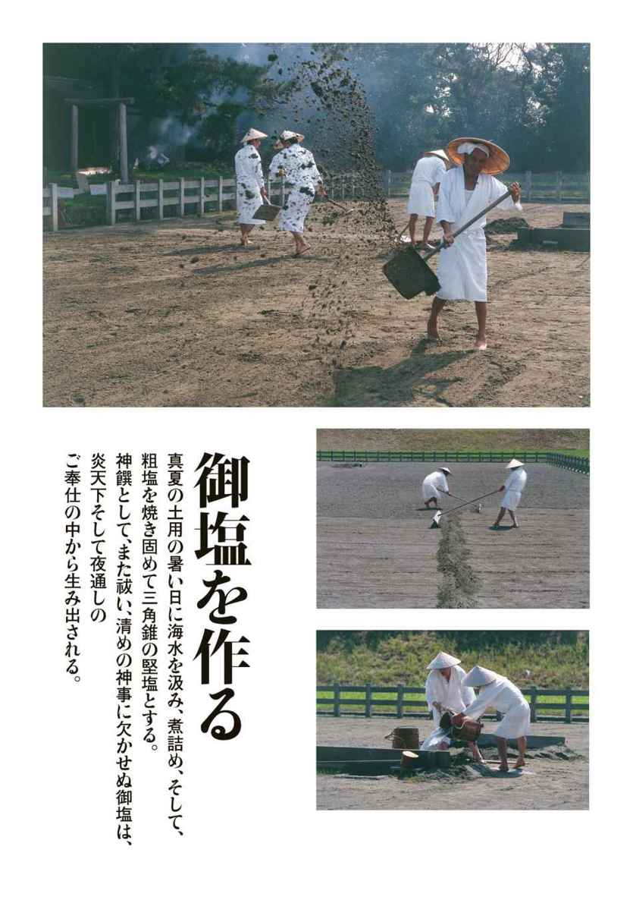
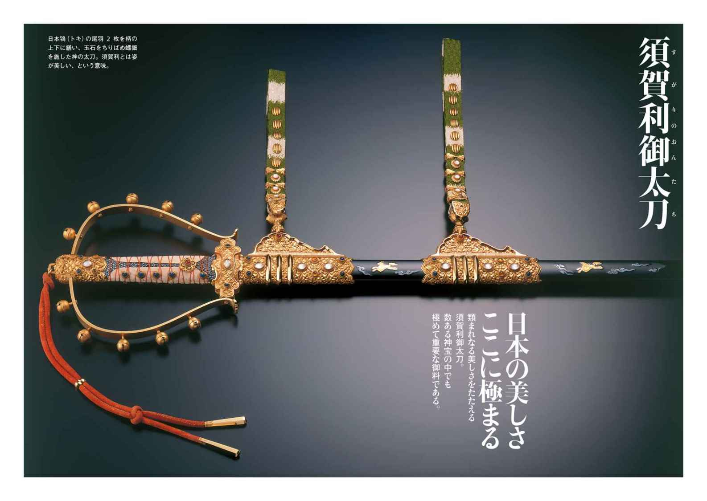
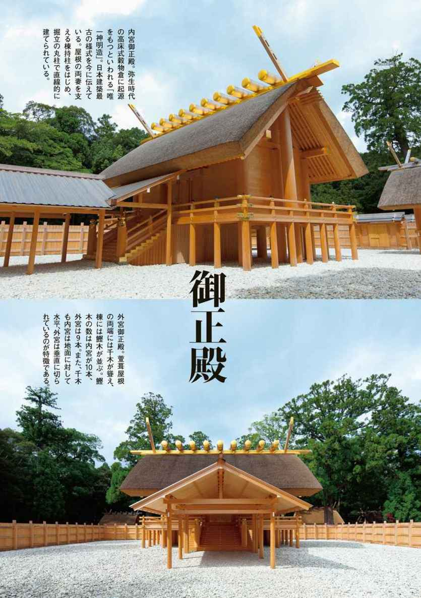
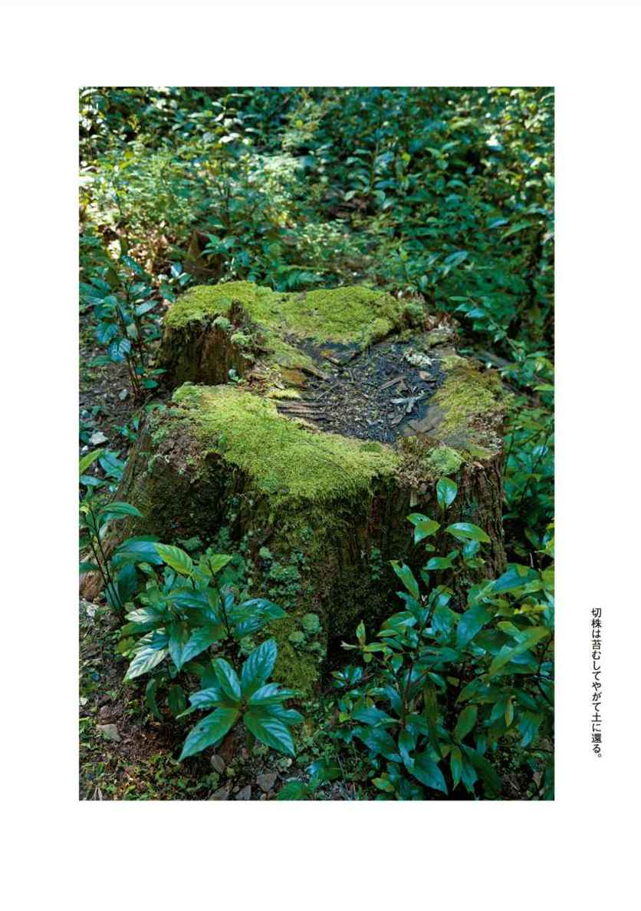

| 決定版 伊勢の神宮 | |
| 南里 空海 | |
| (2014) | |
この本は縦書きでレイアウトされています。また、ご覧になる機種により、表示の差が認められることがあります。
世界文化社
決定版決定版伊勢の神宮
南里空海
決定版 伊勢の神宮［目次］

まえがき
伊勢の神宮に取材に入ったのは、平成十四（二〇〇二）年の二月の祈年祭からだった。
取材に入った理由について、様々なところで書き、そして、語ってきたが、この本の中でも少し触れておくことにする。
一九九九年、カトリックの総本山であるヴァチカンに取材に入ったのは、一〇〇〇年に一度、聖なる扉が開く〝大聖年〟を取材したいと思ったからである。千年に一度という大きな行事だけに、取材の許可はなかなかおりてこなかった。しかし、世界の五人のジャーナリストの中に入れていただくという光栄に浴し、取材することが出来たのである。
一九九九年十二月二十四日午後十一時四十五分、大聖年の扉を開けるにあたり、ヨハネ・パウロ二世は跪いて祈りを捧げた。そして、静かに立ち上がり、両の手でその聖なる扉を開けた。
その時、流れてきたのは、日本の『さくら』だった。サンピエトロ大聖堂には八〇〇〇人以上の、サンピエトロ広場には四万人以上のカトリック教徒が、その瞬間を待っていた。そこに、琴の音の『さくら』が響き渡ったのである。
大聖年の扉が開くときは、荘厳なキリスト教音楽か、あるいは、清らかな讃美歌が流れると思っていた。それは、筆者だけではなく、大聖堂や広場を埋め尽くしていた人々もそう思っていたに違いない。
カトリック教徒の少ない日本。それにも拘らず、日本の精神を象徴する『さくら』が高らかに響き渡ったのである。その琴の音が聖堂いっぱいに響く中、十字架を先頭に、ヨハネ・パウロ二世は、枢機卿、大司教、司教などを従えて、ミサを執り行うために、法王の御座に向かった。
ヨハネ・パウロ二世のミサが終わったのは、夜中の二時半を過ぎていた。
終わるとすぐに、海外のメディアが筆者のところに、『さくら』の意味を尋ねてきた。思っても、考えてもいなかった数々の質問に、答える術を持ち合わせていなかった。この時ほど、恥ずかしさを感じたことはなかった。
「このヴァチカンの取材が終わり、原稿を書き終えたら、自分の原点と、自分の国をもっと見つめてみよう」と、四〇日間にわたるヴァチカンの取材を終えた。
そのヴァチカンの原稿を書いている最中の平成十三（二〇〇一）年九月十一日の夜。見るとはなしにつけたテレビの画面に、飛行機がアメリカの繁栄の象徴ともいうべきニューヨークの世界貿易センタービルに突っ込んでいく映像が映し出されていた。アメリカ同時多発テロの瞬間だった。ニューヨークから送られてくる緊迫した画像を見ながら思った。「宗教の対立から生まれる悲劇と憎しみ。この連鎖を断ち切るには、どのようにすればいいのか......」
〝正義〟という神の名の下で、悲惨な戦いへと突き進む状況を見ながら、宗教とは、その国の精神文化の根幹であることを確認しながら考えていた。
ヨーロッパ諸国のキリスト教をはじめ、中東諸国のイスラム教も、アジア諸国の仏教もその国の文化の根幹を形成しているように、日本もまた、神道という、あるいは神仏習合という文化が、この国を形成しているのである。この日本の文化には教義・経典はなく、自然を唯一の教学として、大調和の思想を尊んできた。言葉を持たない宗教が、言葉の対立で憎しみを増幅させている宗教に対し、いったい何が出来るのだろうか。ニューヨークからの続報を見ながら、一神教の世界が抱える様々な矛盾や問題点を考えていた。
かつて、イスラム教の総本山であるサウジアラビアのメッカとメディナに巡礼したことがある。二〇〇万人近いイスラム教徒が、一心に祈る姿を見たことがある。イスラム教徒は、砂漠の大地であろうと、車にガソリンを入れている最中であろうと、祈りの時を知らせる〝アザーン〟が流れると、すべてを中断しモスクに向かう。
真冬の早朝、ヴァチカンの大理石の床に長い時間額ずいて祈る修道士も見てきた。シルクロードで、全身を地面に投げ伏して、五体投地で聖地を目指す仏教徒に出会ったこともあった。過酷な巡礼姿に思わず合掌して、見送ったことを、今も強く覚えている。
祈りとは、神への感謝と共に、己の心を無にし、神の御心に近づきたい、あるいは、神の御心と心繫ぎをしたいと、その時を持つのであろう。祈る心は宗教を超えて一つ、皆同じだと思ってきた。祈りこそが、宗教の原点だと思っているからである。
しかし人は、神に祈りながら、憎しみの連鎖を断ち切ることも出来ず、その結果、今も悲劇を生み出しているのである。
宗教に対する様々な思いを抱き、〝対立〟から〝調和〟を求めて伊勢の神宮の取材に入った。
初めて見る（奉拝）祈年祭の神職の参進風景に、筆者は言葉を失って立ちすくんでいた。
ヴァチカンを通じて見たヨーロッパの文化を、〝足し算〟としたならば、この伊勢の神宮の、目の前で繰り広げられている参進風景は、まぎれもなく〝引き算〟の文化であろうと思った。禊いで清められた魂の美意識。その美しさに魅せられて、伊勢の神宮通いが始まったのである。
伊勢の神宮に通いながら、世界が日本に求めているものは、日本の経済力でも、原発でもなく、この美しく、麗しい調和のとれた文化であろうと、通う度に実感していった。
伊勢の神宮に十三年も通い続けていると、右寄りの思想だと思う人が実に多い。筆者は、右でも左でもない。むしろ、二〇〇〇年の歴史を有する伊勢の神宮に、また、脈々と受け継がれてきた日本の文化を知るにつれ、感動を覚える一人なのである。
その伊勢の神宮で、一年に一五〇〇回以上のおまつりを斎行し、皇室の安泰を、国民の平安を、そして、五穀豊穣を祈り続けていることはあまり知られていない。そのことを知ったとき、伊勢の神宮に深い感動を覚え、筆者の求めていた日本と日本人の〝祈り〟の原点が見えたように思った。その原点に立ち戻ると、偏狭なナショナリズムではない、感性豊かな日本と日本人の〝志〟が見えてくる。
ヴァチカンで流れた『さくら』が、筆者を日本の文化へと誘ってくれた。しかし、日本の文化の奥は深く、生涯をかけても辿り着くことなどとうていできないであろう。生涯、初心者として、日本と日本人の原点を求めて、旅を続けたいと思っている。
因みに、さくらは、穀神の宿る木、穀霊の依り代といわれ、山ざくらは、田の神の依り代といわれている。伊勢の神宮のまつりは稲作が中心。『さくら』に導かれるようにその伊勢の神宮に通い続けたのは、日本人としては当然のことだったのかもしれない。
第一章
伊勢の神宮とは
日本人の深遠なる原点へ
緑豊かな島路山、神路山に季節の移ろいを感じながら宇治橋を渡る。第一鳥居の横にある手水舎で、手と口をすすぎ、五十鈴川の透き通った川で身を清めたいと手をひたす。夏でも冷たいその水で心身を清め、内宮へと向かう。
伊勢の神宮は、内宮までの参道が長い。
鬱蒼と茂った千古の杉木立からこぼれる木漏れ日の中、玉砂利を踏みしめる。五十鈴川のせせらぎ、鳥のさえずりを聞きながら、頰を撫でる風に、木々の匂いや葉ずれの音に、雨の音に、こころ研ぎ澄ませば、思いは太古を駆け巡る。気がつけば、すべての音は消え、ただ玉砂利の音だけが懐かしくこころに響いてくる。
取材でこの参道を何回往復しただろうか。朝に昼に夕に通った参道は、そのたびに、表情は異なっていた。
雨上がりの早朝、朝日と共に御正宮の萱葺き屋根や、周りの木々から立ちのぼる水蒸気は、昇ったばかりの太陽に輝き、悠久の森を包み、やがて、御正宮を包み込む。水蒸気の中に、影絵のように浮かぶ御正宮は、それは、まるで幻である。
陽が高くなりはじめると水蒸気は薄れていく。清浄で簡素なまでに美しい、気品に満ちた唯一神明造の御正宮が姿を現し、魂の奥底から揺り動かされる光景が目の前に広がる。
「なにごとの おはしますかは しらねども かたじけなさに なみだこぼるる」
と詠んだ、西行法師のこころが実感として伝わってくる。
内宮の大きな石段を一段一段とのぼり、外玉垣南御門の御帳前で神道の作法に倣い二拝二拍手一拝をする。手を合わせ、御帳の向こうの、入ることも見ることもできない御正殿に思いを寄せ、感謝を申し上げるのが精一杯である。
イギリスの歴史家で文明史家のアーノルド・Ｊ・トインビー博士は、昭和四十二（一九六七）年にこの伊勢の神宮に参拝したあと、「この聖地には、あらゆる宗教の根底に横たわっている統一性がある」と書き残し、さらに「世界には神聖な場所はいくつかあるが、伊勢の神宮は最も神聖な場所のひとつだ」という言葉も残している。二十世紀末の混乱を予想し、その混乱を乗り切る時に果たすであろう日本の役割に、大きな期待を抱いていた博士ならではの言葉である。
いみじくも博士が〝神聖な場所〟と言ったように、伊勢の神宮は〝神域〟、〝聖域〟、〝聖地〟と呼ぶに最もふさわしく、その長い参道は、神と出会うための道なのである。
◯日の神・天照大御神の誕生
その伊勢の神宮は皇祖神・天照大御神を主祭神とする皇大神宮（内宮）と、豊受大御神を主祭神とする豊受大神宮（外宮）、ほかに一四の別宮、一〇九の摂社、末社、所管社の一二五から成り立ち、奉斎される神々は一四一座。まさに日本で最も大きく、その中心的存在こそが皇大神宮である。
天照大御神誕生の物語については、最古の歴史書である『日本書紀』が次のように伝えている。
「（前略）伊奘諾尊・伊奘冉尊、共に議りて曰はく、『吾已に大八洲国及び山川草木を生めり。何ぞ天下の主者を生まざらむ』とのたまふ。是に、共に日の神を生みまつります。大日孁貴と号す。（略）一書に云はく、天照大神といふ。一書に云はく、天照大日孁尊といふ。此の子、光華明彩しくして、六合の内に照り徹る（略）」
父の伊奘諾尊と母である伊奘冉尊の二神が、「何ぞ天下の主者を生まざらむ」と相談をした結果、日の神・大日孁貴・天照大御神を誕生させた。この日の神・大日孁貴・天照大御神は秀でた神だったので、「天に送り天上のことをお治めしめられた」と、『日本書紀』は記している。
その天照大御神がなぜ伊勢の神宮の御祭神になられたのであろうか。
それは第十代崇神天皇の時代まで遡る。
崇神天皇は初代の神武天皇のように、御肇国天皇と呼ばれている。御肇国天皇とは、最初に国土を統治した天皇のことで、神武天皇は日本の原型を作り、崇神天皇はその骨格を作ったといわれている。
『日本書紀』によれば、崇神天皇五年に、国じゅうに疫病が流行り、多くの人々が死んでいった。翌六年、農民の動揺が激しく流離するもの、あるいは反逆を起こすものが多く、その勢いはどうすることもできなかった。その結果、天皇は朝夕、天神地祇にお祈りした。これより先に、天照大御神、倭大国魂の二神を、天皇の御殿の内でまつっていた。その二神の神威が強すぎて、共に住むには不安がある、という思いに致った。
「（略）其の神の勢を畏りて、共に住みたまふに安からず。故、天照大神を以ては、豊鍬入姫命に託けまつりて、倭の笠縫邑に祭る。仍りて磯堅城の神籬を立つ。亦、日本大国魂神を以ては、渟名城入姫命に託けて祭らしむ（略）」
祭事と政治――「同床共殿」。天皇に課せられた務めは、神まつりであった。その神の傍らで政の政治を執り行うことに何か大きな間違いがあるのではないか。国じゅうが荒れ果てているのは神慮にそぐわないところがあるからだろう。その政を神と同じ場所で行うのは大御神に失礼にあたるのではないかと、敬神の念に篤い崇神天皇は反省して、おまつりを改めるために御神体である八咫の鏡を皇居の外へ持ち出して、祭政分立を打ち立てた。つまり、大御神の祭場と政治を執り行う場所を分けたのである。
そして、皇祖神である天照大御神を、崇神天皇の第八皇女である豊鍬入姫命がおまつりすることにした。大神をまつるにふさわしい聖地として、倭の笠縫邑に神籬を立てておまつりをしていた。神籬とは、榊のような常緑樹で囲まれた神聖な場所をいう。
ところで、「倭の笠縫邑」とは一体どこを指しているのであろうか。神宮の研究の第一人者である大西源一氏の『大神宮史要』によれば、当時の皇居は磯城の瑞籬宮（奈良県磯城郡大三輪町、大神神社の南、桜井市から北西方向）にあった。笠縫邑もその近くの檜原神社（奈良県桜井市三輪、大神神社末社）付近であろうと推定されている。因みに檜原神社は元伊勢と呼ばれている。
さて、時代は垂仁天皇の時代。
垂仁天皇二十五年三月の条に「天照大神を豊鍬入姫命より離ちまつりて倭姫命に託けたまふ」と記され、豊鍬入姫命に代わって垂仁天皇の第四皇女・倭姫命が新たに「大神を鎮め坐させむ処を求めて」巡幸をはじめた。
倭姫命は、大御神をおまつりするにふさわしい土地を求めて、倭の国を出発した。それから、いくつもの国を経て伊勢に入り、五十鈴川の川上に立ったとき、天照大御神は、
「『是の神風の伊勢国は常世の浪の重浪帰する国なり。傍国の可怜し国なり。是の国に居らむと欲ふ』とのたまふ。故、大神の教の随に、其の祠を伊勢国に立てたまふ。因りて、斎宮を五十鈴川の川上に興つ。是を磯宮と謂ふ」（『日本書紀』）
伊勢は天照大御神が初めて天より降られたところである。
話を先に進める前に、倭姫命が大御神の御鎮座の地を求めて、この伊勢国に到るまでの巡幸の道順を辿ってみよう。
一、倭国 笠縫邑
二、丹波乃国 吉佐宮
三、倭国 伊豆加志本宮
四、木乃国 奈久佐濱宮
五、吉備国 名方濱宮
六、倭国 彌和乃御室嶺上宮
七、大和国 宇多秋志野宮
八、大和国 佐佐波田宮
九、伊賀国 市守宮
十、伊賀国 穴穂宮
十一、伊賀国 敢都美恵宮
十二、淡海国 甲可日雲宮
十三、淡海国 坂田宮
十四、美濃国 伊久良河宮
十五、尾張国 中嶋宮
十六、伊勢国 桑名野代宮
十七、鈴鹿国 奈具波志忍山宮
十八、伊勢国 阿佐加乃藤方片樋宮
十九、伊勢国 飯野高宮
二十、伊勢国 佐佐牟江宮
二十一、伊勢国 伊蘇宮
二十二、伊勢国 瀧原宮
二十三、伊勢国 矢田宮
二十四、伊勢国 家田田上宮
二十五、伊勢国 奈尾之根宮
二十六、伊勢国 五十鈴宮（現在の内宮）
これが、倭姫命が辿った経路だといわれている。この巡幸を眺めて、地図とつき合わせてみると、倭から真東に伊勢の国がある。それにもかかわらず、どうしてこんなに遠回りをしなければならなかったのか。そのことは、あとで触れるとして、ここで、注目したいのは、「斎宮を五十鈴川の川上に興つ。是を磯宮と謂ふ」という箇所である。斎宮とは、神の鎮まる宮、あるいは社ではなく、神をまつるものの宮で、神宮でいえば斎王宮にあたる。それは、倭姫命が住まわれる宮ではなかったか、というところである。
「ここに祠を建てたころ、常設ではなく、おまつりが終われば撤去して御神体の御鏡をどこか他の、多分、斎宮で斎王様がお守りしていたのではないか」と、國學院大学の中西正幸教授は語る。
伊勢の神宮は初めから「神宮」と呼ばれていたわけではなかった。『日本書紀』によれば、「祠」「渡遇宮」（垂仁天皇二十五年三月の条）、「五十鈴宮」（神功皇后摂政前期）、「伊勢大神祠」（継体天皇元年三月の条）、「伊勢祠」（敏達天皇七年三月の条）と、このような変遷を経て、はっきり「神宮」と固定化するのが六世紀後半の用明天皇即位前期ではないかと、いわれている。「祠」の時代から「神宮」と呼ばれるようになり、そして、天武天皇、持統天皇の時代になると、二〇年に一度、すべてを新しく調えて神様にお遷りいただく式年遷宮がはじまる。その式年遷宮については第五章で詳しく触れたい。
因みに、伊勢の神宮が「神宮」と呼ばれるようになったのは『日本書紀』や『万葉集』の中の「伊勢の大神の宮」「伊勢の神の宮」からきているといわれている。
倭姫命はなぜ、直接、伊勢に来なかったのか。その理由を、神宮の研究者は「皇威の宣布」と位置づけている。
倭姫命はその「皇威の宣布」をしながら一一の国々を巡幸した。なぜ、最後の到着地が伊勢でなければならなかったのか。その疑問を神宮の和田年弥禰宜（当時）に伺うと、
「古来諸説紛々としています。大和朝廷の勢力が東国へ進出する軍事的拠点であったため、あるいはもともと地元に太陽信仰があったからという説などさまざまです。しかし、私はそう思いません。古代人のもっと純粋な気持ちになってその理由を考えてみますと、古典にいう伊勢が〈美し国〉だったからです。風光明媚、気候温暖、そして新鮮な海の幸、山の幸に恵まれているのがこの伊勢です。しかも都のある大和地方から真東に位置します。四方を山に囲まれ、海を知らない都人にとって、常世の浪が打ち寄せる果てしない豊穣な海から太陽が昇る伊勢は、誠に憧憬の地であったのです」
和田禰宜からお話を伺った翌日、初秋の伊勢志摩スカイラインを朝熊山へと向かった。山頂で車を降り、展望台から望むと、薄い靄のなかに霞む山々に囲まれた伊勢湾と、志摩湾が見えてくる。この風景を見ていると「常世の浪の重浪帰する国なり。傍国の可怜し国なり。是の国に居らむと欲ふ」と、ご神託を倭姫命に伝えたという、その大御神のこころがわかるような、桃源郷が目の前に広がっていた。
伊勢は辺境の地であったであろう。しかし、大和の傍らにある可怜し国は、海から太陽が燃えながら昇り、豊かな恵みをもたらしてくれる。
天照大御神は、この伊勢の地を永久の宮と定め、高天原より天降られて、御鎮座されたのである。
◯豊受大御神（外宮）の由来
天照大御神がこの伊勢の国に御鎮座された年代はいつごろであろうか。
天照大御神がこの伊勢の地に鎮まった年代は、垂仁天皇二十六年といわれている。
その約五〇〇年の後に、天照大御神の御饌都（津）神として人間生活に欠かすことのできない衣・食・住をはじめ全産業の守護神として、丹波の国より豊受大御神をお迎えした。それが外宮である。
なぜ、丹波の国より豊受大御神を迎えなければならなかったのだろうか。和田禰宜は次のように説明してくださる。
「皇祖神・天照大御神は御神威をより高めるために、あくまでも皇祖神として専心するために、農業をはじめ産業的なことは、豊受大御神にお任せするために置いたのではないかと思います」
豊受大神宮の由来は、平安時代初期に外宮から朝廷に提出された『止由気宮儀式帳』（延暦二十三〈八〇四〉年）によれば、大長谷天皇（雄略天皇）が、天照大御神の夢の教えに従って、「御饌都（津）神＝等由気大神」を丹波の比治から伊勢の山田原にお招きした、といわれている。それでは、この豊受大御神とはどのような神様であろうか。
豊受の「ケ」は御饌、食べ物を表すという。単に食べ物だけの守護であるならば、わざわざ丹波からお招きはしないであろう。もっと深い大御神の神慮があったのではないか。
『伊勢神宮』の著者である所功氏は、その著書の中で、
「『古事記』によれば、この神はイザナミ命から化生された〝和久産巣日神〟の子である。その親神（稚産霊）については、『日本書紀』に〝頭の上に蚕と桑と生れり。臍の中に五穀生れり〟とみえる。この点から、その御子の豊受大神も、養蚕や穀物などの起源をなし、その生育を司る神さまと考えてよいであろう。
また、前述の『丹波国風土記』によれば〝豊宇加売命〟は醸酒もされたという。つまり、丹波あたりに天降った（勢力をもった）豊受大神は、稲作や養蚕だけでなく、その加工まで関与されたことになろう。だから『儀式帳』には〝御饌都（津）神〟とあるが、それは単なる〝食物神〟というより、広く〝産業神〟と解すべきであろう」と書いている。（ルビは著者）
また、『丹波国風土記』によれば、
「八人の天女が比治山の真名井で水浴している間に一人の天女の衣裳（羽衣）を老夫婦が隠したので天上界に帰ることができなくなった。天女は地上にとどまった。彼女は、〝善く醸酒〟を造り、それは一杯飲めば万病ことごとくえるという不思議な酒であった。彼女はのちに追われて各地を転々とし、ついに〈奈具〉の村に到った。これがいまの奈具社に祀るトヨウカノメという神である」としている。
丹波国の比治の真名井からトユケの大神は、この天女の物語が下敷きになっているのではないかともいわれている。
このような資料を読むと、豊受大御神は食事だけではなく農業をはじめとして、養蚕、醸造とあらゆる産業を司る守護神であることによって、天照大御神は皇祖神として天皇をお守りすることに専心できるということがわかる。
この御饌都（津）神をまつる外宮では、この一五〇〇年間、一年三六五日、一日も欠かすことなく、朝と夕の二回、日別朝夕大御饌祭――朝御饌、夕御饌あるいは、常典御饌といって、外宮の敷地内にある御饌殿において、天照大御神をはじめ、豊受大御神、相殿の神々にも御饌をお供えしている。この日別朝夕大御饌祭については、第三章で詳しく触れる。
第二章
神宮の祭り
五穀豊穣、豊かな稔りを祈って
【祈年祭】きねんさい
伊勢の神宮では、春浅い二月、五穀の豊かな稔りを祈って、祈年祭が行われる。
神宮で行われている祈年祭は、六月、十二月の月次祭、十月の神嘗祭、十一月の新嘗祭と合わせて五大祭といわれ、宮中から勅使が参向して奉幣の儀（天皇陛下が絹織物や錦を奉る儀式）が行われる大切なおまつりである。おまつりは両御正宮だけでなく、別宮、摂社や末社でも執り行われる。また、日本の主要なおまつりはこの祈年祭にはじまるといわれ、日本全国各地の神社でも豊穣を祈るおまつりが執り行われる。
◯「稲」は日本の原点である
天照大御神は、ご自身が高天原の天狭田長田で育てられた稲穂を手に「吾が高天原にきこしめす斎庭の穂を以て、また吾が児に御せまつるべし」と、皇孫瓊瓊杵尊を天降らせたと『日本書紀』に書かれている。古代の人々が語り継いできたこのロマン溢れる神話に、史実はどうあれ、神勅のなかに「稲」があることからも、これが書かれた時代、すでに「稲」がどれほど尊いものであるか、人々は知っていたのであろう（神勅については第五章で触れている）。
「稲」はまさに「生命の根」。神宮のおまつりは、この「稲」に集約されて、祈年祭から神嘗祭まで稲のまつりを中心に行われている。唯一神明造の御正殿は、弥生時代の高床式穀物倉がモデルといわれている。御倉というと御稲御倉を指すほどで、刈り取った稲穂はここに保管され、江戸時代には、御倉に稲を置かない期間は、機を織っていたという。また、木本祭で伐採する心御柱の御用材も心御柱奉建（遷宮の直前）まで、ここに納められ保管される。神宮にとって稲作はまさに「生命の根」なのである。
また、稲は、一粒の籾種から二〇〇〇粒、三〇〇〇粒もの米を実らせることができる。その一粒の米を、二年、三年と作り続けていけばその数は膨大になる。稲は「一粒万倍」といわれる所以であり、それは、驚異的なことである。
若い人はご存知ないだろうが、稲藁は注連縄や縄に、あるいは、藁ぞうりなどに利用され、最後は土に返り、それがまた、肥料として多くの作物を育てていく。なにひとつ無駄がないのが稲なのである。
その稲作が日本に入ってきたのは、縄文後期あるいは弥生時代といわれている。それまでは、人々は芋類や栃の実、ドングリ、クルミ、栗など木の実をはじめ、魚など海産物や狩猟による獣類や鳥類などを食料としていた。
稲作が日本に伝わったのは北部九州といわれているが、そこから東北まで伝わるのに、わずか、二〇〇～三〇〇年だったといわれている。稲が猛スピードで広がっていったのは、それ以前の縄文時代に、すでに物流のシステムができていたのではないかといわれ、その流れに乗って、稲も北上していったのではないかと専門家は見ている。
稲のすぐれているところは、生産力の高さと長期保存ができること、そしてそのおいしさにある。特に保存に関しては、米を蒸して、それを乾燥させて糒にすると二〇年は備蓄できるという。糒にしたものはお湯を注ぐだけで、ご飯になる。いまでいうところのフリーズドライ食品である。
これは、玄米よりも、籾で保存するよりもずっと効果的で、この備蓄方法が最終的に「令」（憲法）として成文化されていった。その中に、米の備蓄年限を二〇年としなさいと、国家が倉で管理する規定を作り、二〇年経ったら処分してもいいが、それまでは保管しなさいと定められていた。
式年遷宮の二〇年という数字は、この米の備蓄からきているともいわれている。木の実や魚などの海産物を食べていた人々は、おいしくて、備蓄もできて経済効果も生まれる稲の出現に、どれほど喜び勇んで、稲作に励んだであろう。
人々は米が豊かに稔ることを祈る――日照りが続けば雨乞いの祈りをして、台風の季節には嵐が来ないようにと祈る。一年の豊かな恵みへの祈りは、ごく日常的なことだったに違いない。
豊かな稔りを願う祈りは、宮廷においても同じことで、特に祈年祭は、秋の収穫祭である神嘗祭、新嘗祭に対応したおまつりであったとすれば、一年の初めのおまつりとして大切であった。
皇祖神・天照大御神をとおして、「稲」を日本人の主食にしたこと、そしてその「稲」を日本人の精神の根幹となすところまで高めた人々の叡智、それを思うと、深い感動を覚える。
◯御年の皇神、稲を守る
さて、話を祈年祭に戻して......。
この祈年祭の祝詞――『延喜式』には次のように記されている。
「御年の皇神たちの前に白さく、皇神たちの依さし奉らむ奥つ御年を、手肱に水沫画き垂り、向股に泥画き寄せて、取り作らむ奥つ御年を、八束穂のいかし穂に、皇神たちの依さし奉らば、初穂をば千穎八百穎に奉り置きての高知り、の腹満て雙べて、汁にも穎にも称え辞竟え奉らむ。大野の原に生うる物は甘菜・辛菜、青海の原に住む物は、鰭の広物・鰭の狭物、奥つ藻葉・辺つ藻葉に至るまでに、御服は明妙・照妙、和妙・荒妙に称え辞竟え奉らむ。御年の皇神の前に、白き馬・白き猪・白き鶏、種々の色の物を備へ奉りて、皇御孫の命の宇豆の幣帛を称え辞竟え奉らくと宣う（略）」
このように、おまつりにお供えする品々の中で、第一に挙げているのが稲である。「御年の皇神たち」とは、宮廷の祈年祭にあずかる神々（幣帛を奉る神社）――三一三二座のすべてを指し、その神々が稲を守り育てて「奥つ御年」を天皇に捧げるという祈りである。「手肱に......向股に泥画き寄せて......」は、稲を作る人々の苦労を描き、「奥つ御年」は稲を敬った表現で、その稲がよく育ったならば初穂を一〇〇〇も八〇〇もたくさん差し上げます。また（大きな甕）にお酒をたっぷり入れてお供えいたします。その後のお供えは、畑で採れるもの、海で採れる大きな魚、小さな魚、沖の海藻、海辺の海藻などなど。次には布の類――ここで「妙」は「栲」で、布を表す。明るい栲、照る栲で、光沢のある布を言うのだろうか。そして、最後にある白き馬など動物をお供えするのは、御年のおまつりならではのものではないだろうか。この『延喜式』の祝詞は、現在神宮で用いられている祝詞とそれほど変わっていないという。
この祈年祭が終わると神宮の神田で、神田下種祭、神田御田植初、風日祈宮で五月と八月に風日祈祭が行われ、稲が順調に育つようにと、行事が続く。「稲」に関するおまつりでは、この祈年祭を除いて下種祭も御田植初もどこか土の匂いのする懐かしいおまつりである。
◯日本人の魂の美意識
筆者が伊勢の神宮の取材に入ったのは、平成十四（二〇〇二）年の祈年祭のときからである。取材に入る前、神宮司廳の広報課の方と打ち合わせを重ねていた。事前に資料も読んでいた。しかし、初めて拝見する神宮のおまつりは、私の想像などはるかに超えるものだった。
祈年祭は二月十七日、朝四時の外宮の大御饌からはじまる。この大御饌は残念ながら一般の人は拝見することはできない。もちろん、取材することもできない。
朝七時、外宮の奉幣がはじまる。
取材の許可はここからで、この日から、伊勢の神宮に通い続けることになる。
曇り空の下、外宮の森に太鼓の音が参進（神のもとに進む）のあることを告げている。凜と張り詰めた冬の朝の空気を震わせて、神職の玉砂利を踏むザックザックという音が近づいてくる。
天皇陛下からの幣帛（楊筥に五色絁、白絹、錦などが納められている）が入った辛櫃を先頭に、黒の衣冠の勅使、白の袍に朱赤の袴、同色の浅沓をつけた池田厚子祭主、黒の冠に白の斎服、黒の浅沓の北白川道久大宮司（当時）と続き、以下三〇人ほどの神職がやはり黒の冠に白の斎服、黒の浅沓で続く。参進の列は外玉垣南御門を通って中重に入る。おまつりはそれから約一時間半以上続くが、中で行われている様子は筆者にはまったく見えない。神宮の場合、祝詞は微音といって神様だけにお聞きいただくものだから、当然聞こえてこない。聞こえるのは神職の玉砂利を踏む音と、時折、笏の音が聞こえるだけ。その笏の音を合図に儀式は進行していく。外宮の奉幣が終わると、引き続き、午前十一時から内宮の大御饌がはじまる。大御饌には勅使の奉仕はない。
午前十一時、内宮斎館前。参進直前、斎服に身を整えた権禰宜、禰宜、少宮司、そして、大宮司が順番に整列していく。両側に白の斎服と黒の冠と浅沓の神職が並んだその中央正面の沓脱ぎ石に、朱赤の浅沓が置かれている。おまつり直前の、張り詰めた緊張感の中、そこだけが、時が静止したような光景である。
やがて、斎館の正面の障子が静かに開いて、祭主の朱赤の袴が見え、そして池田祭主がお出ましになる。水で御手を清められたあと正面にお立ちになる。その時の凜として美しいこと。いつもは淡々とご奉仕しておられる池田厚子祭主だが、このときの威厳に満ちた御様子は、遠く離れて見ていても、圧倒される。
全員が揃うと、「ドン、ドン、ドン」と太鼓の音が内宮の森に響き渡る。
内宮が外宮と異なるのは、参道が長いことである。神域の森に囲まれた参道で、白と黒の神職のなかにあって祭主の朱赤の袴と浅沓が鮮やかに、まるで絵巻物のようで、いまこの時代のできごととは思えない典雅な列が御正宮へと向かう。
この日の午後は、時折、雨がぱらついていた。午後二時から行われる奉幣の儀は、どのようになるのかと、空を見上げていた。広報の担当者が「雨儀になると思います」と教えてくださったが、雨儀と言われても、聞きなれないその言葉と、おまつりがどのように行われていくのか、皆目見当もつかない。それが理解できたのは参進がはじまってからだった。
黄蘗色の和傘をさした神職の、一糸乱れぬ参進は神宮の森に鮮やかに映えていた。研ぎ澄まされた日本人の魂の美意識、気品に満ちたその姿に、言葉をなくし、ただ立ちすくんで目の前の光景を見ていた。
筆者は平成十一（一九九九）年、ローマにあるカトリックの総本山・ヴァチカンを取材した。
カトリックでは二五年に一度、聖なる扉が開かれることになっている。その開いた聖なる扉をくぐると、それまで犯した罪は、神の御前で許されるとされている。それをカトリックでは〝聖年〟と呼ぶ。西暦二〇〇〇年は、新たなる三千年紀を迎える年として、カトリックでは〝大聖年〟と呼んでいた。聖年は二五年に一度巡ってくるが、大聖年は一〇〇〇年に一度のこと。人生で再び大聖年を迎えることはない。その大聖年とは一体どのようなものか知りたいと、宗教国家・ヴァチカンを訪れた。
取材・撮影は十月と十二月の二回に分けて、延べ四〇日間かけて行った。
大聖年を迎えるにあたり、また迎えた後もヴァチカンの行事は目白押しで、その行事やミサのたびに、ローマ法王ヨハネ・パウロ二世をはじめ、枢機卿、大司教、司教が参列していた。
法王の衣装も豪華なら、枢機卿のカーディナル・レッドと呼ばれる朱赤の衣装とその下の白いレースも美しく、司教の黒の衣装にパープルのベルトも豪華で、その洗練されたイタリアの色彩感覚に、目は釘付けになっていた。
特に法王の祭服には大きな意味があって、大聖年の扉を開けた十二月二十四日の祭服は、イエス・キリストの受難を表したものといわれている。ミサのたびに法王の祭服は、ミトラと呼ばれている三角の帽子と共に変わり、色も赤、グリーン、白、黄色などの地に金糸、銀糸の刺繡がほどこされた豪華なもので、ローマの太陽の下で華やかに輝いていた。
ミサを取材しても、その美しさに見とれて、神に仕える男たちのなんともおしゃれなことか、と感動の日々だった。
そして、伊勢の神宮の森で繰り広げられる白と黒の絵巻物の世界にも感動していた。ヴァチカンといい、伊勢の神宮といい、美しく装い、心を無にして、神の御前に額ずくことの、なんと美しいことか。それは、神に奉仕する人だけではなく、参拝する者もどれだけ心を無にして、あるいは、心に聖なる装いをして神に額ずくことができるのか、神職の参進を見ながら、あらためて思った。
◯古儀さながらの庭上祭祀
中重で行われるおまつりを見ていて、なぜ敷石の上に座っておまつりをするのか、最初はよくわからなかった。
おまつりは殿上で行われるものと思っていた。また、それに見慣れてしまっていたので、敷石の上に座って行うおまつりに、新鮮な驚きがあった。和田年弥禰宜に神宮のおまつり――庭上座礼について伺うと、
「全国の神社で行われている祭典は、本殿あるいは拝殿の床上に座る、いわゆる殿上祭式で行うのが一般的ですが、神宮では床に座ることなく、すべて御垣内の地面に薄い鋪設（ひざつき）を敷いて座ります。いわゆる庭上座礼という作法で、古儀を伝えています。これは夏の炎天下、冬の寒い日もこの薄い鋪設一枚の上に座っておまつりを行います。いかなるときも座っているので、視線はおのずと低く、御正殿を見上げるようになっています」
中重から内玉垣南御門そして、御正宮に向かってはゆるやかな坂になっていて、視線はおのずと見上げるように設計されている。
「御正殿の間口は一一・八㍍、奥行五・四五㍍、高さ一〇・三㍍とかなり大きな木造建築ですが、他の宗教が持つ礼拝施設に比べると、人々を圧倒するような威圧感はありません。周囲の木々や空間に違和感なく溶け込み、自然と一体の、森厳さの中にも一種のやさしさ、あたたかさが感じとれます。ご奉仕をしていて御正殿を拝しますと、この御殿は座って少し見上げる造りだと実感します。
神道の原初的なまつりの形態である神籬祭祀には建物がなく、庭上での作法になるので、この最も古い祭式で社殿が建てられているのをみても、大地に座っておまつりを行うという伝統が受け継がれてきているのだと思います」
中重で繰り広げられるおまつりは、古代さながらの神まつりの作法なのだという。
この和田禰宜と同じく、神宮のおまつりは庭上祭祀とおっしゃる國學院大学の中西教授は、
「御殿を前提とするおまつりに対し、御殿を前提としないおまつりを庭上祭祀といいます。座ることで視線の位置が高くなく、自然に考えれば御殿の真下、心御柱の位置を中心とした原初的なおまつりではないでしょうか」
と語る。
心御柱とは、御正殿の中央の御神体の真下に立てられている、床下までは達しない柱のことである。その柱の周囲は榊で囲まれて、この心御柱について神宮では古来、神宮の神職は語ってはならないとされるほど、神聖視されている。
式年遷宮の最初のおまつりである山口祭。その山口祭が行われるその夜、心御柱の御用材を伐採する木本祭が神宮の森で行われる。古殿地に建っている小さな小屋は、心御柱の覆屋である。
その心御柱の高さは、一・二～一・三㍍。中重から見上げると自然に目のいく高さで、そこを神籬として古代の人々はおまつりをしていたのではないかと、中西教授はいう。
また、中西教授は、この「庭上祭祀」は建物が一切ないことから、式年遷宮のときの山口祭は一種の庭上祭祀といえるし、このような、建物のない祭祀は、神道の古来のおまつりのひとつの形ではないか、と指摘する。
◯外宮先祭とは......
神宮のおまつりを拝見していて、外宮がなぜ先祭（先にまつりを行うこと）なのか、疑問に思っていた。式年遷宮以外すべてのおまつりは、外宮が先に行われている。「丹波の国からお招きした神様だから......」という説もある。ほかにも諸説があって、中西教授によれば、
「おまつりを外宮と内宮と対立して見るのではなく、両宮をひとつと考えてより大きな意味で神宮祭祀という観点から見るならば、外宮で行われるおまつりは、内宮で行われるおまつりの前哨戦ではないでしょうか。御供の神様（お仕えする神様）に御饌を差し上げてから、内宮の主祭神に御饌を差し上げるという手順だと思います」
つまり、内宮が主体で外宮のおまつりはその地ならしを意味しているというのだ。
神宮の神職によれば、
「天照大御神に御神饌を差し上げるにあたり、豊受大御神のお腹が空いていたのでは、力が入らない。そこで、力を蓄えて、鰒を御調理していただく。そのために、外宮の豊受大御神に先に召し上がっていただいてから、天照大御神に御饌を差し上げるのです」
二〇年に一度、斎行される式年遷宮以外は、すべて外宮が先祭である。式年遷宮の遷御の儀は、内宮が先祭である。そのことについては、第五章で触れている。
【神田下種祭】しんでんげしゅさい
平成十四（二〇〇二）年は、春の訪れが早かったせいか「四月二日に神田で下種祭を行います」と、神宮司廳の広報課から、ご連絡をいただいた。
神宮のおまつりの年間スケジュールは決まっているが、この下種祭と御田植初と抜穂祭は、その年の気候と苗や稲穂の発育状態に応じて、日程が決まってくる。
新幹線や、近鉄特急の車窓から見ると田んぼはすでに耕されたり、苗代が作られたり、田んぼに水が張られたりして、忙しい農作業の季節に入っていることがわかる。神宮の神田は少し作業が遅れているようだった。
その神田の周辺の山々は瑞々しい新緑で一段と輝きを増していた。うぐいすの谷渡りや、土手にはたんぽぽやすみれが咲き競うという、長閑で、平和な日本の春の原風景が広がっていた。
◯「この田には蛭すまず苗草敷かず」
二月の祈年祭が終わってから約一か月半後の四月の初め、伊勢市楠部町の五十鈴川の辺の神宮の神田では大宮司、少宮司以下禰宜全員が参列して、下種祭が行われる。
この楠部町の神宮神田は、倭姫命が天照大御神をおまつりするにふさわしい大宮所を求めていたとき「五十鈴川の清らかな水を引いて、ここで御料米の稲を作りなさい」と定められたと『皇太神宮儀式帳』や『倭姫命世記』に書かれている。『皇太神宮儀式帳』には「この田には蛭すまず苗草敷かず」と記され、つまり、稲の発育を妨げる害虫もいなければ、肥料もいらないほど肥沃な土地である、と書かれているのだ。
下種祭とは神嘗祭をはじめ、すべてのおまつりにお供えする御料米の籾種を蒔くという大切なおまつり。その籾種を蒔く前に、神田近くの忌鍬山で、「忌鍬山の儀」が行われる。この儀式は『延喜式』に「凡そ神田を営る鉏、鍬の柄を採るには、毎年二月、先ず山の口及び木の本を祭りて、然る後これを採る」と書かれているように、鉏、鍬に使う柄用の木――樫をいただくにあたり山口の神と木本の神をまつる。農業の事始を言祝ぐ儀式を行い、神様のお許しをいただいて、忌鍬を作る。その忌鍬によって耕された神田の苗代に忌種という清浄な籾種を蒔いていくのである。
神宮では神様が用いる神聖なものに「忌」という文字が付く。この忌鍬は童男といって小さな男の子が奉仕することになっている。この日この大事なお役を果たしたのは、十二歳の豊田直也君。白地に紫色の柄の装束を身に纏って、着慣れない装束とお役にとまどいながら、神職の指示に従い一生懸命に務めていた。その姿に〝童男〟の穢れのない初々しさがあった。おまつりが終わった後に「どうでしたか？」と感想を聞くと「座っているとき、足が痛かった」と、現代っ子らしい微笑ましい答えが返ってきた。その童男の奉仕で作られた忌鍬を持ち、烏帽子に真佐岐蔓を巻いた奉仕員が山から御田におりてくる。神田のおまつりはここからはじまる。
まず、禰宜が黄色の斎服を纏った作長に忌鍬を授けると、作長は白い布衣姿の作丁（奉仕する人）を引き連れて神田に進み、作長が忌鍬を大きく三回――左、右、中央と振り下ろして、田を耕し苗代を作る真似をする。次に、禰宜は作長に忌種を授ける。作長はその忌種を二人の作丁に渡す。それを受け取った作丁は左右に分かれて田んぼに入り、四枚の苗代にその忌種を蒔いていく。すべて古儀に則って行われているのだという。
籾種が重ならないようにとていねいに蒔いていく。時間にして、わずか五分ほどで終わるが、その後、籾種がきちんと蒔かれているかどうか、神職が検分して、おまつりは終わる。この日に蒔かれた品種は「チヨニシキ」。この忌種は、天照大御神から寄さしまつられた稲種につながる。
この籾種を蒔く間、神職、作長、作丁は「天鍬やまさきのかずら笠にきて御田うつまつるはるの宮人」という、古歌を歌う。歌は、山に、大地に低く響き、歌の意味などわからなくても、豊かな稔りへの祈りであることが、伝わってくる。
おまつりが終わった後、水を張った田んぼに手を入れてみた。春とはいえ、田んぼの水は冷たかった。籾種を蒔いた作丁さんに「冷たくなかったですか？」と訊ねると、「慣れていますから......」と、農業で鍛え抜いた大きな手の、太い指の泥を落としながら気負うことなく答えてくれた。
◯「忌」は清らかな、を意味する
「忌」という文字は、筆者にとっては、その家に不幸などがあったときなどに用いる言葉として使い慣れてきた。神宮に取材に入ってこの「忌」という文字は、神様がお使いになる神聖なものにのみ用いると聞いて、少し驚いた。
「忌火」「忌種」「忌麴」「忌火屋殿」「忌箸」「忌鎌」「忌鍬」「忌斧」「忌物」「忌刀」「忌柱」「忌詞」など、すべて、神様が用いるもの、あるいは神事のときに用いる言葉で、清浄であることを第一として、一般に使うことを禁止しているものに「忌」の文字を用いているのである。この「いむ」には、斎、諱、禁などの文字を用いるが、いずれも、人間の穢れを嫌うことを意味しており、身を清めて穢さないようにという意味でもある。
また、「忌」は潔斎、斎館、斎宮、斎食の斎と同じ意でもあるという。だから、神宮のものに「忌」が付いたらそれは〝清らかな〟ということになるのだ。
神宮ではよく「忌火を鑽る」という。それは清らかな火を意味していて、昔は火の穢れというタブーがやかましくいわれていた。特に神職は神事に入る前の穢れを嫌う。食べるものも家族の煮炊きする火ではなく、忌火を鑽ってとった火を使い、あるいは、鍋などの調理道具も変えて、穢れや世俗と一線を画して神事に臨む、と聞いたことがあった。
神宮では、忌火は忌火屋殿で木と木を摩擦させる火鑽道具を用いて火を熾す。檜の板に杵と呼ばれるヤマビワの木を心棒にして、上下に何回も回転させて、二、三分かけて火を熾す。その火種を杉の枯れ葉に移すと、ボーッと火が点く。
本来は見せるものではないのだが、火鑽を撮影したくてお願いをしたことがあった。火を鑽ることができるのは、権禰宜と決まっている。一心不乱にヤマビワの木の上下動を繰り返し、火種ができるころには額に汗が浮かんでいた。火を鑽ることの大変さがその汗から伝わってくる。
マッチやライターなど、瞬時に火が点く文明の道具があるにもかかわらず、神宮の忌火は、古代さながらの発火法で、今日も続けられている。
この項のテーマは下種祭なのだが、「忌」を説明したので、その関連として神職の斎戒についても触れておきたい。和田年弥禰宜にその斎戒について伺うと、
「斎戒には期間が設けられていて、神前にお供えをする神饌や幣帛に触れたり、神殿の大床に上ったり、お祓い（御塩、大麻）や祝詞を奏上するものは、おまつりの前夜から参籠といって斎館にお籠りをします。また、御正宮及び別宮の神殿の内に入って奉仕する場合は二夜前から。遷宮のような御神体の最も近くで奉仕をする場合は、五夜前からと、細かく決められています。斎館には、祭典に奉仕をするもの以外は立ち入り禁止。たとえ、家族でも立ち入ることはできません。参籠中は世俗と関わること、心身を乱すものを禁じています。ひたすら潔斎をして、おまつりのときを待つのです」
「まつり」の語源は〝神の降臨を待つ〟あるいは、〝神を奉る〟からきているといわれている。神を待つのであれば、神を奉るのであれば、あるいは御神体に近づくのであるならば、心身の潔斎は厳しいものであろう。己をいかに律していくかが問われるのが、参籠ではないかと、和田禰宜のお話を伺って感じた。
参籠中の厳禁事項としては、清浄なる白衣白袴で身を包み、祭典の奉仕以外は宮域から外へ出てはならないとされている。
また、参籠中は斎館内で調理した食事しか食べることを許されていない。肉をはじめ、韭、大蒜など匂いのきついものや、酒は厳禁。忌火を鑽ったその火で煮炊きしたものしか食することはできない。どのようなメニューなのか、若い神職に伺うと、朝食は、ご飯、味噌汁（味噌汁の具は夏は茄子、冬は白菜など）と卵などで、神嘗祭のような、夜中の御奉仕があるときは、夜食に炊き込みご飯などが出るという。あとは、揚げ物、お魚、野菜の炊き合わせなど、バランスのとれた食事だという。この斎館でのご飯は古古米を用いているそうである。
◯神宮のおまつりは「稲作」が中心
話を神田の下種祭に戻そう。
この楠部町の神田は約三㌶。ここで年間の神宮の祭典にお供えされる御料米の粳米と糯米が清浄な中で作られている。
栽培品種は、粳米では、チヨニシキ、イセヒカリ、みえのみえ、キヌヒカリ、あきたこまち、どんとこい、ナギホ、ニシホマレなど。糯米は、惠糯、あゆみもちを栽培。その他、保存品種として瑞垣原種、瑞垣一号、二号、三号、荒垣、瑞垣糯、古代赤米、黒米を栽培している。
これだけの種類を栽培し、時期をずらして御田植えをするのは、天候不順や台風などの被害があっても、それを最小限にくいとめるための知恵である。
神様のお米は「不作で収穫ができませんでした」では、済まされない。そのときに備えて万全を期してのことである。
稲は、『日本書紀』の「斎庭の穂の神勅」にあるように、保食神の身に成った稲種を、天照大御神が自らの天狭田長田で育てたものである。それを「吾が高天原にきこしめす斎庭の穂を以て、また吾が児に御せまつるべし」と、天孫降臨する皇孫である瓊瓊杵尊に、その稲穂を授けた。天照大御神のこころの込もった稲を受け継ぎ、歴代の天皇が稲を作り、今年も豊かに稔りました、と感謝を込めて初穂を神嘗祭に捧げ、新嘗祭では天皇が大御神と共に新穀をお召し上がりになるのである。
日本人にとって欠かすことのできない稲は、縄文後期あるいは弥生時代の前期に日本に伝来してきたといわれている。それ以来、ロマン溢れる神話として語り継がれ、春には豊作を祈っておまつりを斎行し、全国の神社で、豊かな稔りに感謝してまつりを営々と続けてきた。
神宮のおまつりも、一年を通じて「稲作」が中心で、「稔り豊か」を願って行われているのである。
下種祭を通じて日本という国を見ても、なんと感性豊かな、心豊かな国だろうかと、再発見することが多かった。この豊かさは、各地のいたるところにあったはずだった。それが、いつの間にか失われてしまっている。
【御田植初】おたうえはじめ
四月に、稲が立派に育つようにと祈りを込めて蒔かれた籾種は、五月にはうす緑の早苗に成長していた。その苗を神田に植えていくのが、御田植初である。水を張った田んぼに、祭場に向かう神職、作長、作丁、そして神宮御田植祭保存会の人々の姿が映る。白、黄色そして、保存会の人たちの黒の紋付が、風で漣の立つ水田に鮮やかなコントラストを描いて映り、それはまるで、映画のシーンのようで美しい。
◯「ハエャーハエ、ハエャーハエ......」早く稲が育ちますように
神田に早苗を植える前に、神田祭場において、神事が行われる。下種祭は大宮司、少宮司以下神職の参列のもとで行われたが、御田植初は、権禰宜以下の神職で行われる。神饌がお供えされ、祝詞が奏上されると、神職から黄色い斎服の作長に早苗が授けられ、作長は白い布衣の作丁を引き連れて神田に向かう。そこで、二人の作丁が田んぼに入り、早苗を一列、手早く植えていく。
引き続き、地元の保存会の若い男女それぞれ一〇人が一列に並んで早苗を植えはじめる。田んぼの中に入ったことのないような茶髪にピアスの青年は、子持ち烏帽子と呼ばれる帽子に、白地の背中に「大一」の文字が描かれた麻の布衣を身に纏い、縄で腰をきりりと結び、黄色の襷を掛けて、慣れない手つきで田植えに汗を流している。手甲よりマニキュアや指輪のほうが似合いそうな細い指の若い女性は、白の布衣に白の手甲と脚半、あかね襷に菅の笠という歌にある早乙女のいでたちで泥田に手を染めて植えていく。横に一列、男・女・男......と並んで、早苗を三、四本とっては植えていく。二〇人の足並みが揃わないと、作丁さんから「揃っていない」と注意が飛ぶ。
機械化される以前の昔の田植えは、人差し指、中指、薬指の三本で苗を植えていたという。現在では、手で植えることもなく、機械が植えていく。慣れない手つきは当然で、しかし、白の手甲が泥色に染まるころには、二〇人の足並みも揃いスピードも上がっていく。
約一時間かかって一〇アールを植え終えた。この日植えた品種は「チヨニシキ」。この御田植の儀式が行われている間じゅう、田んぼの後方で笛、太鼓、鼓、ササラで田楽を奏でていた。
田植えを終えて、ホッとする間もなく、植えられたばかりの田んぼの中では次のおまつりがはじまっていた。恵比寿・大黒の絵が描かれた大きな大団扇を持った保存会の人が、東西の耕作道に立って、植えたばかりの早苗の上をその大団扇でイナゴや害虫を払う動作をする。次いで、大きな団扇（ごんばうちわ）を持った二人の奉仕の人が、神田に入って団扇合わせを行いながら神田の中を三回巡る。
これは、一説によると、セックスの象徴であり、豊作祈願だといわれている。この団扇の儀式で、御田植初は終わる。
神田祭場で御田植初が終わると、神田の近くにある田の守り神の大土御祖神社（皇大神宮の摂社）に向かう。恵比寿・大黒の大団扇を持った奉仕の人が大土御祖神社の神前で、稲作の一連の所作を模した田舞を舞う。「ハエャーハエ、ハエャーハエ」と、早く稲が育ち、豊作でありますようにとお囃子が入ったり、重そうに俵を担いで、しかもよろけて豊作を表現する動作をしながら踊っていく。最後は大団扇を破って終わりとなる。その大団扇の破片を持っていると、豊作や大漁のお守りになるといわれ、見物人は競って破片を持ち帰る。
この日、朝から曇り空だったが、おまつりが終わるお昼ごろには晴れ上がった。土の匂いのする、長閑でどこか明るいおまつりに、時の経つのも忘れていた。御田植初が終わると、伊勢は初夏を迎える。植えられたばかりの早苗は、風に気持ちよさそうに揺れていた（神田御田植初は、昭和四十六〈一九七一〉年に三重県の無形文化財に指定されている）。
◯日本人の〝稲〟に対する思いの深さ
伊勢の神宮の、もうひとつの御田・伊雑宮の御田植祭のことも書かなければならないだろう。
ここは、真鶴が稲穂を銜えて、御料田にその穂を落としたと、『倭姫命世記』に真鶴伝説があることから、日本の稲の発祥の地のひとつとされている。志摩郡磯部町の伊雑宮は皇大神宮の別宮。この別宮の御料田で行われている御田植祭は、香取神宮、住吉大社の御田植祭と並んで、日本三大御田植祭として有名なもので、平成二（一九九〇）年に国の無形文化財に指定されている。
伊雑宮の御料田は一六・四三㌃。御田植式は「おみた」と呼ばれ、毎年六月二十四日に行われる。この「おみた」は地元・磯部町の七つの地区が、毎年交代で担当する当番制で行っている。七年に一回ということで、担当する地区は力が入り、特に、赤、紫など派手な色彩の衣装を着て主役を務める子供たちは、当日に備えて一か月前から、式三番をはじめ田楽などの稽古に入るという。そして前々日の二十二日に「大馴らし」という総稽古も行われる。
二十四日の「おみた」の当日、午前十一時に伊雑宮に参拝し、その後、神職のお祓いを受ける。それが終わると、早苗を先頭に、エブリ二人（Ｔ字形をした田ならしの道具を使う人）、タチド四人（早乙女と田植えをする人）、早乙女六人、ササラすり二人（少年）、太鼓打ち一人（女児の格好をした童男）、笛二人、オド（太鼓）一人、コド（小鼓）一人、謡六人、地下の役人など、という順に神田へ向かう。神田までの道の両側には、おまつり独特の露店が並び、懐かしいおまつりの光景と匂いが広がっている。
神田に着くと、まずエブリが田をならす。タチドと共に六人の青年は、早乙女六人と交互に手を取って苗代を三回巡る。それから、苗取りがはじまる。同時に、神田の中では、褌ひとつの若者たちが泥を投げたり、相撲を取ったりと、全身泥だらけになっている。苗を取り終わったエブリは、田の周りに立ててある「太一」の文字と宝船が描かれている大きな笹の付いた竹の唐団扇をゆさゆさと神田に倒し、泥んこの若者たちは競ってその唐団扇を目指し、唐団扇を破って紙を奪ったり、竹や笹を持ち去る。この破った団扇の紙や青竹や笹は、海上安全・大漁のお守りとなる。これを「竹取の神事」という。
この神事の後、早乙女の田植えがはじまる。その間、太鼓を打つ女の子の着物を着た童男が田船に乗り、その両脇にササラすりが立ち、オド、コド、笛も立って奏でる。『高砂』、『羽衣』などの小謡もはじまる。田植えも半ば終わると中休みとなり、残りはまた、ササラすりの男の子が歌って再開される。
御田植の最後は、神田から露店の前を通って境内まで、約二百㍍を「踊り込み」といって、およそ二時間かけて踊っていく。おまつりは夕方まで延々と続く。
伊雑宮の御田植祭では「太一」と描かれた大きな団扇が、目を引く。御田植初に「大一」と描かれた布衣姿も見受けたが、これは神宮を代表するマークだとお聞きした。この「太一」「大一」にはどのような意味があるのだろう。神宮の元禰宜の矢野憲一氏は『伊勢神宮の衣食住』の中で、
「中国の古い文献は大も太も区別なく用いられていたが、大は人の正面形を象り、オオキイ、サカン、スグレル。太はオオキイ、フトイで、物のはじめ、おおもと、高い尊称にいずれも用いられ、大の上に頭部を示す円を加えて天という字ができ、太の点を上に付けても天となり、大一も天の意に通じる。
古代中国には太一神というものがあり、この神は天地すべての至高神とされていた。そして、〝太一陰陽五行思想〟が生じるが、思想として成立する以前に宗教的な儀礼として古くから、この天神は祀られていたであろう（略）」
と、中国の影響を記している。そして、奈良時代にこの中国の思想が入ってきたとき、これはわが国の天照大御神と同じではないかと、神宮は太一を使用したのではないかと矢野氏は指摘している。現在も、神宮司廳では、造営のシンボルマークだと説明をしている。「太一」も「大一」も「最高のもの、天上天神の名前、最高のもの」という意味で、伊勢の神宮は最高である、天下に二つとないというところから、この「太一」も「大一」も使っているのであろう。
神宮の神田で見ることのできない、ローカル色豊かな、人々の思いの込もったおまつりに、日本全国の村の鎮守のおまつりを思い出す。
私たちが取材に行った日は梅雨寒で、天候も悪く、おまつりをする人も見る人も冷たい雨に濡れていた。それでも立ち去ろうとはしない。日本三大御田植祭のひとつとあって、テレビカメラに混じって全国から集まってきたたくさんのアマチュアカメラマンも、そのシャッターチャンスを競っていた。
伊勢の神宮では、早春の祈年祭をはじめ籾蒔きから収穫する秋まで、稲を中心としたおまつりを執り行っている。それは、古代より日本人の稲に対する思いの深さが信仰となっていることを表し、それが、今日まで変わることなく連綿とつながってきていることに、日本人の中に流れている強靭な精神性を見たような一日だった。
【風日祈祭】かざひのみさい
農耕社会において、風雨和順と五穀豊穣は最も重要な祈りであろう。
暴風や洪水、あるいは、旱魃や日照不足という異常気象は、不作、飢饉などの危機をはらんでいて、農家は収穫の秋を迎えても、心重い日々であろう。自然を相手に米や農作物を作っていくことは、机上で想像している以上に苛酷なことなのである。五穀が豊饒でありますようにと祈る風日祈祭は、風雨の多い、稲穂の生育に最も大切な五月と八月に行われている。
五月の御供物は神饌ではなく、菅で編んだ御蓑と御笠。神宮の洗練されたおまつりにあって、なんとも微笑ましく、人々のこの形に込めた祈りの真心が伝わってくるような御物が供えられる。神宮の元神職であった櫻井勝之進氏は「御笠神事といわれたこのお祭りは中央の神祇官にも宮廷にも類型のない古態を留めるお祭りで、伊勢地方の農民たちの神事がそのまま神宮に持ち込まれたと考えてよいだろう」と語っている。
八月は、幣帛（白絹と麻緒を木綿で榊に巻いた御物）が供えられ、御蓑も御笠もない。
この神事は、かつて七月朔日から八月いっぱい、禰宜が日祈内人（七月一日から八月いっぱいまで風日祈祭の順調を祈る人のこと）を率い、風雨が穏やかであるようにと朝夕連日祈禱を行っていたという、その古儀が今日の風日祈祭につながっている。
蓑笠を捧げて祈る風日祈祭
悪しき風荒き水無く五穀稔れと
徳川宗敬元神宮大宮司が詠まれた和歌である。元大宮司の風雨和順への思いの込もった歌に、稔り豊かで穏やかであることへの願いが伝わってくる。
【抜穂祭】ぬいぼさい
二月の祈年祭から五穀豊穣を祈り続けて、稔りの秋を迎える。平成十四（二〇〇二）年は天候に恵まれて、たわわに稔った稲穂は、黄金の海のように輝いていた。翌年も同じ九月二日に抜穂祭が行われたが、天候不順で生育が遅れたために、稲はまだ青さを残しているところもあって、日照不足を物語っていた。
抜穂祭は大宮司以下神職の参列のもとで行われる。黄金色に色付きはじめた稲田と、その中を白の浄衣で参進する神職とのコントラストは、秋空の下に映えて美しい。
◯〝瑞垣〟という品種のエピソード
神田祭場では、五穀豊穣に感謝を込めて海老、鯛、鰒をはじめ海、山、川、野の幸が供えられて、祝詞がはじまる。すると、広報担当もその祝詞に合わせて低頭し、祈りに入る。広報担当はマスコミの取材に立ち会っているが、神職の人もいる。おまつりに参加していないときでも、祝詞が上がるとその瞬間に低頭する。背筋をぴーんと伸ばしたその姿に、ご奉仕の姿勢と大御神へのゆるぎない信仰が表れている。
祝詞が終わり、禰宜から作長に忌鎌二本が渡され、その忌鎌を先頭に神田へ向かう。神田に一礼。その後、蹲踞の姿勢で忌鎌を作丁に渡す。作丁は神田に入って稲穂を一握り二杷刈り取る。その後、一〇人の作丁が穂をていねいに一本一本抜いて、それを麻ひもで結び、案（細い椎の木を並べて編んだ台）に運ぶ。運ばれた抜穂は禰宜が検分しておまつりは終わる。
抜穂とは、鋭利な鎌などない時代、一本一本手で抜き取っていたころの名残からきているという。
抜穂はこの後、奉仕の人の手によって、二五八束作られて、数日間神田で自然乾燥させた後、辛櫃に納められて内宮の御稲御倉に一五〇束、外宮は忌火屋殿に一〇八束納められる。新穀は十月の神嘗祭から、神様にお供えしていく。
内宮の御稲御倉に納められた一五〇束は、三節祭である神嘗祭に五〇束、六月と十二月の月次祭にそれぞれ五〇束ずつ用いていくという（三節祭については「月次祭」を参照）。外宮の忌火屋殿に納められた御稲は、やはり三節祭にそれぞれ三六束ずつ用いていく。御稲は三節祭に奉下して、御飯、御餅、御酒に調理される。御飯は、臼殿で脱穀して精米にした米を用いるが、もちろん、手搗きである。
稲の品種は、台風の来る前に収穫できるように、改良などで工夫を凝らしながら安定をはかっているが、それでも平成十五年のような日照不足は、収穫にも影響が出てくる。前年が大豊作であっただけに、その落差は大きい。
「一番の苦労は、天候次第というところです。特に天気予報で一〇㌫の確率で雨と言われたとき、降るのか降らないのか。刈り取った稲を濡らすわけにはいかないのです」
天を仰ぎながら最先端で苦労を担っている神田の作長・山口剛さんはそう語った。山口さんは〝稲〟の側で暮らしたいと三重大学で農業を専攻した。そして、神田近くの宿舎で寝泊まりをして、二四時間体制で稲の生育を見守っている。「祖父はこの神田のある楠部町で生まれ育ちました。僕は、名古屋の瑞穂区で生まれ育ちました。稲にご縁があると思いませんか？」
抜穂祭が終わって、作長の黄色の布衣からいつもの作業着に着替えた山口さんは、かつて神宮で作っていた品種を見せてくださった。斎庭、倭、神路、天鍬、旭、瑞穂、狭田、家田、瑞垣と、神話の世界を彷彿させる名前を指差しながら、
「この瑞垣という品種には、エピソードがあります」と言って、資料を出してくれた。いかにも神宮らしいのでその記事が掲載された『瑞垣』（創刊第一号）を再録させていただく。
「皇大神宮の旧御敷地（東御敷地）は、昭和四年十月に御遷宮を行ってから、古殿舎を取り除いて、塵一本も置かれず、清浄に保存されているのですが、去る昭和五年九月二五日、旧御正殿軒下の雨落際に当たる処に、珍しくも自然に発生して、将に実を結ぼうとする一本の生々した稲を発見しました。御敷地内は、一帯に拳大の白石が幾重にも敷き並べられて、稲などが生育する余地が無いにも拘らず、その間に一粒の籾種が根を下ろして、生々と見事に生長し、三十余粒の実を結ぼうとしていることは、御遷宮直後の、古来御蔭詣の年とせられて居る此の御年柄に、全く聖代の瑞兆と申すべき御目出度い事なので、早速適当の保護設備を加えましたが、十一月の末旬、瑞々しく成熟しました。これを採取するに当たって、御敷地の内でも最も、神聖な瑞垣内に自生した稲というので「瑞垣」と命名しました。（略）尚、採集した「瑞垣」は将来神宮の御饌料田用の種子とするため、三重県農事試験場と、三重県高等農林学校とに、栽培方を委託しましたが、本年七月上旬、農事試験場並に高等農林学校からの報告によれば、該稲穂の生育は非常に良好であるとの事であります」（原文ママ。ルビは筆者）
山口さんはこの瑞垣という品種の説明の最後に、
「瑞垣の遺伝子は調べようと思えばいつでもできますが、神宮の稲は、調べる必要もないでしょう」
飄々としていて、神様のお米を作っている人の、おおらかさを感じた。瑞垣は今も作られている。



豊かな稔りに感謝して
【大祓】おおはらい
五十鈴川のほとりの第一鳥居の横に、紙垂を垂らした縄が張り巡らされている場所がある。そこが、大祓を行う祓所である。
大祭に先立ち、身に付いた罪・穢れを祓って、心身を清浄にして、神の御前に額ずこうと、神宮では大祭が行われる前の月末（晦日）に、大祓を行っている。
一月、四月、五月、六月、九月、十月、十一月、十二月の晦日には神職をはじめ楽師は大祓を受ける。六月、十二月は神職だけではなく職員全員が半年分の罪・穢れを祓う。
大宮司以下神職は浄衣に立烏帽子で祓所に並ぶ。榊が一人一人に配られ、大祓の祓詞が奏上される。この大祓の祓詞は長く、祓詞を奏上する神職はまだしも、低頭している神職はさぞ苦しいであろうと思い伺うと、
「自分も日々の罪・穢れを祓うために心の中で一緒に上げていますから、苦しいことはありません」
という答えが返ってきた。
祓詞が終わると、榊で清められて、さらに手に持った榊に息を吹きかけ、自分の罪・穢れを取り除き、そして、その榊を、五十鈴川に流す。
◯日本人は祓いの民族......
それでは罪・穢れとは一体何なのか。ほぼ毎月のように大祓が行われているということは、私たちは毎日多くの罪を犯し、穢れに触れているということになる――。
神宮司廳の広報課によると、
「穢れは、その語源で〝気〟が枯れるともいわれています。生命力が衰えているときに、気枯れを祓って生きる力、神の息吹をいただいて、清まって大祭に臨むのです」
と、説明する。
大麻で祓い、榊に罪・穢れを託して流す。そして、大祭前には斎館で参籠潔斎して、外部との接触を絶ち、たとえ、家族といえども会うことはできない。斎館の忌火で煮炊きしたもの以外食べることは許されず、穢れから身を守っておまつりに臨む。
神職はだいたい一年の三分の一は内宮、外宮のどちらかで参籠して斎戒しているという。〝日本人は祓いの民族〟と言った人がいたが、この日数を聞いて納得がいく。二重、三重に祓って、禊いで清めて、しかも外面だけではなく我欲をなくしていく。心身を清めて、はじめて、罪・穢れを祓うことができるのであろう。
罪・穢れを祓うということは、おまつりで神我一体となり、神威を身に付けて、さらに、神聖意識を高めていくために、心身の浄化が求められるのである。
後に、日本の文化は〝祓いの文化〟とお教えくださったのは、鶴岡八幡宮の吉田茂穂宮司。筆者は長い間、日本は引き算の文化だと言ってきた。吉田宮司の〝祓いの文化〟という言葉をお聞きして、罪・穢れを祓う禊は、まぎれもなく、引き算である。罪や穢れを禊祓いで取り除いたあとに、本質、根幹が残る。それが日本の文化ではないだろうか。
【月次祭】つきなみさい
伊勢の神宮には三節祭、あるいは三時祭と呼ばれる大きなおまつりが年三回ある。十月の神嘗祭と六月と十二月の月次祭で、このおまつりは月が異なっても同日同時刻に斎行される。また、由貴大御饌といわれる最も品目の多い神饌が午後十時と深夜二時の二度にわたって供進され、翌日は奉幣の儀も行われる。
神宮のおまつりの中で、この「月次祭」の意味も、このおまつりがなぜ行われるのかも、何回通っても、わからない。そこで、神宮司廳の広報課に伺うと、
「月次祭は〝月次〟の文字が示すように、毎月行われるおまつりを意味しています。各地の神社でも、毎月神々をおまつりしていますが、神宮では、一年を二分した節目の六月と十二月に集約しておまつりを行い、おまつりの名称はそのまま踏襲した、との説があります。しかし、その痕跡は見当たらず年に二回の月次の意味はよくわかりません。神宮の月次祭は〝月次〟の文字にとらわれると意味は不明としか言いようがありません。ただ、神嘗祭の趣旨を繰り返すところに、神嘗祭に次いで大事な祭典であることはまちがいないと思います」
とのことである。それが、神宮の三節祭、あるいは三時祭と呼ばれ、重儀とされるのはなぜか。
本居宣長は、その著書『玉勝間』の中で、月次祭について、次のように書いている。
「先づその月次祭は、三百四座の神たちに、幣帛を奉り給ふ、そを月次と名づくるよしは、月毎に奉り給ふべきを、合せて二度に奉り給ふにて、六月には、其年の七月より、十二月までのを奉り、十二月には来年の正月より、六月までのを奉り給ふ也、かくて其同夜に行はるゝ神今食も、その同じ趣にて、天皇の月毎に新暦の御食を聞食すよしにて、其度ごとに行ひ給ふべきを、合せて二度に行ひ給ふよしにて、そは新穀にはあらざれども、新暦を聞食始むるをさへに、重く厳に斎給ふにて、先づ神に奉り給ひて、さて天皇の聞食すこと、もはら新嘗大嘗のこころばへに同じ、さる故に此祭の儀式は、何事も大かた新嘗大嘗の儀の如くなる也」
ここに出てくる神今食とは、天皇が神嘉殿にて、亥の刻（午後十時）に夕御饌、暁の寅の刻（午前四時）に朝御饌を、天神地祇に供進して、召し上がる儀である。それは新嘗と変わりなく、ただ、新嘗祭が新穀であるのに対し月次祭は旧穀と、その点が異なるだけであるとしたら、神宮の三節祭で、重儀であることが理解できる。
◯神代を思わせる神秘な祈りの中で
その月次祭は六月も十二月も十五日の夕方、内宮の敷地内に鎮まる地主神をまつる興玉神祭からはじまる。
続いて祭主以下、大宮司をはじめ参籠潔斎した神職が、この月次祭の奉仕にかなうかどうか御神意を祭庭で伺う御卜の儀が行われる。
内宮中重。三人の神職の一人（宮掌）が御神意を伺うために一人一人の名前を読み上げていく。姓ではなく名前だけ「禰宜 ◎◎」と。すると一人の神職（宮掌）が口嘯といって「ヒュッ」と息を吸い込んで鳴らす。もう一人（権禰宜）が笏で琴板を「コン」と鳴らし、神慮にかなったかどうかを占う。名前の読み上げられた神職は、玉砂利の上で平伏す。この儀式が御卜の儀である。「万一、名前も読み上げられず、ヒュッもコンも鳴らなかったら、どうするのかしら」と、我がことのように不安になって、広報課の方にお訊ねすると、
「めったにはありませんが、名前が呼ばれなかった、ということはありました」
間もなくその神職の身内に不幸があったと説明してくださった。他のおまつりとはまた異なった緊張感が中重に広がり、垣越しに張りつめた空気が伝わってくる。
この御卜の儀が終わると、「外宮先祭」。豊受大神宮の月次祭の由貴夕大御饌が供進される。
「由貴」とは「この上もなく貴い」とか「清浄神聖な最高の」という意味だそうで、神宮の神田、御園で作られた自給自足の御物が神饌として捧げられる。因みに、神宮では野菜、果物など神饌として神様に捧げられるものは「御物」とか「御料」と呼んでいる。
おまつりは、時を知らせる太鼓の音ではじまる。二時間前に「ドン」と一鼓、一時間前は「ドン、ドン」の二鼓。そして、白の斎服に身を整えた神職が斎館前に威儀を正して整列すると「ドン、ドン、ドン」と三鼓打ち鳴らされる。
白い布衣を纏った報鼓の人が、参道にも太鼓を打ち鳴らし、参進のあることを告げる。
余談だが、雨が降って、「雨儀」になるとこの報鼓の人は、傘を持つことができないので大きな笠をかぶって参進を知らせる。その姿は、神宮の森に映えて、なかなか絵になる。参道にいる一般の参拝者には、この太鼓の音が何を意味しているのかわからなくても、立ち止まって参進を待つ。取材で何度も、神宮の森に響き渡る太鼓の音に身を引き締めてきた。やがて神職が玉砂利を踏みしめて参進する音が、神宮の森に響く。
参進しているときはどんなことを考えて歩いているのか。かつて神職を務めたことのある人は、「これでやっと終わる」と思って参進されたという。参籠している間は、神饌の準備や調理をはじめ、間違いがあってはならないおまつりの諸々の用意に追われ、心も体も休む暇もないほどの忙しさだという。それから、やっと解放されると思って参進していたと、教えてくれた。また、現役の若い神職は、祭典中のことを考えて、間違いがあってはいけないと不安に駆られてしまうので〝無心〟になるために、神武天皇からはじまる歴代天皇の名前を心の中で挙げているという。日別朝夕大御饌祭のように一年じゅう、神の御前でおまつりを行っていても、やはり緊張するのであろう。
夜の十時に執り行われる由貴夕大御饌は、報鼓の音に重なるように「ザクッ、ザクッ」と玉砂利を踏む浅沓の音が響きわたる。浄闇の中を松明に足元を照らされた祭主、大宮司をはじめ神職が、まるで絵巻物のように目の前を通りすぎて、玉垣の中、中重に向かう。私たちが拝見できるのは内宮も外宮もここまで。中重の奥の様子は國學院大学の中西教授が『瑞垣』の中でお書きになっているので、一部抜粋してお届けする。
「（前略）神饌辛櫃が御正殿階下に据えられ、祭主以下は瑞垣御門内に着座する。御階前のほのかな灯火に照らされた案上に、禰宜が神饌を奉奠するや、大宮司が大御前に進んでおごそかに祝詞を奏上、諸員が八度の拝礼を行う。次いで神酒を二献、三献と重ねるうち、瑞垣の四隅にも神饌が供えられていく。終亨の楽につれて神饌が撤下され、夕大御饌が終える。午前二時にも同じく、朝大御饌が供進される。
十六日の内宮の儀では外宮と異なり、忌火屋殿前の祓い清めに続いて、御贄調理が執り行われる。正宮石階下の御贄調舎において、豊受大神が憑ります御座前で、権禰宜が忌箸・忌刀をとって鰒をきざみ御塩を和えるというまことに床しい作法をみせる。（略）五十鈴川の中州、石畳に宿ります豊受大神の霊威を仰ぎながら、御贄を聖なる御川水に浸して清めたという。御饌都神の加護と聖水の浄化力、ふたつながら御贄に加えられる秘儀であろう。
また由貴大御饌では白酒・黒酒・身取鰒・玉貫鰒などの古風な神饌がみえ、奉奠する場所も御階前であって、他祭の瑞垣御門前とは異なる鄭重な取り扱いといわなければならない。（略）」（原文ママ。ルビは筆者）
このときに奉る祝詞は『延喜式』によれば、次のとおりである。
「（略）御寿を手長の御寿と、ゆつ磐村の如く常盤に堅磐に、いかし御世に幸わへ給い、あれ坐す皇子たちも恵まい給ひ、百の官の人ども、天の下四方の国の百姓に至るまで、長く平けく作り食うる五つの穀をも豊かに栄えしめ給い、護り恵まひ幸はへ給え（略）」
天皇の御いのちの万歳、天下の太平、万民の平安、五穀豊穣でありますようにお守りください、という基本的な祈りの中心の部分がこの中に込められている祝詞である。
中重の奥で繰り広げられている、神への雅なもてなし。「神楽歌」が低く静かに流れる中、内玉垣南御門の両横では、若い出仕が蹲踞のまま、火を絶やさないように松明を燃やし続けている。浄闇に赤々と燃える松明に映し出される太古の世界。神を信じない人でも、その光景に神を見出すであろう。神代を思わせる神秘な時が静かに流れていく。
外宮では十六日、その翌十七日は内宮で奉幣の儀が行われる。奉幣とは天皇陛下から御奉納される幣帛を奉ること。幣帛は、五色絁、白絹、錦などを楊筥に納め、送り文（送品目録）を付けて伊勢に運ぶ。
神宮の恒例祭のうち、勅使の参向があるのは祈年祭、神嘗祭、新嘗祭の三回。月次祭には勅使の参向はないが、幣帛は天皇より御奉納される。
月次祭の奉幣には、勅使の参向がないので、奉幣は大宮司が祝詞を奉し幣帛をお供えする。したがって、御正殿の御扉は開かない。御扉は、勅使の参向があるときのみ開くという。
【神御衣祭】かんみそさい
〝神御衣〟とは神様の衣のことをいう。
伊勢の神宮では毎年、春と秋に天照大御神の衣替えとして絹（和妙）と麻（荒妙）を、御糸、御針などの御料と共にお供えする神御衣祭が行われている。
神御衣祭は、神宮のおまつりの中でも、神嘗祭と共に古く、由緒ある重儀のおまつりとされ、かつては神嘗祭の当日に神御衣がお供えされていた。新しい御衣を奉ることで大御神の御光、御神威がさらに増していただきたいという信仰心が、このおまつりになったのであろうと、いわれている。
その天照大御神の御衣を織っているのが、三重県松阪市の郊外に鎮座する神服織機殿神社（和妙）と神麻続機殿神社（荒妙）である（いずれも皇大神宮所管社）。
◯大御神の御光がさらに増しますようにと、祈りを込めて
絹（和妙）を織る神社・神服織機殿神社は、地元の人から「下館さん」、「下機殿」と親しみを込めて呼ばれている。この「下館さん」は、周囲を田んぼに囲まれた、こんもりとした森の中にあり、遠くから見てもそこは御社の森とわかる。森の中に入ると、中央に白石を敷き詰めた斎庭があり、そこに大きな鳥居が立っている。その鳥居をくぐってすぐ目の前の、大きな建物の前で、手を合わせていたら、「そこは八尋殿で、神服織機殿神社は向こう」と、地元の人が奥を指して教えてくれた。教えていただいた奥の小さな御社の前で、再び手を合わせた。
この地方は、紡績業との関係も深く、神様に奉る絹や麻を奉織する服部神部という人々が住んでいたところだという。今も、下御糸、上御糸、中麻績などの地名が残っていることから、神様の御衣を織る機殿との関係の深さを物語っている。
この機殿の起源は『倭姫命世記』によれば、約二〇〇〇年前、五十鈴川の川上に御鎮座するとき、その大宮の辺に八尋の機殿を建てて天棚機姫神の孫の八千々姫命に、天上の儀式にならって大御神の和妙を織らしめたとあり、それを天武天皇のとき、紡績の盛んなこの松阪に移したと、伝えられている。
以来、順風満帆かというと、時代の波に洗われて戦国時代に神御衣祭は一時途絶え、機殿も荒廃したこともあった。京都の織物業者が講を作って参拝に来たり、機織は女性の仕事だから女性の守護神にしようと信仰に結びつけて、中断していた道を再開すべく地元の人々は、涙ぐましい努力を続けた。一度途絶えたものを再び興すことは並大抵の苦労ではなかった。二百数十年経った元禄十二（一六九九）年に、人々の思いが叶い、やっと再興されたが奉織は復旧しなかった。絹糸を奉献するにとどまっていたといわれている。
明治七（一八七四）年、神宮から神職が参向して、旧儀に戻ったが、このときは、地元の人の奉仕は許されず、大正三（一九一四）年、地元の機織に関係のあった長男だけが許され、八尋殿で奉織を行うようになった。昭和四十二（一九六七）年、織子の祖神は棚機姫神や八千々姫命ということから奉織も女性に戻そうと、和妙は地元の女性の手で織られることになった。
和妙も荒妙も四月と九月の末日に神宮から神職の権禰宜、宮掌が参向して、神服織機殿神社の斎館で一日身を清め潔斎して、翌日の五月一日、十月一日に神御衣奉織始祭がはじまる。奉織する四人は地元の女性たち。自分の車を運転して現れた。
斎館で身を清めて、私服から白衣白袴に着替えて再び祭場に現れたとき、先ほどとはまったく異なって、すっかり機織女に変身していた。
朝八時。お祓いをして、清めた御糸「赤引きの糸」を納めた辛櫃を担いで参進し、神服織機殿神社の御前で「清く、うるわしく、立派な神御衣を織らしめ給え」と、祈りを捧げた後、「赤引きの糸」を八尋殿に運び、神職が高機の前で拝礼をして、いよいよ奉織がはじまる。
私たちが機を織る作業を見ることができるのは、神々にお祈りをするところまで。その先の作業は八尋殿を囲っている垣根の隙間からしか見ることができない。ほとんど、覗き状態。だから、八尋殿の中のことは体験された神職の方からお話を伺うしかわからない。
以前は糸つなぎという、経糸を織機に取り付ける作業からはじめていた。しかし、その作業は手間のかかる仕事で、時間ばかりかかってしまう。そこで、現在は専門家が取り付けた経糸を巻き取り、機に取り付ける作業からはじめるという。布の仕上がり寸法は、幅一尺五寸（約四五㌢）、長さ四丈（約一二㍍余り）。機に取り付ける糸は一四㍍もの長さ。その経糸の数は九六四本。糸の数から想像すると、かなり細い絹糸であろうと思われるが、この絹糸をすべてつないでいく作業は、根気と忍耐に他ならない。
糸が整っていよいよ織りがはじまる。
ドン・ドン・ギーイ・ギーイ、カチャコン・カチャコン......、走板の中を〝杼〟が走り、〝かざり〟が上下に動く。
糸が切れたり、トラブルが起きたりしない限り、鎮守の森に機を織る音が長閑に響きわたる。
垣根の隙間から見ると、白衣白袴の機織女は、ひざの上に糸を見やすいようにと黒い布を広げている。この機殿には電気がない。機織女たちは太陽の光とローソクの明かりで手元を照らしながら、黙々と織り上げていく。
四日から五日かけて四丈の和妙が織り上がると、神職が八尋殿に昇り検尺をあてて、鋏で御機から和妙を断つ。仕上がった神御衣は数日間、八尋殿で乾燥させてから巻き上げ、御筥に納められ神御衣奉織鎮謝祭まで、棚に奉安される。
機織女たちは日没と共に作業を終えて、拝礼をして帰路につく。神職は二週間、斎館に留まり、織り上がるのを待つ。織りはじめの日、お昼休みに機織女たちにお話を伺うと、四人とも糸が引っかかると美しい布が織れないので、手が荒れないように大事にしていると、恥ずかしそうに手を隠しながら笑った。その笑顔が心に残る。
ここで使われている原料の絹糸は、「赤引きの糸」と書いたが、しかし、なぜ「赤引きの糸」と呼ばれるのか。『神道大辞典』によれば、「赤は明るい、引きは糸を引き出す意。清浄に作った糸のこと」だと出ていた。赤引きなのだから赤い色だろうと思われるかもしれないが、赤は赤心とか、明るく清らかという意味で、清浄な中で育てられた蚕糸を原料とした糸。もちろん色は白の生絁糸、絹糸のことである。
もう一方の荒妙（麻）は神麻続機殿神社で織られている。地元の人は、和妙の「下館さん」に因んでか「上館」とかあるいは「上機殿」と呼んでいる。神服織機殿神社と同じように田んぼに囲まれた、こんもりとした森の中に神麻続機殿神社は鎮座している。この辺も昔は麻続郷とか御糸郷といわれ、後の松阪木綿の産地である。神麻続機殿神社は、神服織機殿神社の近くで、車で一〇分とかからないところにあり、板葺き屋根の神社と萱葺き屋根の八尋殿、白い石が敷かれた斎庭に大きな鳥居と、御社の造りもおそらくほとんど同じである。
五月一日と十月一日のおまつりは、和妙の「下館さん」が終わって午前九時ごろから。「荒妙の御衣を清く、うるわしく、織らし給え」と神御衣奉織始祭でお祈りをしてから、先の神服織機殿神社と同じようにして織りがはじまる。
ただ、異なるのは、荒妙（麻）は男性四人で織っているところ。白衣白袴の男性たちは、織りはじめるにあたり、経糸を織機に取り付けて糸の状態を見て、織る準備に入る。準備が整うと機械台に座って、バッタン・トントン、バッタン・バッタン・トントン......、絹と麻の材質の違いか、あるいは、男と女の力の入れ方が違うのか、機を織る音が微妙に異なって面白い。
「一番苦労するのは、天候です」
十八歳のときに初めて奉仕して以来六〇年、今年七十八歳（当時）になる本間武雄さんがていねいに説明してくれた。
「麻糸は一～一・二㍍の繊維をフノリで継いであります。麻のできの悪い年や風の吹く乾燥した日は糸が切れて、手間ばかりかかります。糸を扱うときは、神様の御物ですから、失礼のないようにと、気をつけているだけです」
仕事は農業、とおっしゃる本間さんは、田植えを早めに済ませて、五月のはじめから一〇日間はこの奉仕のために空けておくという。「ご奉仕をさせていただくことは、名誉なことです」と、日に焼けた顔を真っ直ぐに向けて、背筋をピーンとのばし、言葉少なに答える。本間さんの人柄が表れている。
機織をはじめるにあたって、神御衣奉織始祭が静かに始まった。神職が祝詞を上げたそのとき、突然、上空からバリッ、バリッと耳を被いたくなるような激しい音が降ってきた。静かで、清らかな空気は一瞬に破られて、ただならぬ空気に包まれた。二つの機殿神社の近くにある自衛隊駐屯地のヘリコプターだという。何回も何回も神社の上空を飛んでいく。祈りの中に突然闖入してきた訓練機を見上げながら、この対照的な光景に、神をまつる神社の上空は飛行しないとか、せめておまつりの日は上空を飛行しない、という配慮を日本人として、自衛隊は持ったほうがいいのではないかと思う。それでなくとも、あの音は不快なのだから。
和妙も荒妙も織り上がると、五月も十月も十三日の午前八時から、両機殿神社に幣帛を奉り、滞りなく奉織できたことに感謝する神御衣奉織鎮謝祭が行われる。その後、和妙、荒妙の神御衣は「神宮司廳」と記された車で内宮へと運ばれる。
昔、神御衣は辛櫃に納められ、衛士（神宮では〝えし〟と発音する）二人に守られ、権禰宜、宮掌も付き添って、歩いて伊勢街道を内宮へと向かった。地元の人々は、運ばれていく日は農作業を休んで見送ったといわれている。
翌十四日、春と秋の神御衣祭が行われる。皇大神宮と荒祭宮に和妙、荒妙の神御衣を奉る。
神宮の祭祀は両御正宮をはじめすべての宮社にわたって行われるが、この神御衣祭だけは、古より皇大神宮と荒祭宮のみとされている。
この神御衣祭に奉献される神御衣は、反物のままお供えするので、附属の御料として、縫い針、縫い糸（数種類）など、裁縫道具一式も添えるという。神様の日常を思いやる、細やかなその心に、ここでも、日本人の魂の根源を見たような気がする。
【神嘗祭】かんなめさい
神宮のおまつりは年間約一五〇〇回以上斎行されている。その中で、最大の重儀は十月に行われる神嘗祭である。
神嘗祭は、天照大御神が天孫降臨に際し、皇孫の瓊瓊杵尊に下された神勅「斎庭の穂」に由来し、皇祖神である大御神に、年ごとの豊かな稔りを奉告するおまつりである。神嘗祭は〝神宮のお正月〟といわれ、すべてを新しく調えて迎える。供進される新穀は、多くのおまつりの祈りの中から、豊かに稔ったもの。それは、二月の祈年祭の五穀豊穣の祈りからはじまる。このおまつりは、日本全土の豊穣を祈るものでもある。おまつりに関しては各項で詳しく記しているので、ここでは、おまつりの流れのアウトラインだけとする。
◯祈りの中で迎える神宮のお正月
四月に行われる神田下種祭。楠部町の神田側の忌鍬山で山口祭と木本祭を行い、鍬の柄を神様からいただき、神田に戻って、忌種を苗代に蒔くのが下種祭である。その後、古歌を歌って豊作を祈る、長閑なおまつりを行う。
五月には、同じ楠部町の神田で早苗を植える御田植初が行われる。地元の保存会の若者が田んぼに入って、苗を植えていく。機械化が進み、自分の手で植えたことなどない若者が、一株、一株、泥だらけになって、汗を流して早苗を植えていく。
六月、伊雑宮でも御田植祭が、大人も子供も参加して町を挙げて行われる。田んぼの中に大団扇を立てて、それを、地元の青年たちが倒し、泥だらけになって奪い合った後、笛や大鼓などの田楽に合わせ、あかね襷に菅の笠の早乙女と、背中に「太一」と描かれた白い布衣の若者が早苗を植えていく。賑やかで、楽しく地方色豊かなおまつりが、一日かけて行われる。
五月には、風日祈祭が行われ、洪水や旱魃などの災害がないように、五穀が豊かに稔りますようにと、菅で編んだ御蓑、御笠を奉り祈る。風日祈祭は台風シーズンを前にした八月にも行われる。このときは幣帛（白絹と麻緒を木綿で榊に巻いた御物）がお供えされ、災害や日照不足が起こらないようにと祈りを込める。
九月。風雨の被害もなく、豊かな稔りの季節を迎えると、神田では抜穂祭が行われる。三節祭――六月と十二月の月次祭と十月の神嘗祭に用いる稲だけは古式に則り、手で一本ずつ抜き取り、乾燥させてから内宮の御稲御倉と外宮の忌火屋殿に納められる。おまつりの御飯、あるいは白酒、黒酒などは、この御稲で造られる。
十月十四日、神嘗祭直前に、神様の御衣を新しく調える神御衣祭が行われる。松阪の神服織機殿神社（和妙）、神麻続機殿神社（荒妙）で織り上がった御衣は内宮と荒祭宮に供進される。神嘗祭を迎えるにあたり、御塩、御酒をはじめ、祭器にいたるまですべてを新しく調えて、神饌も調え、さらに、大宮司以下神職も斎館に参籠して潔斎に入る。
翌十月十五日、その年の新穀を大御神に奉り、神恩感謝を表す神嘗祭がはじまる。まず、地主神の興玉神祭からはじまり、これから行われる神嘗祭が滞りなくご奉仕できますようにと祈り、続いて、祭主、大宮司以下神嘗祭にご奉仕する神職が、神の御意思にかなうかどうかを占う御卜の儀が行われる。
この御卜の儀については月次祭で詳しく記したので、ここでは簡単に。内宮中重。三人の神職の一人がまず、御神意を伺うために一人一人の名前を読み上げていく。姓ではなく名前だけで、「禰宜 ◎◎」と。すると一人の神職が、口嘯といって息を吸い込んで「ヒュッ」と鳴らす。もう一人の神職が笏で琴板を「コン」と鳴らして御神意にかなったことを表す。名前を呼ばれたものは、平伏する。これが御卜の儀である。この御卜の儀が終わると、「外宮先祭」。
十月十五日 夜 豊受大神宮（外宮）
由貴夕大御饌
十六日 暁 豊受大神宮（外宮）
由貴朝大御饌
十六日 正午 豊受大神宮（外宮）
奉幣
十六日 夜 皇大神宮（内宮）
由貴夕大御饌
十七日 暁 皇大神宮（内宮）
由貴朝大御饌
十七日 正午 皇大神宮（内宮）
奉幣
ここで〝夜〟というのは、午後十時。〝暁〟は夜中の二時のことをいう。神様をお迎えしておまつりを行う時間は約一時間二〇分。数々の神饌を奉り、豊かな恵みに感謝し、皇室の安泰、国民の幸せ、四方の国々が平和であることを祈る祝詞を、大宮司が微音で神様だけにお聞かせするように奏上して、おまつりは終わる。
十月十五日、外宮の由貴夕大御饌がはじまる直前に、突然、雨が激しく降り出して、出仕の人たちは〝雨儀〟の準備におおわらわ。それでも時間になれば参進がはじまり、何事もなかったかのように、祭主、大宮司に大きな傘をさしかけている。参進の美しさは祈年祭のところでも書いたが、この夜の雨の中の参進は、傘の美しさに、足元を照らす松明の明かりが光り、さらに雨に濡れた玉砂利の音がくぐもり、一層の典雅さを醸し出していた。
その雨も、大宮司が祝詞を奏上するころにはすっかり上がって、漆黒の空には星がまたたき、おまつりの庭は庭火が揺れて、かすかに聞こえてくる神楽歌の調べに、幽玄で神秘的な静寂のひとときが広がる。このまま時が止まってほしいと思うほど、この世とは思えない時が流れていく。
◯神嘗祭は最重儀
三節祭の由貴大御饌の「由貴」とは、この上もなく清浄かつ鄭重な、という意味を持っている。その大御饌の鄭重さについては、神宮の元権禰宜、現在國學院大学の中西正幸教授は『瑞垣』の中で、次のように書かれている。
「（略）その鄭重さは瑞垣御門前に供えられる他祭に対して、正殿階下（明治以前は床下の心御柱前）に奉奠されて明らかに格式が異なる。また、宮中の新嘗祭や大嘗祭と同じく、大御饌が宵暁の二度にわたって供えられ、しかも参進途中に御贄調理が行われ、正殿における御饌供進に合わせて、瑞垣四隅の宮廻り神（四至神）にも神饌が供えられるなど、きわめて特徴的であろう。（略）」
と、いかに神嘗祭が鄭重に行われているか、ご専門の立場からわかりやすく説明されている。
外宮で夜十時と翌日の午前二時の暁の務めを終えて、その日の正午には天皇からの勅使をお迎えして、奉幣の儀が行われる。そして、引き続き、内宮のおまつりに入る。内宮が外宮と異なるのは、中西教授が書かれているように、参進の途中で、正宮石階下の御贄調舎で生の鰒を調理する儀式が加わることである。旧儀では、五十鈴川の中州にあった豊受大御神の神座に臨んで籠盛りの鰒を清めていたが、現在では、御贄調舎において、豊受大御神の憑ります御座を前に、三人の権禰宜が忌箸・忌刀で御贄の鰒を刻み御塩で和える。この間、祭主をはじめ大宮司以下神職は、蹲踞という中腰の姿勢で調理を見守る。御贄の儀が終わると、内宮の御正殿へと進む。
神嘗祭に合わせて作った神恩感謝の御物は三〇品目に及ぶという。調理されたものがどのように神の御前に供進されるのかは、神職でなければわからない。かつて、神宮の禰宜をされていた矢野憲一氏がお書きになった『伊勢神宮の衣食住』によると、
「（略）御正殿御階の前の、素木の案と呼ばれる大きな机の上に献供されていく。
内宮は中央に天照大御神、左右に相殿神、東には天手力男神、西には萬幡豊秋津姫命の神饌の案が置かれる。楽師が奏でる独特の音色が流れる中、白の斎服の四人の禰宜（神饌をお供えするために東と西に別れる）が神前に進んで、まず御箸を置き、身取鰒一連・玉貫鰒三連、鰒、鯛、御塩、御水、御飯三盛、御餅三盛、伊勢海老、乾梭魚、乾伎須、乾栄螺、鯉、乾香魚、乾鰹、海参、野鳥、蓮根、乾鮫、乾、水鳥、昆布、紫海苔、大根、柿、白酒・黒酒・醴酒・清酒など、海川山野の珍味を供え終わると、大宮司による祝詞が、神様だけに聞こえる微音で奏上される。その祝詞の内容は、日別朝夕大御饌祭のところでも触れたが、神嘗祭の由貴大御饌を奉る由来を申し上げて、『神嘗の由貴の夕の大御饌......平けく安らけくきこしめして、皇御孫命の大御寿を手長の大御寿と湯津磐村の如く常盤に堅磐に斎ひまつり、いかし御代に幸ひ奉り給ひ、生れまさん皇子等を始めて、天下四方の国の国民に至るまで長く平らけく護り恵み幸ひ給へと、恐み恐み申す』と、天皇の長寿から万民の平安まで祈って、奉仕している神職全員で八度拝を行う。（略）」（原文ママ。ルビは筆者）
神嘗祭の御飯も御酒もすべて新穀で調理されたものである。新穀は一年に一度しか召し上がっていただけない。この新穀をお召し上がりいただくことで、神様は、次の一年に向かって、新しい大いなる神威を発揚されるという信仰に基づいて、神嘗祭は最重儀となり、「神威更新」のおまつりといわれている所以である。「神威更新」の最大のおまつりは、式年遷宮である。その式年遷宮を大神嘗祭というのもうなずける。
八度拝は神宮独特で、立ったり座ったりを八回繰り返し、伏して拝み、八開手を打って拝礼する。そして、二献、三献の神酒を供える。その間、神楽歌が奏でられ、浄闇にその音がかすかに流れる。なんと典雅な神の時間。
瑞垣の中から聞こえてくるその神楽歌。玉砂利の音。斎服の衣擦れの音。ときどきはぜる松明の音。そして、八開手の音が神宮の漆黒の森に吸い込まれていく。その清々しさは、日本人の研ぎ澄まされた感性の中から生まれた〝美意識〟にほかならない。
横道に逸れるが、平成十二（二〇〇〇）年の一月、私はカトリックの総本山・ヴァチカンで司教の叙階式を取材させていただいた。その日、司教に就任したのは一二人。その一二人が法王の御前に身を投げ出して、長時間平伏していた。説明によれば、神に感謝し、自分を〝無〟にして、神に、人々に平伏して仕えていくという、その決心の姿だと聞いた。人はこんなにも己をなくして平伏すことができるのだろうか。筆者は、魂が揺さぶられる思いで涙を流したことを、今も鮮烈に覚えている。また、聖地を目指して五体投地をする家族と出会い、言葉を失ったことがある。大宮司以下神職が立って座って、と繰り返す八度拝を見て、形こそ異なっても、自分の全身を投げ出して、聖地に向かう五体投地の姿と重なる。初めてこの八度拝を拝見したとき、ヴァチカンで受けた感動と、五体投地で言葉をなくしたときと、同じものが私の胸に迫って、涙が止まらなかった。
◯祭主と大宮司
午後十時の由貴夕大御饌が終わっても、午前二時からの由貴朝大御饌が供進されて、由貴夕大御饌と同じことが繰り返される。
これより先に、皇居では、例幣使（勅使）発遣の儀式が行われる。天皇陛下は潔斎して出御され、幣帛をご覧になり、勅使に「好く申して奉れ」と仰せられ、御祭文を授けたまう。幣物は、五色絁、白絹、錦などを楊筥に納め、送文（送品目録）を付けて伊勢に運ぶ。
この幣帛を奉る奉幣の儀は、外宮では十六日の正午に、内宮では十七日の正午に執り行われる。
神宮における奉幣の儀は祭主、大宮司以下、四丈殿で幣物と送文の照合が行われ、その後、大宮司は瑞垣の中に進み、御正殿の御扉を開ける。祭主が昇殿され、禰宜が幣物を案上に並べる。勅使は内玉垣御門前で、祭文（天皇の「御命」）を読み奉る。続いて、大宮司も祝詞を奏上。終わると、幣物と御祭文を殿内に奉納して御扉を閉め、勅使、祭主は内玉垣御門下に太玉串を奉り、一同八度拝をして終わる。約二時間かけておまつりは行われる。
このおまつりにあたって天皇陛下は両宮の内玉垣御門に、陛下自ら皇居・吹上御所の水田で育てられた御初穂を奉献される。天皇の御初穂には大きな紙垂が取り付けられている。また、伊勢をはじめ全国の農家からカケチカラ（懸税）といって、初穂が玉垣に掛けられる。カケチカラとは、諸国から奉納された稲のことで、チカラとは、税のこと。昔の年貢と考えられている。
天皇陛下の御初穂と一緒に、全国から寄せられたカケチカラの束が玉垣に掛けられた光景を見ると、豊かな稔りを喜ぶ瑞穂の国の人々の顔が浮かんでくる。
両御正宮が終わると、それに引き続き十月二十五日まで、一四の別宮をはじめ、一〇九の摂社末社に至るすべての御社で神嘗祭は執り行われる。
伊勢では、神宮の神嘗祭にあわせて「大まつり」と称して、宇治橋には「初穂曳」と書かれた大きな幟を立て、また、家々の軒先には「祝 神嘗祭」の提灯が下がって、町をあげての奉祝行事が行われる。また、初穂曳きという、新穀をお木曳き車に積んで賑やかに引きながら、神宮に届ける行事も行われる。
戦前、神嘗祭は国民の祭日だった。伊勢の神宮では、神職は、神嘗祭が終わらないと、新穀を食べることができない。知らないうちに新米を食べて、後でそのことを知ったとき、神様にお詫びをすると、何人もの神職から聞いた。伊勢の神宮では、それほどまで、神に対する礼節と秩序を厳しくわきまえているのだ。八月に新米が収穫されるようになると、店先に貼られた「新米入荷」に心を動かされて、神嘗祭を待たずいただいてきたことに、後ろめたさを感じる。
祭主がご奉仕にあたるおまつりは、祈年祭と新嘗祭と三節祭の五回。いつも、淡々とご奉仕をされておられる池田厚子祭主は、中重の庭の白石が敷き詰められたところで、鋪設（ひざつき）一枚敷いただけの上に、冬の寒いときも、夏の暑いときも、長い時間座られていても微動だにしない。その祭主のお姿には、何度も心が動かされた。
この祭主という任は、明治四（一八七一）年に神宮制度改革で「天皇の大御手代」として定められた。「御手代」とは天皇の「大御手」の代わりということである。この祭主には皇族が任命されてきたが、戦後は旧皇族の方々もこの任に就かれ、北白川房子様（北白川道久前神宮大宮司の祖母）、鷹司和子様（現大宮司の御母上）、そして現在の池田厚子様が奉仕されている。
また、大宮司、少宮司は勅裁で定められている。祭主、大宮司の代わりは、誰も務めることはできない。
神宮のおまつりを取材して、天皇に代わって御祭神をお守りするということは、なんと重い責任であろうかと、まつりの度に思っている。
【新嘗祭】にいなめさい
神宮の正月・神嘗祭という一年で最も重いおまつりも終わり、十一月二十三日には、新嘗祭を迎える。この日は勤労感謝の日として国民の祝日になっているが、宮中では、新嘗祭を迎えるにあたって、天皇が、斎戒沐浴の上、午後六時、宮中の神嘉殿において夕御饌を天神地祇に奉られる。お供えはすべて天皇お一人で行われる。竹製の御箸（ピンセットのような形をしている）で枚手（柏の葉）に盛り供えられる。この夕御饌は午後八時に終わり、天皇はいったん御退室になられ、あらためて御潔斎、更衣の上、朝御饌の儀を午後十一時より再び神嘉殿において、夕御饌と同様に執り行われる。天皇がお一人で自ら新米の神饌を盛り分けて、神と共にお召し上がりになるというのが、新嘗祭である。
陰暦の九月の神嘗祭と十一月の新嘗祭が定まった理由は、租の納めはじめが九月で、納め終わるのは十一月。初穂はまず、内宮の天照大御神の御前に捧げて、納め終わり、最後の残りを天皇が召し上がることになっているのだという。
荷前は皇大御神の大前に横山の如く打ち積みて、残りは平けく聞こし看さむ。
これは祈年祭の祝詞で、「荷前」とは初穂のことであり、全国から寄せられた初穂の最初の荷物のことをいう。天上の稲を地上に植えて、豊葦原の瑞穂の国という稔り豊かな国になるようにと、働いて収穫した初穂は、まず、大御神に奉ってから、その残りをいただくという、その御心を天皇は御自ら示されている。それが、新嘗祭である。
◯天皇の聖使命は、稔り豊かな国を作ること
宮中で行われる新嘗祭に際して、神宮でも大御饌の儀が行われる。
まず、外宮先祭。二十三日午前四時、天皇からの幣帛が奉納される前に大御饌の儀が執り行われ、午前七時に、勅使参向のもとで、奉幣の儀を行う。内宮も同じ日の午前十一時に大御饌が奉られ、午後二時に奉幣の儀が行われる。
由貴夕大御饌は月次祭と神嘗祭の三節祭だけで、新嘗祭の大御饌の儀は、由貴大御饌と異なり一回だけで、供奠（御供え）の場所も御階下から瑞垣御門前となる。神饌の数も、神嘗祭の三〇品目より少ない二八品目である。
この新嘗祭のおまつりは、収穫感謝祭と解釈されているが、じつはもっと違った意味が秘められているのではないかといわれている。皇學館大学の真弓常忠名誉教授によれば、新嘗祭は現在十一月二十三日であるが、もとは陰暦十一月中卯の日、冬至の日の前後にあたり、昔は、おそらく冬至の日であっただろうという。
その日の亥の刻（午後十時）といえば、最も太陽の衰える時刻。そのときに、忌籠って夕御饌を聞食して日神の霊威を身に体し、子の刻（午前零時）にはいったん退く。暁の寅の刻（午前四時）、再び神嘉殿において、朝御饌を聞食されて、一陽来復、復活した太陽＝日神と共に、天皇としての霊性をさらに新しく、若々しい、「日の御子」「日継の御子」として、この現世に顕現（はっきりした形をとって現れること）されるものと解される、と、『神道祭祀』の中で指摘している。
つまり、新嘗祭は神威更新の祈りを込めたおまつりで、稔り豊かな国を作ることが、天皇の聖使命とされる。その最も大切なおまつりが終わると、十二月に三節祭のひとつである、月次祭が待っている。
伊勢の神宮では一年間に一五〇〇回以上も、休むことなくおまつりを続けて、皇室の安泰を祈り、国民が豊かで幸せであることを祈り、世界の平和を祈る。これほどまでに祈り続けていることを、筆者は、取材に入るまで知らなかった。

第三章
神宮の神饌
朝な夕なに大御饌を捧げる
【日別朝夕大御饌祭】ひごとあさゆうおおみけさい
神宮では一年三六五日、一日も欠かすことなく朝夕二度にわたって、外宮の御饌殿に御饌をお供えするおまつりが行われている。
これを日別朝夕大御饌祭という。朝御饌、夕御饌ともいい、あるいは常典御饌（常典）とも呼ばれるこのおまつりは、古くは豊受大神宮の御鎮座にその由来を持つ。
第二十一代雄略天皇の時代、天照大御神がご自分お一人ではお食事も安心して食べられない。自分の御饌都神である豊受大御神を近くに迎えてほしいという御神示があったことにより、豊受大御神を丹波国比治の真奈井から、伊勢の度会の現在の場所にお迎えした。
『止由気宮儀式帳』によれば、「是を以て、御饌殿を造り奉りて、天照坐皇大神の、朝の大御饌、夕の大御饌の日別に仕へ奉る」と、記されてあり、ここで、調理されて、内宮に運ばれていたのではないかといわれている。ところが、外宮と内宮は五㌔も離れていることから、豊受大神宮の板垣内東北隅に御饌殿を建て、以後、ここで、朝、夕の御饌をお供えするようになった。
ここで出てくる御饌都神とは、稲をはじめとするすべての食物を司る祖神、生産守護神のことである。
御饌殿には柱がなく、東西に棟持柱が一本ずつあるだけで、柱を使わずに横板壁を井桁に組み合わせて重ねただけの井楼組み。神宮の中で、最も古い建築様式を留めている。そこで、古より変わることなく、休むことなく、日々のおまつりが行われている。
◯神様のお食事は一日二回
御饌殿の内には、天照大御神と豊受大御神が向かい合い、相殿神の座、別宮の座の六神座が設けられている。すべての神様がお揃いで、ここで、朝、夕のお食事を召し上がっていただく。
お供えされる神饌は、御水、御飯、御塩の三種が最も大切な御物とされ、ほかには、御贄として季節の野菜、海藻、魚介のほかに御酒など九品目である。
この日別朝夕大御饌祭に奉仕するのは禰宜、権禰宜、宮掌各一名、出仕二名である。前日から斎館で潔斎し、そして、翌日の早朝五時（冬は六時）に忌火屋殿で忌火を熾すことから奉仕ははじまる。
御水は、早朝、宮掌と出仕が外宮の奥にある上御井神社に参向して、汲み上げてくる。このとき、水面に自分の影を映さないように注意して、必要な分だけ御水を汲む。その御水は日ごと、神様にお供えされる。御飯は、神田で採れたお米を甑で蒸し、強飯に。御塩は御塩殿で焼き固められたものを用いる。ほかの御物は、乾鰹（鰹節）、鯛（夏はカマス、スルメなどの干物）、昆布、荒海布、鹿尾菜などで、野菜と果物は神宮の御園で有機栽培によって作られたものを用いている。ほかには清酒三献。ほとんどの御物は自給自足。じつに栄養のバランスのよいものばかりだ。
御水を汲む上御井神社は、外宮の西方三〇〇㍍ほど行った藤岡山の麓に鎮座している。ここは本来、入ることは禁じられているが、特別にお願いして撮影・取材をさせていただいた。夏の朝六時すぎ、宮掌が上御井神社の御扉を開け、こんこんと湧き出ている御水を長い柄杓を用いて、自分の影が映らないようにという作法どおりに汲み上げる。上御井神社に行くときは、宮掌が先頭に、戻るときは、神様の御水を目通りより高く持った出仕が先を行き、忌火屋殿に戻る。
御米にも御塩にも神話があるように、御水にも物語がある。
天孫降臨のとき、天牟羅雲命を地上に先だって天降らせたところ、「食国の水は未熟、荒水にありけり」と報告がなされた。天照大御神はそれを聞いて「すべての政がうまくいくようにと命じてあったが、水取のことが遺されていた。高天原の天忍石の長井の水を取って八盛を地上に持ち下して、神々の御饌や皇御孫命の御水に献じ残りの水は天忍水として日本国土の水にそそいで和しなさい。また、天孫降臨にお供としてお仕えした神や、すべての人々にもこの水を飲ませなさい」とおっしゃられた。そこで、外宮の西南の方角に御井を掘り、天忍井水を合わせ入れて、神宮の御水とした。
このようなロマン溢れる神話を知ると、お米もお塩もお水も、無駄にすることも、粗末に扱ったりすることもできなくなる。
御調理には一時間半ほどかかり、神様ごとに決められた順に辛櫃に納めていく。このとき、夕御饌の用意もしておくという。朝御饌は四月から九月までの春・夏は午前八時、夕御饌は午後四時。秋・冬は午前九時、午後三時の一日に二度である。一日に二度というのは、古代、天皇が一日に二食という説と、古代の人々の食習慣が一日二食で、働きによっては中食（昼食）を取っていたところからきているという。
朝、いつもの時間になると、白い斎服の禰宜を先頭に、最後尾は宮掌が御鑰を持って斎館から参進してくる。忌火屋殿の前の祓所では、御饌をはじめ、これから奉仕する神職も御塩で祓い清めて、出仕が辛櫃を担いで御饌殿に向かう。御饌殿の中では、禰宜が宮掌から御鑰を受け取り、御扉を開けて（神宮の御扉は開閉時に〝ギィー〟という独特の音がする）中に入り、まず、天照大御神、次に豊受大御神、それから相殿神のそれぞれの御前に神饌をお供えする。最初にお供えするのは御箸。土器の御箸台にトクラベの葉を置き、その上に長さ四〇㌢の檜の御箸を載せる。トクラベとはハイノキ科の常緑木。葉の形は細長い。このトクラベは神宮の宮域にたくさん植えられている。
真心を込めて作った御物を、一品、一品、神様の前にお出ししていく。このときの作法は、膝進膝退といって膝をついたままで行い、また、神饌の折櫃は、目通りより高く捧げ持つ。かなり大変なご奉仕で、真冬でも汗をかくほどだという。その後、禰宜が祝詞を奏上。この祝詞は御饌都神として豊受大御神をおまつりした御鎮座の由来からはじまり、どうぞ、平けく、安らけく、お召し上がりくださり、皇室のご安泰と国家の繁栄と天下四方の国の国民に到るまでお守りください、そして、五穀が豊穣でありますようにと続く。お祈りをした後、全員で神宮独特の八度拝を行う。しばらくして、神様のお食事が終わられたと思われるころ、再び膝進膝退で、神饌をお下げする。その間、約四〇～五〇分。
この日別朝夕大御饌祭は、雪が降ろうと、台風が来ようと、真夏の猛暑であろうと、朝な夕な、いつも同じように執り行われている。昭和四十九（一九七四）年七月七日朝、伊勢市を襲った記録的な集中豪雨によって、勢田川が氾濫し、伊勢市内を呑み込んだ。ちょうど、朝御饌の時間と重なったが、それでも神職は腰まで水に浸かりながら参進して朝御饌の務めを果たしたという。
戦時中の物が不足しているときも、この日別朝夕大御饌祭は、一日も休むことなく行われてきた。止めようと思えばいつでも止められたはず。しかし、どんなことが起ころうとも、神様のお食事をご用意するのが神職の務めという、その思いが一五〇〇年の年月を支えてきた。その支える力、エネルギーは、時代がどんなに変わっても、外宮の森の中で熱く、静かに伝わっている。
【御塩殿祭】みしおでんさい
神宮では神様にお供えする神饌を「御物」あるいは「御料」と呼んでいる。御物とは、御塩、御水、御飯そして御贄（神様に供する山海の物）のことである。特に、塩、水、米は命の源として古より大御神の最も重要なお供えとされてきた。
御塩は、神饌として神様にお供えするだけでなく、まつりの前のお清めに欠かすことのできないものでもある。
お葬式の後に塩を体に振りかけたり、大相撲の力士が土俵で塩を撒くのも、お店の前の盛り塩も、すべてお清めとして用いられている。日本人は罪・穢れを祓い清める、清浄さを保つ民族なのであろう。『古事記』の中にも、
「（略）伊邪那岐大神詔りたまひしく、『吾はいなしこめしこめき穢き国に到りてありけり。故、吾は御身の禊為む』とのりたまひて、竺紫の日向の橘の小門の阿波岐原に到りまして、禊ぎ祓ひたまひき（略）」
と、書かれている。これは、禊祓いの起源とされているが、古代の人は、海水に、つまり塩と水に禊の力のあることを知っていたのであろう。『古事記』や『日本書紀』のような神話の世界だけではなく、地方によっては、海水に身を沈め罪・穢れを祓ってからおまつりに奉仕しているところもある。
神宮ではその海水を用いて、古代から伝わる手法で、今も御塩作りをしている。
◯昔ながらの方法で御塩を作る
神宮が御塩を作っている五十鈴川のほとり。天照大御神のお供をして各地を巡幸していた倭姫命が、北伊勢から南に行った鷲取の小浜から二見の浜に出たときに、土地の神の佐見都日女が出迎えて堅塩を奉ったところ、倭姫命はこれを愛でられ、その地に堅田の社を定められた。この神社が堅田神社（皇大神宮摂社）であり、二見から大御神に御塩を奉る起源となった。
倭姫命に従っていた乙若子命が、御塩作りに欠かすことのできない御塩浜と御塩山を定めたといわれている。御塩山を定めたというのは、その山の木を伐り、薪にして、粗塩を焼いたり、焼き固めたりするのに必要だからである。
平成十四（二〇〇二）年の夏は異常に暑く、流れる汗を拭きながら五十鈴川の河口近く、二見ヶ浦にある御塩浜に向かったのは、最も良い塩が採れるという土用の朝だった。
この日の朝の気温はすでに三四度。黒木の鳥居の向こうに広がる御塩浜では、笠をかぶり白の布衣の男たちがすでに汗を流して働いていた。「砂の上は真夏の砂浜だと思ってください」と、親方と呼ばれるリーダーの吉川正太郎さん（当時）は、私の「砂の上はどのくらい熱いのか」という質問に答えて、腰紐をきりりと締めなおし、その熱い砂浜に向かった。砂浜から戻ってきた三宅富男さんは足に海水を何度も掛けて冷やしていた。白い布衣に汗がにじみ、タオルで顔を拭っても汗は噴き出ていた。
御塩浜は、潔斎した人しか入ることは許されていない。女性である筆者はなおさら入ることはできない。男たちが流す汗の量を見ていて、その砂の熱さを直に体験したいとお願いしたが、親方の、「決まりだから」の一言で、体験することはできない。
神宮では昔ながらの入浜式で塩を作っているが、御塩の製造工程は、「①鹹水の採取（採鹹）、②御塩焼き（粗塩作り）、③御塩の焼き固め」と、大きく三つに分けられる。
鹹水の採取作業である採鹹は、一年で一番暑い七月下旬から八月にかけての土用の一週間、御塩浜で行われる。
御塩浜は、五十鈴川の河口に近い汐合橋を渡り、北に五〇〇㍍行った五十鈴川の防波堤に接したところにあり、一見、水田と変わらない。ここに御塩浜があるのは、河口の近くは海水と淡水が混じり、海水だけより肌理細かいおいしい良い塩ができるからだという。この御塩浜から東に一㌔ほど行った所に御塩焼所と御塩を焼き固める御塩殿がある。
御塩浜の広さは六六〇〇平方㍍。土質は細砂。五十鈴川と御塩浜は、御塩樋管を通じてつながり、海水と淡水が混じり合って入るように作られて、混じり合った水は、塩田用の溝に溜めていく。潮の干満差は約一㍍。その平均潮位が御塩浜の表面と同じで、この干満の差を利用して海水を入れる「入浜式塩田」で行っている。
採鹹作業は四人の男性で行う。まず、その準備として、御塩浜を整備する「浜おこし」からはじまる。柄の長さ約二㍍の鋤を三人で引いて、浜の表面を平らにする。この「浜おこし」が終わると満潮時に海水を入れて浜全体を冠水状態にし、次の干潮時に放水する。
次に「浜おろし」と呼ばれる、沼井を掘る作業を行う。沼井は「穴」とも呼ばれ、ここに海水をたっぷり含んだ砂を集め、その砂を掘り起こして浜に広げていく。これを「浜をひろげる」という。
浜に砂をむらなく撒き広げる作業は重労働であるばかりでなく、熟練を要する作業で、長年、この御塩浜で奉仕をしてきた親方の吉川さんは、きれいに砂をまんべんなく撒いていく。その撒かれた砂は天日によって乾かされ、塩が砂に付着していく。これをよく乾燥させるために「浜をかえす」と呼ばれる〝砂かき〟を行う。砂の状態を見て、一日に一、二回行う。天日で乾かした砂を〝えぶり〟というＴ字形の大きな鍬を使って、二本の畝に寄せ集め、〝いし〟という担架のような形の〝もっこ〟に、その集めた砂を入れて沼井に運ぶ。運び終わると、〝浜鍬〟で浜を平らにしておく。
沼井に天日で乾かした砂が入るとそこに海水を入れる。これを「潮をおそう」という。このとき、海水を注ぐ樽の数を間違えると、いい塩は生まれない。吉川さんはその数の確認に神経を集中させていた。しばらくして、沼井の下に塩分を溶出した鹹水が溜まると、それを四斗樽に詰めていく。そのとき、鹹水の濃度を調べる。天気がよければ濃度の濃い鹹水が採れる。因みにこの年は晴天に恵まれて、濃度は一八～二一度。かなりいい御塩が採れるはずだという。
この鹹水もどのような味がするのか、筆者の好奇心は騒ぐが、広報課の「神様のものですから」の一言であえなく断念。しかし、樽からこぼれ落ちたものなら、神様もお目こぼしくださるだろうと、「おこぼれ」をいただく気持ちで、一滴口にしてみた。〝甘い〟。純度の高い黒砂糖は塩味がするのと同じで、濃い海水の味とは思えない、深いまろやかな味わいがあって後をひく。神様にもう一滴お目こぼしをお願いしたかったが、さすがにそれは言えなかった。今もあの味が忘れ難く残っている。
翌日も三五度を超えていた。じりじりと照りつける太陽のもとで、御塩浜の上は、その照り返しを入れると四〇度は優に超えているはずだ。河口沿いであるから湿度も高く、浜の脇で見ているだけでも、サウナ風呂に入っているようだった。浜の上で働く親方をはじめ、四人の男たちのねじり鉢巻も汗だくで、絞ると水となって出てきていた。
◯御塩焼きは国生みのシーンを彷彿させる
この御塩浜の親方、吉川さんの仕事は漁師。海で焼けた肌は黒く光り輝いている。小柄なからだに力が漲っているのは、海で鍛え抜いたからであろう。作業をしているときの厳しさは、近寄り難い。〝神に奉仕する〟という誇りが、より一層、己を厳しくしているのであろう。言葉はぶっきらぼうだが、目の奥にはやさしさを湛えている。
その吉川さんと一緒に暑さに耐えて働く男たちは、一番若い三宅さんを除いて、あとの二人も七十代。骨身を惜しまず働く姿に、年齢を感じない。
一週間かけて採集した鹹水は、御塩汲入所に運ばれて、そこで貯蔵される。
御塩汲入所と並んで御塩焼所があり、その建物は大地から直に萱の屋根が立つ「天地根元造」である。しかも、屋根は苔むして草も生え、そこだけが、縄文時代さながらの雰囲気を醸し出している。松林の向こうに二見ヶ浦の海が広がり、潮騒の音が心地よく響いてくる。
七月下旬から八月にかけて、鹹水を煮詰めて粗塩を作る「御塩焼き」がはじまる。暑い季節の熱い作業も、吉川さんが中心となって行う。
御塩焼きは忌火を鑽ることからはじまる。神職が〝御火鑽具〟で熾した火を用いて竈に焚きつけると、それから御塩ができ上がるまでの間、交代で仮眠を取りながら、火を絶やさないように焚き続ける。
鹹水を煮詰めるのは、口径約二㍍、深さ約〇・一五㍍、容量は約七斗（一二六㍑）という大きな鉄の平釜。この釜をすえるのには三人がかり。その大きな平釜に約六斗の鹹水を入れて焚きはじめる。
鹹水の濃度にもよるが、三時間半から四時間かけて煮詰めていく。
最初は、平釜の中から薄い湯気が立ち上っているだけだが、時間が経つにつれて、湯気に勢いがついて、湯気と煙で平釜が見えなくなってくる。煙突も煙道もないので、平釜をかき混ぜている親方たちの顔も見えない。時間が経って鹹水が煮詰まってくると、かき混ぜる音に微妙な変化が現れて、塩の音がかすかに聞こえてくる。そうなると、火加減を見る者、かき混ぜる者と、熱い中で一層慌しさが増してくる。もうもうと立っていた水蒸気がふっと薄くなった瞬間、フツ、フツ、フツと塩が生まれる音がする。それはまるで『古事記』の、国生みのシーンである。薄茶色をした塩が結晶となって現れると、木鍬で〝塩揚〟し、そして、ニガリを切るために、〝塩ふね〟に移す。さらに、ニガリを切るために麦わらと稲わらで編んだ俵に詰めていく。
こうしてできた塩は、九俵半。例年の平均が三、四俵ということを考えると、平成十四（二〇〇二）年はいかに天候に恵まれていたかがわかる。
冷夏といわれた平成十五（二〇〇三）年の夏、御塩浜が気になっていた。仕事の合間に一日、御塩焼所に出かけた。親方の吉川さんをはじめ昨年のメンバーが全員揃って忙しく働いていた。神馬用の一釜目ができ上がり、次の釜に鹹水を入れた後、親方は姿を現して、「達者にしていたか？」と声をかけてくれた。昨年より色は白く、日焼けしていないことが気になって「親方はお元気でしたか」と訊ねると、
「天気がこんなじゃ、いかんさな。御塩浜でひとつも汗かかなくて、寒いんだから。土用だというのにな。塩も採れんし......」
漁師の仕事も、この御塩浜も、今年は天候不順が影響して、できが良くなかったことなど、吉川さんは地元の言葉で訥々と話す。「来年は神さんきっと良くしてくれるだろ」。何度も言った言葉が、胸を打つ。
別れ際に「来年も来るか」と、訊ねてくれた。「来年も必ず......」。吉川さんのひたむきさに会いに、来年もその次の年も......。
十月五日、御塩殿祭が御塩殿神社（皇大神宮所管社）で行われる。御物の御塩の仕上げとして粗塩を焼き固めて〝堅塩〟を作る。その作業がつつがなく行われるようにと、また、日本の塩業の発展を祈っておまつりが行われる。
おまつりの後、三月と十月の二回、一回に五日間、合わせて一〇日間、御塩焼固めが行われる。
御塩焼固めには独特の形をした土器が用いられる。まず、神宮の土器調製所から運ばれてきた粘土で三角錐を作る。この三角錐に粗塩を詰めて竈の中で焼いていく。粗塩に火が当たらないように、注意深く一晩かけて堅塩を作る。このときの火も、忌火を得るときの〝御火鑽具〟を用いて鑽られたもの。一回に作る堅塩は一〇〇個、年間で二〇〇個作られる。
御塩焼固めをするのは吉居清雄さん。当時八十五歳。
「年に二度の神さんへの御奉仕さな」
戦時中、敵の飛行機が飛来してきても、塩を焼いていた、というから、吉居さんは、五〇年以上も神さんの御塩焼固めをしてきたことになる。
奉製された堅塩は、かつては辛櫃に納められて、役夫二人が担ぎ、護送の神職一名が付き添って二里（八㌔）の道のりを「御塩道」という、穢れのない道筋を通って外宮斎館に運んだという。今は神宮司廳の車で運ばれていく。新しく焼き固められた御塩は神嘗祭から用いられていく。
炎天下の御塩浜の作業、御塩焼所、そして、御塩焼固め。大量生産、大量消費が当たり前の時代に、機械に頼ることも、時代の流れに阿ることもなく、すべて自然と人間の手と汗と祈りの中で、必要な分だけを作っていく。ここに、物を作る原点がある。
神宮土器調製所神饌を供える清浄なる土器を
神様の器のなんと愛らしいことか。御箸台の不思議な形、御水碗と御酒壺の素朴さ、三寸土器、四寸土器......、どれもみな手作りならではの温かみがある。この土器を見ていると、この土器を作った人の真心を思いながら、神々がお食事をされているのではないか、などと想像したくなるほど、素朴なぬくもりを感じる。この愛らしい土器を作っているところを是非取材させてほしいとお願いして、やっと実現したのは、平成十四（二〇〇二）年七月一日だった。
伊勢市から県道鳥羽松阪線を松阪に向かって車で三〇分。多気郡明和町蓑村に、神宮土器調製所がある。この付近は神代の昔、高天原から埴土を移したという言い伝えのある土地で、良質の粘土に恵まれ、皇大神宮御鎮座当時から神宮の土器を作ってきた。
かなり広い敷地には、窯や用土の貯蔵庫、土器乾燥場、薪舎、灰舎、調製用井戸などがある。建物はじつに簡素で、通風採光共に良いのは、電気が引かれていないからで、それは土器を乾燥させるためでもある。
調製所では二人の女性が、白の割烹着に、白のズボンという姿で土器を作っていた。
「私と潮田さんとは、手加減が違うから、それぞれの手の癖ででき上がりも異なります」
この道五〇年、ベテランの西尾すみ枝さんが、一番難しいとされている御酒壺を作りながら説明してくれる。手は休むことなく動いて、一〇分もかからないうちに御酒壺を作り上げていた。
西尾さんは一年前に手を骨折して、筆者が伺った日に復帰してきたのだという。
「なんでもそうですが、三年は辛抱ですね。簡単そうに見えるでしょうが、最初は難しくて、なかなか形にならなかった......。技術は教えてもらうものではなく、見て覚えるものですから」
西尾さんより若い潮田弘子さんは、西尾さんの話を聞きながら、黙々と御水碗を作っていた。やはり一〇分とはかからない。
作り方は御酒壺の場合は、土台になる土の中央に串で空気穴を開けて、そこに棒状の土を親指の付け根で叩きながらのばしていく。それを土台に添って巻きながら、さらに指でのばしていく。それを四回繰り返し、表面を竹べらで整え、コンパスに針金の付いたような道具を使って高さを整える。次に、口をつけて、その口に棒を通してでき上がり。最後は鹿の皮で、滑らかになるように仕上げる。手と指先が覚えているのであろう、作業は流れるように進んでいく。見ていると、なんだか粘土細工のような気がしてきて、失礼を省みず、「粘土細工ですね」と訊ねると、「子供みたいでしょ」と、声を立てて笑った。カメラを向けられ続けて緊張していた表情が、この笑いですっかり和らいだ。
神様の土器を作り続けて五〇年の西尾さん。そして、一五年の潮田さんの二人は、「作っていても飽きないし、次はどんな形にでき上がるのか楽しみながら作っています」と、声を揃えていた。
二人が作る土器の用途と年間所用数は次のとおり。
◎六寸土器――差し渡し一九㌢、高さ二㌢、厚さ二㌢、底径一四㌢の浅皿形の器。
餅（一〇枚盛）、鰒、鯛、伊勢海老、鱒など。
（年間二二五〇枚）
◎四寸土器――差し渡し一二㌢、高さ二㌢、厚さ五㍉、底径七・五㌢の浅型の器。
飯、餅（五枚盛）、蠣、鯉、フナ、海藻、野菜果物、塩など。
（年間二万枚）
◎三寸土器――差し渡し九㌢、高さ一㌢、厚さ五㍉の浅皿型の器。飯、塩など。
また御盃台と組み合わせて、白酒、黒酒、醴酒、清酒を盛る。
（年間一万九五〇〇枚）
他にも、御盃台（九〇〇〇個）、御箸台（二〇二〇個）、御水碗（二〇五〇個）、御酒壺（二三〇〇個）。また、祭儀のときに手水を湛える大土堝が一二個作られる。年間に約五万七〇〇〇個作られている。それらは、まつりで一回使うと、すべて土に返している。
御料鰒調製所ひと剝きひと剝きに心を込めて
伊勢の神宮の神饌として神様にお供えする大切な御物（御料ともいう）のひとつに鰒がある。鰒は十月の神嘗祭、六月、十二月の月次祭はじめ、年間の祭典に欠かすことのできない御物である。
この鰒は神宮の御鎮座以来、鳥羽市国崎で供進されてきた。太平洋の荒波の打ち寄せる鎧崎に「御料鰒調製所」はある。
伝承によれば、二〇〇〇年前、皇大神宮御鎮座の後、倭姫命が神饌を求めて船で志摩の国を巡ったとき、国崎の湯貴潜女の海女が差し出した鰒を大そう喜ばれ、ここを御贄所と定めたとされている。「鰒」は「鮑」、「蚫」とも書く。一般的には「鮑」だが、神宮では『延喜式』に則って、「鰒」を用いている。
内宮の御正殿の石階下に、御贄調舎がある。この調舎に、豊受大御神をお迎えする石の御神座がある。その豊受大御神のお見守りの中で、天照大御神にお供えをする大御饌の御贄（新鮮なお供え）を御調理する。その御贄の代表として、「鰒」を権禰宜が忌箸で押さえ、忌刀で三回切り、御塩で和えるという儀式を行う。六月、十二月の月次祭、そして十月の神嘗祭の由貴大御饌では、夜十時過ぎ、松明の明かりの下で、神職が、忌箸、忌刀で鰒を厳かに調理していく。その光景は、神代を思わせ、また、神にかくも鄭重に奉るのかと、感動を覚える。
鰒は生のほかにも古来のしきたりに従って、干した身取鰒、玉貫鰒も供進されている。
その干した鰒を作っている国崎に取材に伺ったのは、平成十四（二〇〇二）年五月。鎧崎の波は、穏やかだった。
毎年、海女の鰒漁が盛んになるのは五月から。漁がはじまると、この調製所に白衣白袴の国崎の古老たちが集まって鰒を剝き、「熨斗鰒」を作ることになっている。
熨斗鰒は一見、簡単そうに見えるのだが、じっくり見ていると、なかなか技術を要するようだ。六人の古老たちに混じって、熨斗鰒を作って七年という大田昌吉さんは、「りんごの皮を剝くように鰒を剝いていくのが一番難しい。熨斗刀で剝いても、剝いても切れてしまって......。この鰒を剝く技術をマスターするには、三、四年かかります」。曽祖父の代からこの熨斗鰒に携わって四代目だという大田さんでも、マスターするまでは苦労の連続だと土地の言葉で語ってくれた。
熨斗鰒は、海女さんが素潜りで採ってきた新鮮な鰒を、ヘラで身を剝がし、よく揉み洗いをしてぬめりをとり、身の硬い部分を取り除いてから、身は動かさないで、熨斗刀を「前、後ろ、前、後ろ」と加減しながら動かして、外側から渦巻状の桂剝きにしていく。
厚さを一定に保ちながら剝いていく。七〇〇㌘の中型一個で約三㍍、一㌔の大きさだと四㍍以上のものができるという。
お会いした当時、八十八歳の津田長二さんは、三〇年以上、この熨斗鰒を作っているが、四㍍五〇㌢の長さのものを作ったことがあると、ちょっと自慢気に話してくれた。それは、大きな鰒が獲れていたころのことで、いまは、鰒の水揚も減少し、あまり贅沢なことも言っていられない。「これで八〇〇㌘くらいかな。手にしただけでわかるさ。鰒の味は、若者と一緒で、血気盛んが一番おいしく、季節では六月、七月にかけてが一番おいしい」と、津田さんは長年の体験を、手を休めることなく、時々剝いた鰒を見せながら語ってくれた。
かんぴょうのように剝いた鰒を一本一本ていねいに竿にかけて、その上に白い布をかけてから、ぬるま湯をかけて、四、五時間かけてのばしていく。因みに、この日の朝、一㍍だったものが、お昼近くには、三㍍までのびていた。
琥珀色の半透明の生乾き状態になると、竹筒をころがして餅をのすようにのばす。これが熨斗鰒である。
のした鰒を次に、身取鰒、玉貫鰒用に寸法どおりに包丁で切っていく。身取鰒の大は片連一〇枚、双連で二〇枚。小のほうは片連三枚と二枚、合わせて五枚を藁紐でくくって一連とする。
玉貫鰒は編んだ藁紐に片連一二枚、双連で、二四枚を梯子のように横にはさんでいく。この、身取鰒の大きいほうも小さいほうも、さらに、玉貫鰒も、編んだ藁紐で整えられると、美しい熨斗鰒となって、内宮、外宮の御正殿はもとより、別宮、摂末社の一二五社の神々の元に、神饌としてお供えされる。
現在、神宮に年間納められている鰒は、生鰒、干鰒、身取鰒、玉貫鰒を総計すると、生のものに換算にして七〇〇㌔だという。また、鰒のほかにも、若布、鹿尾菜、荒海布なども神宮に納めている。これに、臨時祭が加わると、さらに、納める量も増えてくる。
津田さんをはじめ、ここで熨斗鰒を作っている人たちの心配は「年々鰒の漁獲が減っていることと、熨斗鰒を作る若者がいないこと」だ。漁獲の量も人手も、抱える問題はどこも同じであろう。しかし、神饌を絶やすことができないだけに、後継者探しは大変だと思いながら、古老たちの手慣れた作業を見続けていた。
御料干鯛調製所伝統と由緒にならい三節祭の御料を作る
伊勢の神宮のおまつりの中で最も重儀とされている六月、十二月の月次祭と、十月の神嘗祭の三節祭。その三節祭に欠かすことのできない神饌のひとつに、干鯛がある。この干鯛は、昔から、篠島（愛知県知多郡南知多町）の漁業協同組合によって献納されてきた。篠島は知多半島と渥美半島のちょうど中間に位置する周囲約七㌔、人口約二二〇〇人という小さな島。その大半の人々が鯛とちりめん漁に携わっている。最近、観光化も進んで、夏の海水浴の客も増えている。
干鯛作りは三節祭に合わせて、その約一〇日前から、篠島周辺で獲れる形の整った真鯛を用意することからはじまる。六月の月次祭に用意する干鯛は一尺五寸の鯛を二八尾、一尺二寸を五〇尾、七寸を一一〇尾の合計一八八尾。神嘗祭には一尺二寸が五〇尾、七寸を一一〇尾の合計一六〇尾。十二月の月次祭には一尺二寸が五〇尾、七寸が一一〇尾の合計一六〇尾が納められる。
大きさの基準は目の下から尾鰭の付け根までの寸法をいう。六月の月次祭の一尺五寸の鯛二八尾は、この季節は生ものが腐りやすいので、活鯛の代わりとして納められる。
「大きさを揃えるのは大変で、十月の神嘗祭用ですと、かなり以前の段階から、大きさの揃ったものを冷凍して備えておきます。十月の初旬に調理をしますが、形の整ったものが入手できなければ、冷凍していたものに替えます。神様の御物は揃いませんでした、ありませんでした、とはいきませんから」
篠島漁業協同組合販売課長（当時）の木下良誓さんはそのご苦労を話してくれた。
「最初から、形、大きさを揃えるだけであれば、名古屋の市場に頼めばできます。しかし、それでは神様の御物に対して失礼になりますから、ぎりぎりまで待ってもそれでも鯛がなかったときは、仕方ありません。以前、地元で採れなくて名古屋に頼んでもなくて、それで、東京の築地から取り寄せたこともあります。形はビシッと決まりましたが、お値段は......」
海の男らしく、豪快に笑って話す。干鯛用の鯛が揃うと白衣白袴姿の奉仕の人が、中手島の海辺で鯛の腹開き作業に入る。かつて中手島は離れ島だったが、いまは埋め立てられて陸続きとなっている。そこで、内臓と骨を取り除いたあと海水できれいにササラ（竹製の刷毛）を使って洗っていく。腹を開くには五秒とかからない。しかし、内臓や骨を取り除き、その後をきれいに洗うのには、四、五分、大きいものだと一〇分はかかるという。
こうして整えた鯛を籠に入れて、中手島の小高い丘の上の調製所へ天秤棒で担いで運ぶ。調製所の前には黒木の鳥居が立ち、神宮の調製所だということがわかるようになっている。そこで鯛の腹に塩を詰め込む。その塩の分量は片手に山盛り一杯半という、ものすごい分量を詰める。塩を詰めた鯛を、今度は樽に並べ、最後は海水を入れて、重石を載せて漬け込む、その間、約一週間。一週間後の天気のいい日に、鯛の塩を洗い流し、海岸線で干していく。
取材に伺ったのは、この天日干しをするという日だった。この天日干しをするための、絶対条件である天気がよくなければどうすることもできない。事前に十月八、九、十日のいずれか、天気のいい日に行うというお知らせをいただいていた。が、相手は天気である。直前までスケジュールが決まらずにいた。その干す日が十日と決まり、筆者たちは前日の九日に篠島に入った。夕日が美しく、翌日の晴天を予感させていた。
朝九時。白衣白袴姿の木下さんと漁業協同組合の若者六人が揃って中手島の小高い丘に登り、調製所の戸を開ける。中には大きな樽が二つ。その樽の重石を取り除いてから、塩漬けにされた鯛を一尾ずつていねいに籠に取り出していく。取り出し終わると、籠を担いで海岸へ向かう。波の打ち寄せる海岸線で、鯛の塩を一尾ずつ海水で洗い流す。若者たちは、白袴を水に濡らし、慣れない手つきでていねいに洗い流し、再び籠に入れて干し場へと運ぶ。
塩を流し終えた鯛の水気を切るために、腹を下にして手際よく一尾、一尾、簀の子の上に並べていく。
「本来ならば、小を一一〇尾、大を五〇尾でいいんだけれど、小を一一二尾、大を五二尾にしているのは、猫用と空の上から見ているとんび用なんです」
一瞬何のことか理解できなかったが、以前、干し上った鯛を数えたら一尾足りない。猫の仕業とわかったときから、万一そのようなことが起こっても、すばやく対処できるようにと、二尾ずつ余分に作っているとのことだった。
干しはじめて一時間ほどして、鯛の色がピンクに変化し鮮やかになってきた。水気を切った後、竹ひごで腹を広げてさらに干していく。午前中いっぱい干してから、組合の室内でさらに乾かす。この乾燥作業で失敗することもあるという。
「天気が不順の年が続いて、最終的にちりめんを干す乾燥機を使ったら、脂が出て、鯛がまっ黄色になってしまったんです。以来、温風機ではなく、冷風機を使っています。そのときは例年にない黄色の鯛を神様はどう思ってお召し上がりになったでしょう」
十月十二日、干し上がった鯛を辛櫃に入れて、「太一御用」の幟を立てて神宮に献納される。
毎年の神嘗祭に篠島の人々の真心が、神の御前に供えられている。

第四章
御装束神宝
すべては式年遷宮のために
二〇年ごとに執り行われる式年遷宮は、宮地をはじめ建物などすべてを新しく造替するだけではなく、御装束神宝も古式のままに調進される。
装束とは、神様の身を装う衣服、襪（足袋）、履（沓）、服飾品をはじめ、神様の御神座や御殿の中を飾る鋪設品、遷宮祭儀に必要な威儀具の総称である。この中には華やかな御衣、御裳などに仕立て上げた晴れ着も調進される。御衣、御裳の中には平安時代より神宮固有の秘文として伝わる屋形文、小車文、竹文、鶺鴒文など華麗で、繊細で優美な美しい文様も用いられている。神宝とは神様がお使いになる道具や調度品──紡績具、武具、武器、馬具、琴などの楽器、硯などの文具、御鏡、御櫛などの日常品をいう。
◯御装束神宝はあくまでも神様に捧げるもの
これらの御装束神宝は二〇年経って次の遷宮を迎えると、正宮の神宝以外は撤下され、ただちに焼却されたり、土中に埋められ人の目や手に触れられないようにされてきた。
明治四十二（一九〇九）年の調進の神宝からは、技術保存、伝承の必要から残されるようになった。
「御装束神宝はあくまでも神様に捧げるものであって、美術工芸品ではありません。美術工芸の技術分野から見れば、金工、木工、漆工、染織などあらゆる分野にわたっていて、例えば木工単独で完成ということはありません。木工の次には漆工へ、その次は金工へと総合美術的に仕上げていきます」
と、その技術の伝承や美を伝え残していくためにご苦労をされている、神宝装束課の采野武朗氏はいう。
ちなみに、御鏡を入れる轆轤筥は木工、漆工、金工の手を経て作られ、その人の手の数を数えることが出来ないほど。その轆轤筥は檜で木地を作り、漆工で平文加飾が行われる。筥の縁は「置口」と呼ばれ、白鑞という金属を取り付ける。この平文──唐鳥、瑞雲、草花文は大変手の込んだもので、伝統技法として生き残ることが難しい仕事だという。一点、二点の調製では伝統の技は根付かない。神宝の調製は相当の数をこなすことで、伝統の技をなんとか守ってきた。
その御装束神宝を撮影させていただきたいとお願いしてきた。神様の御料だけに人目に晒したり、あるいは、物まねされることも考慮して、撮影の許可はなかなか下りなかった。
その中で、撮影をさせていただいた。まず、最初に撮影したのは、皇大神宮（内宮）の御鏡だった。その御鏡の入った筥を、采野氏が、白い手袋姿で運んできた。その持ち方にすでに尊さが現れていて、カメラマンにも、筆者にも緊張が走る。
采野氏は、カメラマンの指定した位置にその御鏡の入っている轆轤筥を置き、そして、筥を開けた。その瞬間だった。絹色に包まれた御鏡は、まぶしいほどの光を放った──なんと神々しい光か、姿か。おもわず息を飲む。御鏡はまだ新しく、生き生きとして輝いている。昭和四（一九二九）年の遷宮に調進された御鏡だという。時を経ても瑞々しい光を放つ御鏡は、やはり普通の鏡ではなかった。この御鏡を見続けていると、この御鏡をお使いになられたであろう神様のことを、また、この御鏡をお作りになられた調製者のことなど、思いを巡らすことしきりだった。
平成五（一九九三）年の遷宮のときに御鏡を調製したのは茶の湯釜の第一人者で、人間国宝の角谷一圭さん。内宮、外宮、別宮合わせて三十一面調製した。お話をお聞きしたいと思ったが、すでに鬼籍に入っていた。角谷さんが生前に語った言葉が残されている。
「神様の御鏡を作らせていただくことは、光栄ですが同時に畏れも感じます。私は工夫することが好きなのですが、神宝にはそれは許されません。神宮からいただいた下絵のままに背面の文様を篦押しをして鋳型を作ります。ちょっとでも疵があると使い物になりません。これまでは失敗の連続でした」
人間国宝でも失敗の連続だったという。特に神宝となると、一分のミスも許されない。そうしてできた白銅鏡の面にアマルガムの渡金を施して、磨き上げていく。このときは自分の顔や姿を映さないように、磨き上げていくという。御鏡は当時八十代の第一人者が生涯をかけて作り上げたものである。
ＮＨＫの「プロジェクトＸ」という番組の中で、絶滅寸前の鴇を取り上げたことがあった。そのとき初めて人の目にふれたのが「須賀利御太刀」である。薄紅色の鴇の羽二枚を柄に纏った「須賀利御太刀」は、皇大神宮の御料で、御装束神宝の中でも重厚美と華麗さを誇る「玉纏御太刀」と並んで二つとないといわれているほど豪華な美しさで、常に御料の代表格として話題になっている。平素は神宮司廳の職員でもなかなか目にすることはできないとされている。その太刀を、撮影させていただいた。
この太刀を運ぶとき、采野氏はやはり白い手袋をしていた。カメラマンの指定の位置に置かれた須賀利御太刀は、御鏡のときと同じように、一瞬のうちに光を放ち、その光は本物だけが持つ気品のある、重量感のある、高貴な光だった。この美しさはどこからきているのだろうか──。色彩のバランス、ピンクの分量も漆の黒も、平文の金も銀も、足居緒のグリーンも、どれ一つ分量が一分でも違っても、この美しさは表現できなかったであろう。日本人の美意識から生まれた傑作の一つであろう。
この須賀利御太刀の太刀身は三尺（約九一センチ）。身に纏っている水晶、瑠璃、琥珀、瑪瑙の玉石数は一一四丸。そして、何よりの特徴は、柄の部分の上下に二枚の鴇羽を纏っていること。そして、さらに大きな特徴は、この柄の部分──柄頭から鍔にかけて付けられた大輪金であろう。一〇個の鈴をつけたこの華麗な輪金は、藤ノ木古墳から出土した太刀の形に似ているところから、この須賀利御太刀のルーツは、古代飾太刀と見てもいいだろう、といわれている。
鞘については、采野氏は「鞘には予め太刀身に合わせて製作された朴材に漆工を施した後に、錺金具を取り付けていきます。鞘に施される漆塗の工程は三三段階。この工程は、天平時代にはすでに最上の方法として完成したと伝えられています。現在でもこの漆工の技術工程は最上のもので、天平当時の技法とはなんら変わりなく、その技術的な範囲で行っています」と、専門的に説明をしてくれた。
この気の遠くなるような工程の中で、下地が塗り終わると、金板、銀板を瑞雲や麒麟の文様の形に切り抜いた平文を付着させていく。この平文の上からさらに上塗を重ねて、最終的には平文の上に重ね塗られた漆を磨き出す。この平文の技法は御鏡を納める轆轤筥と同じで、やはり高い技術力が求められている。
神宝として調製されるのは、六〇柄（六〇本）。かかる時間は最低でも八年。手間と労力と祈りを込めた八年である。なんと重い時間であろうか。式年遷宮が日本の伝統工芸美術を支えているといっても過言ではないと、御装束神宝を撮影させていただき、采野氏の説明を受けて実感したことである。
◯伝統工芸の技を受け継ぐ重さ
〝太刀を佩くための帯〟といわれている、太刀を腰につけるときに用いる帯がある。それは「唐組平緒」と呼ばれ、太刀に付随するものとして調製されている。その「唐組平緒」は幅四寸（約一二㌢）、長さ一〇尺（約三〇三㌢）、一一色の紛糸で組み上げられた、繊細で、優美なまでに美しい組物である。時間が経っていても色はあせることなく、鮮やかな表情を残して、植物染料のよさを物語っている。この唐組平緒にさらに日本刺繡──孔雀、鸚鵡、草花文をほどこし雅趣にあふれた華やぎをみせている。太刀の美しさに目を見張り、唐組平緒にため息をつく。
「この唐組平緒にはドラマがあります」と、采野氏から伺っていたが、一体どのようなドラマがあってどのように守られてきたのか。これだけの伝統と技はどのように受け継がれてきたのか、心はどのように伝えてきたのか......。采野氏によれば、
「昭和四年と二十八年の御遷宮のときは、京都の人間国宝の深見重助さんという方に調製していただいたのですが、この方にはお弟子さんがいなかった。そこで、私どもで後継者になる人を探して、それで、弱冠二十歳の古澤祐司さんをご紹介いたしました。幸い深見さんに古澤さんのお人柄、技術など気に入っていただいて、伝承作業が始まったのです。古澤さんも深見さんから一生懸命に技法を学んで、四十八年の第六〇回の遷宮には最も難しいとされている『唐組平緒』を調製していただき、また、神宮の御神宝に使う組物を作り上げていただきました。
そして、平成五年の第六一回の遷宮の折にはすべて古澤さんに組物を調製していただいたのです。あるとき、古澤さんの工房をお訪ねしたことがあります。古澤さんの横で、見知らぬ若者が一生懸命に組物をしていたので、〝あの方はどなたですか〟と伺うと、古澤さんは少し照れたお顔で、〝あれは我が家の息子です。大学に行くよりもこの道に進みたいと申しますので、今一生懸命教えています〟ということでした。平成二年の天皇の即位に際して、神宝類は遷宮と同じように添え物としてではなく単独で奉献されます。その場合は『大神宝』と呼ばれ、『一代一度の神宝』といわれています。
御親閲の際に奉献された大神宝の御太刀に平緒が付属しています。その平緒を組み上げるとき息子さんも一緒に組み上げたそうです。息子さんにしてみれば、父親はいつまでも生きているものと思っていますが、大神宝の平緒を組み上げて、二年後、父の古澤祐司さんは五十五歳の若さで突然、亡くなったのです。今、思えばあの時、息子さんの康史さんが、進学して家業を継いでいなかったら技術はそこで途絶えてしまっていたでしょう」
采野氏は「息子の康史さんが継いだのは、神慮」という言葉を使って、語り終えた。
父が亡くなったときはまだ二十四歳だった康史さんは、父親が亡くなるまで側で仕事を見てきた。「一日やっても一センチしか組めない仕事を、一年中よくやっているよ」と、半ば批判的に見ていたという。その一日一センチの仕事を受け継いで、今は亡き父の技を目指しているという康史さん、今年三十五歳。これからは、この古澤さん父子のようにはいかないことも出てくるだろう。それは、伝統工芸の技を伝えるだけではなく、その心の奥の祈りまで学ばなければ、形は出来ても魂の入らない仕事になってしまうからだ。御装束神宝の難しさはそこにある。
「戦国時代に約一二〇年、遷宮が途絶えたことがありました。それでも伝わってきている事実......少なくとも六一回は伝わっている時間の重み。その間の人間の知恵、苦労、労力、そういうものが集積として一点あります。その一点に結実している千何百年という時間はすごい重みを感じます」
正倉院の宝物と比べれば歴史の風格という点では負けてしまうかも知れない。しかし、物の命が伝わらなくなってしまった現代、一分の狂いもなくその技を、命を伝え続けてきたことは、日本の究極の美と文化を守り続けたことになる。一分の狂いもなく調製するには、図面を描く采野氏にかかってくる。「まあ、ええか」と、妥協したまま調製者に渡してしまえば、線一本に心を見られる。
「図面を描く私も、調製する作家も無私──自分を、我欲を、なくさないとこの仕事はできません」
機械化が進んでコピー機の機能も精密になっている。それでも、機械よりも人の手を信頼する、と、采野さんは自らの手で一枚一枚図面を引く。
「前の遷宮のときの図面は当然残っています。それを使おうと思えば使えます。しかし、遷宮はすべてを新しくするということですから、図面も新しくして、ということです」
最古の神宝は一九種。約二〇〇〇年の時を経た今、御装束神宝七一四種、一五七六点。増はあっても減はない。神様への感謝を込めてのことである。
御装束神宝については、拙著『伊勢の神宮 御装束神宝』（世界文化社刊）に詳しい。



第五章
式年遷宮
天地のすべてを一新する壮大な祭り
平成二十五（二〇一三）年十月二日に皇大神宮（内宮）で、五日に豊受大神宮（外宮）で、二〇年に一度、神様に新宮にお遷りいただく式年遷宮が斎行された。
平安王朝さながらの御装束を身に纏った勅使（天皇陛下の御意思を直接に伝えるために派遣される使い）をはじめ、池田厚子祭主、黒田清子臨時祭主、鷹司尚武大宮司、髙城治延少宮司以下総勢約一五〇〇人が、古式にならい厳かに遷御の儀を執り行った。
遷御の儀の様子は、拙書『伊勢の神宮 御装束神宝』の中でも記したが、やはり、歴史的に重要なまつりであることから、ここでも記録として記しておきたい。
平成十六（二〇〇四）年四月、天皇陛下から「遷宮の御準備を進めてください」と、御聴許（天皇陛下にお伺いをたててお許しをいただくこと）を賜ってより八年、二七の遷宮諸祭を執り行って、遷御の儀を迎えた（遷宮諸祭は三三あり、遷御の儀は二八番目に斎行される重儀）。
平成二十五（二〇一三）年二月、天皇陛下の「遷御の儀の日時の御治定」（日時のお定めをいただく）があり、神宮職員をはじめ関係者が準備に努め、遷御の日を迎えた。
内宮の遷御の儀は、夕闇迫る神域に、鹿の鳴き声や秋の虫の音、五十鈴川のせせらぎがかすかに聞こえる午後五時半、造営工事に携わった小工（宮大工）の参進からはじまった。素襖・烏帽子姿の小工は、玉砂利を踏みしめて、緊張した面持ちで進んでいく。その後ろに、モーニング姿の安倍晋三内閣総理大臣ほか閣僚八名、旧皇族、神社関係者など特別参列員約三〇〇人が続く。さらに、その後ろに、神社本庁の北白川道久統理（前大宮司）、久邇邦昭顧問（元大宮司）、田中恆清神社本庁総長（石清水八幡宮宮司）など二五名の供奉員が、衣冠の装束で御正宮へ向かう。
午後六時少し前、特別奉拝席の約三〇〇〇人が起立する中、皇族代表として、モーニング姿の秋篠宮殿下が参進された。
午後六時。勅使の参進を知らせる報鼓が静寂を破って伊勢の森に響き渡ってきた。束帯に木綿鬘をつけ、両手に太玉串を持った手塚英臣掌典長以下勅使一行と、小袿・表著・緋袴姿に正絹の明衣を掛け、木綿鬘をつけた黒田清子臨時祭主が、凜として、麗しいお姿で続く。その後ろに、束帯・黒袍姿に正絹の明衣と木綿鬘をつけ、木綿襁を掛けた鷹司尚武大宮司、髙城治延少宮司以下、禰宜が両手に太玉串を執り、その後に、権禰宜、宮掌、宮掌補、楽長、楽師が御正宮へと進む。
玉砂利を踏みしめる音が、森閑とした神宮の森に響き渡る。厳粛な空気がみなぎり、緊張感が高まっていく。
勅使、臨時祭主、大宮司以下神職が殿内に入られたあとの様子は、取材席からは窺い知ることはできない。配布された資料をもとに、内宮の祭典の様子を追ってみた。
勅使、臨時祭主以下が手に持つ太玉串を、御正宮中重の内玉垣御門下に納めた後、勅使、臨時祭主、大宮司以下祭員は内院の所定の位置につき、勅使が御正殿階下において、新宮へお遷りを請い奉る旨の御祭文を奏上。続いて大宮司、少宮司により御扉が開かれ、殿内と大床を灯し、臨時祭主、大宮司、少宮司以下は、殿内にとどまり、おまつりを見守る。次いで、勅使以下が階下東方、臨時祭主が西方に立ち、権禰宜の読み上げる召立文（御装束神宝と奉仕する人の名前を読み上げていく）に従う。宮掌、宮掌補は御装束神宝を棒持し、御列を整え、出御の刻を待つ。
時折、取材席に聞こえる〝ギィー〟という神宮独特の御扉の開閉の音、神職が歩く浅沓の音、神楽歌がかすかに聞こえて、遷御の刻が迫っていることを知る。
午後八時五分前、それまで灯っていた庭灯が、一斉に消えて、あたりは浄闇に包まれた。
天岩戸開きの故事にならい、「カケコー、カケコー、カケコー」と、鶏鳴三声がかすかに聞こえてくる。勅使は、御階下に進み「出御」を三度奏上し、宮掌、宮掌補が御神体のお通りになられる雨儀廊（雨対策用の回廊）に、より清らかにと、白い麻布「御道敷」を敷いていく。
その鶏鳴三声と共に、いよいよ出御の刻を迎えて、緊張感が一層高まる。
午後八時（定刻八時）。大宮司、少宮司、禰宜一一名が奉戴する、天照大御神と相殿神の二神の御神体が、およそ二〇㍍の白の絹垣に囲まれて、厳かに御正宮をお出ましになられる。東の御敷地から西の御敷地へ、雨儀廊を通ってお引越しされるのである。
遷御の御列は宮掌が先頭で、それぞれの所役が御楯、御鉾、蒲御靭、梓御弓、菅御翳、羅紫御翳、金銅造御太刀、玉纒御太刀、須賀利御太刀、赤紫綾御蓋の御装束神宝を棒持して、楽長、楽師が奏でる幽玄な道楽の中、勅使随行員が警蹕をかけながら進む。その後ろに、勅使、御神体と続く。御神体は、二二名の神職が持つ白の絹垣に囲まれて、臨時祭主はその御神体に寄り添うようにゆっくりと進んでいく。ご神体がお遷りになるときに敷かれた御道敷は、祭主の前で巻き取られていく。そして、宮掌からなる、菅御笠、梓御弓、革御靭、御鉾、御楯の御列が新宮へと続く。
秋篠宮殿下も御列と共に新宮へと向かわれる。
取材席からは、提灯のかすかな灯りの中に浮かび上がってくる白の絹垣が、厳かに、ゆっくり、新宮へと進まれる様子を窺うことができる。
この厳かな雰囲気は畏れ多く、筆者の思考などはるかに超え、言葉で表現することなどとてもできない世界が、目の前で繰り広げられていくのである。
一陣の柔らかな風が吹き抜けていく。
午後八時四〇分、新宮への入御を終え、召立に従い、御装束神宝を殿内に奉納し、大宮司、少宮司が御扉を閉じ、神楽歌が奉られて、勅使が階下で御神体の鎮まりませる御祭文を奏上。
大宮司が遷御の終わったことを伝えて、祭員全員で八度拝（最もていねいな拝礼。八回立って座ってを繰り返し、神に額ずく）を行い退出。供奉員、参列員も退出し、荒祭宮を遥拝して、内宮の遷御の儀を終えた。
午後六時に参進がはじまり、終わったのは午後八時四〇分。皇大神宮（内宮）の遷御の儀は終わった。まるで天上界の絵巻物を見ているような、二時間四〇分だった。
厳かな遷御の儀の中で、本殿出御のときに雅楽『榊』が奉られ、新宮の御門に到ったときに『千歳』に移った。宮内庁雅楽部の典雅で壮麗な調べと共に、伊勢の神宮の最大の重儀は奉られた。恒例祭で見慣れている神職の白の斎服も、二〇年に一度の式年遷宮では、色彩も鮮やかな最高の礼服を身に纏い、厳かに、雅やかに遷御の儀を斎行した。
神様は木の香も新しい新宮にお鎮まりになられ、すでに、旧宮となった御社を石階下から見ることができた。二〇年という長い歳月、皇室の安寧、世界の平和、五穀豊穣とお見守りくださった御社は、静かにたたずんでいた。まもなく解体されて古殿地となるが、二〇年後には、再び黄金色に輝く新宮に甦る。筆者にとって通い慣れた旧宮は、新たなる時を刻みはじめた。
外宮の遷御の儀は、十月五日に、内宮同様に斎行された。小雨がぱらついて心配されたが、その雨もすぐに止み、浄闇のしじま、午後八時少し前、「カケロー、カケロー、カケロー」の鶏鳴三声が唱えられ、荘厳な儀式が、内宮同様、平安王朝さながらに繰り広げられた。
今回の遷御の儀では、元・前・現の三代の大宮司が揃って御奉仕された。それは、一三〇〇年の歴史上初めてのことだという。内閣総理大臣の参列も、浜口雄幸（一八七〇～一九三一）以来、八〇年ぶりのことであった。
内宮、外宮の遷御の儀を終えた十二月、正月を控えて、それまで多かった参拝客も落ち着いてきた中旬、一二年間のお礼参りに神宮に向かった。
ちょうど、外宮の旧宮の御敷地（古殿地となる）から、新宮を拝観することができるということで、ご案内いただく。その日は、生憎の雨だったせいか、訪れる人も少なく、旧宮の古殿地から新宮をゆっくりと拝観させていただいた。
すでに、旧宮となった御社は、風雪に耐えながら、全力でその使命を果たした跡が、いたるところに残されている。まもなく、心御柱の覆屋だけを残して古殿地となるが、新・旧両宮が立ち並ぶこのような光景を見ることは、二〇年後まで待たなければならない（旧宮の公開は外宮だけで、内宮は公開していない）。
式年遷宮とは何か。第一章でも述べたが、あらためて触れておきたい。
『日本書紀』によると、崇神天皇五年に、「（前略）国内に疾疫多くして、民死亡れる者有りて、且大半ぎなむとす。六年に、百姓流離へぬ。或いは背叛くもの有り。其の勢、徳を以て治めむこと難し（略）」と、記されてあり、さらに「是を以て、晨に興き夕までに惕りて、神祇に請罪る。是より先に、天照大神・倭大国魂、二の神を、天皇の大殿の内に並祭る。然して其の神の勢を畏りて、共に住みたまふに安からず。故、天照大神を以ては、豊鍬入姫命に託けまつりて、倭の笠縫邑に祭る（略）」
（国内に疫病が流行り、国民の大半が亡くなり、天皇は、朝夕天神地祇にお祈りをした。その結果、天照大御神を豊鍬入姫命に託し、大和の笠縫邑に堅固な石の神籬〈神の降臨される場所。室内や庭に榊、あるいは注連縄を張った神聖な場所〉を造って祀った）と、記されている。
第十一代垂仁天皇二十五年三月の条に、
「三月の丁亥の朔丙申に、天照大神を豊鍬入姫命より離ちまつりて、倭姫命に託けたまふ。爰に倭姫命、大神を鎮め坐させむ処を求めて、莵田の筱幡に詣る。（略）更に還りて近江国に入りて、東美濃を廻りて、伊勢国に到る。時に天照大神、倭姫命に誨へて曰はく、『是の神風の伊勢国は、常世の浪の重浪帰する国なり。傍国の可怜し国なり。是の国に居らむと欲ふ』とのたまふ」
（天照大御神は豊鍬入姫命から倭姫命に託された。倭姫命は大御神の御鎮座する地を探して各地をめぐり、伊勢国に到ったとき、伊勢国はしきりに浪の打ち寄せる傍国〈中心ではない〉の美しい国である。この国に居たいと思うとおっしゃった）とある。倭姫命が天照大御神の御鎮座の地を求めて巡幸した経路は、「第一章 伊勢の神宮とは 日の神・天照大御神の誕生」に詳しい。
天照大御神は、ご神託を倭姫命に伝えた。倭姫命は、そのご神託のままに、その祠を伊勢国の五十鈴川の川上に立てられた。そして、斎宮（斎王の籠る宮）を五十鈴川のほとりに立てた。これを磯宮という。天照大御神が初めて天より降られたところである。
それでは、天照大御神をどのようにまつったのだろうか。今、〝祠〟と記したが、果たして祠でまつられたのかどうか――。
第一章でも記しているが、今までは、祠や神籬説が主流だった。しかし、最近では、奈良県桜井市にある纏向遺跡の発掘調査で、三世紀前半の高床式の大きな建物の跡が出土した。
この発掘した建物の復元を担当した神戸大学の黒田龍二教授（建築学専攻）の説によると、この大きな建物の跡は、ひとつは、出雲大社の源流、ひとつは伊勢の神宮の源流ではないかという。
黒田教授の伊勢の神宮の源流説から考えると、天照大御神が、この伊勢の地に御鎮座される以前に、すでに伊勢の神宮は創祀されていたと考えることもできる（纏向遺跡については、第六章でも説明をしている）。
外宮の御鎮座は、雄略天皇の時代に、天照大御神が天皇の夢に現れて「一所にのみ坐えば甚苦し」と言い、そればかりではなく「大御饌も安く聞食さず坐すが故に、丹波国の比治の真名井に坐す我が御饌都神、等由気大神を我許もが」と、告げられた。天皇は夢から覚めて、等由気大神を丹波国から出向かせて、度会の山田原に宮殿を建てて、祭祀をはじめた。
天照大御神のお食事を司る御饌殿は、神亀六（七二九）年に新しく造営され、天照大御神の御饌都神として、丹波の国より豊受大御神をお迎えした。
『止由気宮儀式帳』（延暦二十三〈八〇四〉年）の第一条に、
「ここにおいて、御饌殿を造り、天照坐皇大神の朝大御饌、夕大御饌を日別に供奉」
と、記されている。
この御饌都神としてまつられている豊受大神宮では、一年三六五日、台風が襲ってこようと、大雪が降ろうと、朝夕二回、一日も欠かすことなく日別朝夕大御饌祭（常典御饌あるいは常典ともいう）を執り行っている。
御饌殿では、天照大御神、豊受大御神が向き合い、相殿神の座、別宮の神の座の六座が設けられて、すべての神様がお揃いのもとで、朝夕のお食事を召し上がっていただくのである。この日別朝夕大御饌祭に献供される神饌は、〝神饌中の神饌〟〝究極の神饌〟といわれるものである。
伊勢の神宮では、天照大御神をはじめ神々に差し上げる神饌は、明治以降、自給自足で賄ってきた。伊勢の気候や地理的条件に合わないものは、契約している農家や漁業組合から取り寄せている。
神饌を載せる土器も神宮土器調製所で調製されている。その数は、年間約五万七〇〇〇個。土器は、一回使用すると土に返すことになっている。
皇大神宮（内宮）、豊受大神宮（外宮）では、年間におよそ一五〇〇回のおまつりを斎行している。その中で、最も重儀とされているのが、式年遷宮である。式年遷宮の遷御の儀については、先述してきた。
それでは、式年遷宮の〝式年〟とは何か。
式年とは定められた一定の年限のことをいい、定められた年に、宮を遷すことをいう。
神宮には東西にまったく同じ宮地があり、ここに二〇年ごとに、建物、御装束神宝など古儀にならい、一切を新しく調えて、旧宮から新宮に、天照大御神をはじめ神々にお遷りいただくという儀式が、式年遷宮なのである。
式年遷宮が最初に斎行されたのは、今から約一三〇〇年前のこと。この制度が立てられたのは、第四〇代天武天皇の時代で、持統天皇四（六九〇）年に、第一回の式年遷宮が執り行われた。
斎行されるに至った歴史的背景には、皇位継承をめぐる壬申の乱（六七二年）がある。
この時代は古代律令国家の成立期。藤原鎌足と大化の改新（六四五〈大化一〉年、中大兄皇子〈後の天智天皇〉・中臣〈藤原〉鎌足らが、蘇我氏を打倒して一大改革を行った）を進めていた天智天皇（在位六六八～六七一）は、都を近江の大津京に移してすぐに、近江令を制定し、革新政治の推進に努めた。その天智天皇が崩御すると、その翌年の六七二年に、後継者をめぐり、近江朝廷勢力は、天皇の皇子・大友皇子（後に弘文天皇と諡された）を擁立して、天皇の弟・大海人皇子（後の天武天皇）と対立した。その結果、大海人皇子は、大友皇子を擁立した勢力を倒した。古代最大の内乱といわれているこの壬申の乱は、骨肉の争いでもあった。大海人皇子の妻の鸕野讃良皇女（後の持統天皇）は天智天皇の皇女で、その弟が大友皇子。大友皇子の妻は、大海人皇子と額田王との間に生まれた十市皇女である（夫の大友皇子亡き後、十市皇女は、父・大海人皇子のもとに帰ったという）。
この後継者争いで、大海人皇子は、近江朝廷軍が大挙して押し寄せるなか「旦に、朝明郡の迹太川の辺にして、天照大神を望拝たまふ」（『日本書紀』）と、戦勝祈願をした。このときの望拝は、単に手を合わせて祈ったということよりも、『日本書紀』にその記述が残されていることから、特別大きな祈願祭を行ったと考える方がわかりやすい。
壬申の乱の後、大海人皇子は天武天皇（在位六七三～六八六）となり、都を近江から飛鳥浄御原宮に遷し、その地で即位した。
天武天皇は戦勝を祈願したことで、天照大御神が自分を勝利に導いてくれたと感謝して、大規模な新嘗祭を、一代で一度の大嘗祭（天皇が即位後に初めて新穀を天照大御神及び天神地祇に供え、自らも食す祭事）として確立した。また、二月の祈年祭、六月、十二月の月次祭を制度化していった。さらに、戦勝祈願した原点を忘れないように、式年遷宮を発案し、神宮をはじめ、全国の神社に関する制度の充実に努めた。
このような背景には、仏教の存在を見逃すことはできない。
仏教が日本に渡来して一〇〇年以上経過し、その仏教と共に、大陸からさまざまな文化が都にもたらされていた。大陸からもたらされた文化や文物が都に溢れているのを見た天武天皇は、日本の文化を守らなければならないと思ったのであろう。仏教を奨励しながら、同時に、神社の振興や祭祀に力を入れていった。このような中で、式年遷宮を発案されたのではないかと思われる。
天武天皇は、飛鳥浄御原令を制定し、さらに、大和言葉で、古代の歴史を記した『古事記』や、当時、国際語だった漢文を用いて日本の正史『日本書紀』を撰集し、国の内外にその威を示した。
余談になるが、『古事記』は、天武天皇の発意により、古くから宮廷に伝わっていた『帝紀』と『旧辞』を、舎人である稗田阿礼に命じて誦習（そらんじる）させたものを、後に太安万侶が筆録したものである。『古事記』は、和銅五（七一二）年、第四十三代元明天皇の時代に完成した。また、編纂した史書『日本書紀』は、第四十四代元正天皇の養老四（七二〇）年に完成している。元明天皇も元正天皇もいずれも女性天皇で、偶然とはいえ女性の天皇の時代に、日本の文化の基本ともいえる『古事記』と『日本書紀』が完成したことに、興味を覚える。
その式年遷宮を発案された天武天皇は、朱鳥元（六八六）年に崩御した。
夫の遺志を継いだのが、天智天皇の皇女・鸕野讃良皇女。持統天皇（在位六九〇～六九七）として即位した。持統天皇はまた、歌人として、『万葉集』の第一巻の、
「春過ぎて 夏来にけらし 白妙の 衣ほすてふ 天の香久山」
が、よく知られている。
持統天皇御製の和歌は『万葉集』に長歌二首と短歌四首が採られている。その中で、名作といわれているのが、右の一首である。
その持統天皇は、即位してすぐの持統天皇四（六九〇）年の秋に、皇大神宮（内宮）の、そして、二年後の同六年に豊受大神宮（外宮）の第一回式年遷宮を執り行った。伊勢の神宮のまつりは、外宮が先祭と定められているが、式年遷宮だけは、内宮が先に斎行される。それは、この一回目の遷宮にならってのことである。
伊勢の神宮が、建てられたころの飛鳥・奈良時代は、すでに、大陸様式を用いた法隆寺が建立され（六〇七年）、仏教建築の大伽藍が次々に建てられていた。
天武天皇・持統天皇は、日本の伝統文化を守るために、日本の伝統的信仰の神道を、より確固たるものにするために伊勢の神宮の造営は、大陸の建築様式を用いることなく、日本の伝統に基づいた「唯一神明造」を選んだ。つまり、日本建築の独自性を主張するものでなければならなかった。
「唯一神明造」は掘立柱に萱の屋根、切妻造の平入で、屋根には破風が延びる千木があり、棟の上には鰹木が並び、棟の両端には棟持柱がある。必要な錺金具（和釘を覆うために用いられた）以外は装飾もなく、檜の素木造である。地面から御正殿の棟の高さまで約二〇㍍、御床まで二㍍五〇㌢で、この原型は、弥生時代の高床式の稲倉にあるとされている。弥生時代の銅鐸にも、この棟持柱を持つ高床式の穀物倉が描かれている。
それでは、式年遷宮はなぜ二〇年に一度執り行うのであろうか。諸説ある中でも、伊勢の神宮について、当時の和田年弥禰宜の説明が一番わかりやすいので、それを御紹介したい。
「建築史家の稲垣栄一先生の〝原点回帰〟に魅力を覚えます。遷宮を原点回帰と捉えることは、おまつりにもあてはまります。元来、日本になかったお米が入ってきて、連作や備蓄が可能となったことで、採集や狩猟で生活するよりも生活は安定しました。そして、何よりお米はおいしい。お米は、瞬く間に全国に広がっていきました。このように、お米を与えてくださった神様に感謝することがおまつりの原点なのです。遷宮も同じだと思います。遷宮は大神嘗祭といいますが、神嘗祭は、毎年、一年の神恩に感謝を申し上げるおまつりで、それを二〇年に一度すべてを新しく調えて、神様に感謝を申し上げるのが、式年遷宮なのです」
伊勢の神宮は、稲作を中心とした四季折々のおまつりを執り行っている。
稲作は、縄文時代後期から弥生時代にかけて日本に伝来してきたといわれているが、『日本書紀』には、ロマン溢れる物語として記されている。
天照大御神が、天孫降臨に際して、皇孫に授けたといわれる三つの神勅がある。
一、天壌無窮の神勅
二、宝鏡奉斎の神勅
三、斎庭の穂の神勅
天壌無窮の神勅とは「豊葦原瑞穂の国は、天照大御神の子孫が君臨し統治するもので、その皇孫は永久に栄え続くであろう」というもの。宝鏡奉斎の神勅は「鏡は天照大御神の御霊代として奉拝するために斎祀れ」、斎庭の穂の神勅は「神に捧げる神聖な稲穂を持って、国民を養いなさい」という意味である。
神勅とは、神が授けた言葉という意味を持ち、この三大神勅は、高天原の政を地上で再現するようにと示したものだといわれている。
天照大御神が、高天原の天狭田長田で育てていた稲穂を皇孫の瓊瓊杵尊に、「この稲穂で国民を養いなさい」と、お授けになったものに対して、「今年も豊作に恵まれました」と、感謝を込めて、天照大御神に初穂を奉るのが神嘗祭で、新嘗祭では、天皇陛下が天照大御神と共に新穀をお召し上がりになる。
その神嘗祭を二〇年に一度、大神嘗祭として行うのが式年遷宮である。
神様に対して、人間ができうる最高のものを、最善を尽くして神恩感謝を奉るのが式年遷宮であり、日本人の心の原点回帰なのである。その心が、一三〇〇年もの長きにわたって、世界に類を見ない、壮大なおまつりを支えてきたのである。
それでは、二〇年に一度、というのは一体どのような意味を持っているのだろうか。
さまざまな説があって、例えば、二〇年に一度、元日（旧暦）が立春と重なり、これは、上代から吉兆とされているが、同じように「朔旦冬至」（十一月一日と冬至が重なる）が、二〇年に一度あるところから、式年遷宮も二〇年に一度になったという説。
あるいは、米の備蓄からきているという説。つまり、米を糒（蒸した米を乾かしたもの）にすれば二〇年間保存できるという。神宮の御正宮や御稲御倉のような高床式の建造物は、弥生時代の穀物倉として全国どこにでもあったといわれている。御正宮が穀物倉からきているとしたら、二〇年という歳月はそこからきていても不思議ではない。
また、御建物や御装束神宝の技術伝承という意味から、二〇年に一度が定まったという説。例えば、二〇歳で遷宮を経験して、四〇歳で働き盛りの中堅としてその技術を発揮する。そして、六〇歳になると遷宮を三回経験することにより、熟練したリーダーとして、陣頭指揮を執ると同時に、若い後継者の育成にも関わることができる。技術伝承の意味から、二〇年に一度という説もある。
天武・持統両天皇が、当時の流行りの大陸様式ではない、日本古来の文化を重んじて、唯一神明造を用いて伊勢の神宮を建立した。それは、大陸の文化と日本の文化の永遠性の違いを通じて〝日本の心〟を、未来に問い続けたかったからではないか、と想像する。


第六章
神宮の森
日本の精神文化を支える「神宿る森」
神の聖域へ渡る宇治橋に立つと、皇祖神・天照大御神が鎮まる森を正面に、左に島路山、右に神路山の緑豊かな森を見渡すことができる。初々しい春の新緑、夏の緑は深さを増して、秋は錦繡に彩られ、そして、冬の雪景色。神宮の森は訪れるたびに、豊かな表情を見せてくれる。
その伊勢の神宮に、取材で初めて訪れたのは平成十四（二〇〇二）年。その時から数えきれないほど通い続けてきた。その度に、宇治橋に立ち止まり、天照大御神をはじめ神々が鎮まる森を見渡しながら、参道の玉砂利を踏みしめて、内宮へ向かった。
昼なお暗い杉木立や、樹齢五〇〇年を超える楠の巨木の間を通り、木々からこぼれる柔らかな陽射しを受け、頰を撫でる風や鳥の声に心洗われながら、千古の森に囲まれた御正宮へ通った。
通い慣れたその御社は、平成二十五（二〇一三）年十月二日、二〇年に一度斎行される式年遷宮によって、御神体は新宮に遷り、旧宮は解体されて古殿地となり、二〇年後の遷宮まで静かな時を過ごす。
新宮は、木の香も新しく、春の陽を受けて黄金色に輝き、お遷りになった御神体は、神宮の森で新たな時を刻んでいる。
皇祖神をまつる伊勢の神宮の正式名称は、「神宮」。神宮は、皇祖神・天照大御神を主祭神とする皇大神宮（内宮）と、豊受大御神を主祭神とする豊受大神宮（外宮）の両御正宮のほかに、別宮、摂社、末社、所管社を合わせて一二五社からなり、奉斎される神々は一四一座。その神々は、鬱蒼と茂るこの伊勢の神宮の森に鎮座している。
その神々が鎮座する森の面積は、五五〇〇㌶。東京ドーム一二〇〇個分、東京都世田谷区と同じ面積である。想像を超える広大な森なのである。
神宮の森が、他の鎮守の森と大きく異なるのは、二〇年に一度斎行される式年遷宮の御造営用材を産出しなければならないという、極めて重要な使命を持っているところにある。
この式年遷宮については前述したが、この雄大な森を有する神宮では、森を大きく〝神域林〟と〝宮域林〟に分け、さらに宮域林を〝第一宮域林〟と〝第二宮域林〟に分けて管理にあたっている。
内宮の神域林は、御社殿を中心に九三㌶を有し、その中央に島路川が流れ、外宮は、御社殿を中心に九〇㌶を有している。
この神域林というのは、神宮の森厳（極めて厳粛で厳かな様子）を最大の目的とし、樹木の育成に必要なとき以外、伐採は行わず、自然の保護に努めている。この神域林の中に立ち入ることはできない。台風などの被害や、危険な状態がない限り、伐採も行わず、杉、楠、イチイガシなどの巨木が、神々を守るように森厳を保っている。
この神域林は、針葉樹と広葉樹の混交林で暖温帯林の代表的な様相を呈し、原生林に近い天然林として、学術的にも貴重な森とされている。
第一宮域林は、神域林の周囲及び伊勢市から見渡すことができる森で、面積は一〇九四㌶。五十鈴川の水源の涵養（水が浸み込み、きれいな水を作り、ダムの働きをする）と、宮域林の風致増進を目的として、樹木の育成に必要なとき以外は、生木の伐採は行わない。神域林に準ずる扱いの森である。
第二宮域林の面積は、四三五二㌶。この第二宮域林は、神宮特有の森で、第一宮域林と同じく五十鈴川の水源の涵養と、宮域林の風致増進を図りつつ、遷宮の御用材の育成を目的として、檜五分、そのほかの針葉樹及び広葉樹五分の混交林を目指している。
この第二宮域林には、特別施業地（五十鈴川から約六〇㍍幅の護岸林を含む風致増進を目的とする）と、普通施業地（御造営用材育成地）がある。特別施業地は、神路川、島路川沿いの森で、楠、藪椿の純林を有し、学術上貴重な森として保護されている。普通施業地は、大部分が遷宮用の御用材を目的に、檜の人工林として、計画的に育成を行っている。
第五章で神宮式年遷宮については詳しく説明しているので、ここでは遷宮に必要な御用材について述べてみたい。
式年遷宮に用いられる御用材は、一回の遷宮に材積（木材の体積）で、約一万立方㍍。本数にすると約一万三〇〇〇本の丸太が必要とされ、この材は、胸高直径約六〇㌢（樹齢にして、約三〇〇～四〇〇年）の立木から伐採している。胸高直径一㍍を超える木の樹齢は、約五〇〇年。この太さの材をできるだけ短期間に生産できるように、神宮の宮域林では将来性のある木を、早い段階に選定し、成長しやすいように努めている。
その将来性のある檜の中で、大樹候補木には二重の白のペンキで印を付け、これに次ぐ候補木には一重の白ペンキで印が付けられている。
この大樹候補木の生長を促すために、間伐（隣接している木で、枝先が触れ合うものを伐り、光を森の中に入れる。受光伐ともいう）を行い、将来的には檜のヘクタールあたりの本数を一〇〇本として、胸高直径は大樹候補木で一㍍、御造営用材候補木で六〇㌢を目指しているという。
この大樹候補木というのは、主に、内宮、外宮の棟持柱と、御社殿の御扉などに用いられる。棟持柱は、丸太状で末口径七〇㌢、長さ一〇㍍四〇㌢、樹齢五〇〇年以上の木が必要とされ、御社殿の御扉には、仕上がり幅一㍍余りの無節材が求められる。この棟持柱と御扉の厳しい条件を満たすために、御造営用材を扱う営林部は、将来の状況を見据えながら、計画を密に、二八人の職員全員が森の管理にあたっている。
平成二十五（二〇一三）年十月に斎行された第六二回神宮式年遷宮では、七〇〇年ぶりに神宮の山から御造営用として全体の二〇㌫余りの檜が用いられた。現在の檜は、棟持柱や御扉に用いるほど太く大きく成長していないが、これから、一〇〇年後には、宮域林の中から棟持柱や御扉の御用材が育ってくるのではないかと、期待が持たれている。
因みに、内宮と外宮の屋根は、神宮の萱場で刈り取った萱、約二万三〇〇〇束を用いて、精巧な美しさで仕上げられている。
かつて、鎌倉時代までは、神宮の森で遷宮用の御用材を伐り出していた。約一万本以上という膨大な量と、より良質な檜という条件にかなう木がなくなり、伐採することが困難になり、御杣山は、宮域林から他所へと移っていった。神宮の森から、伊勢志摩、三河、紀州とさらに江戸時代中期から檜の名産地・木曾の山を御杣山と定めてきた。
御杣山とは、遷宮用の御用材を供給する山のことをいう。
その御杣山が、伊勢の森から他所へ移っていった原因のひとつに、江戸時代から明治にかけて、〝伊勢に行かないものは人間の数には数えられない〟という風潮が広がり、人々が競ってお伊勢参りや、お蔭参りに参宮するようになったことが挙げられる。そのころ、一日の参拝者数は、多いときで一四万八〇〇〇人を数える日もあり、おそらく、年間に数百万人もの人が、お伊勢参りに訪れていたのではないかといわれている。その参拝者が使う薪炭材の供給を余儀なくされた宮域林は、荒れ果てていくのにそれほど時間はかからなかった。大雨が降ると山崩れが起こり、五十鈴川も氾濫を繰り返し、下流で暮らす人々に大きな被害を及ぼしていた。
大正十二（一九二三）年に神宮神地保護調査委員会が発足して、森の再生と御用材の自給自足を目的に、宮域林の再生に取り組みはじめた。その結果、一日の雨量が五〇〇㍉を超えても、五十鈴川の清流はほとんど変わることなく、大雨が降ると川水は濁るが、翌日になると、いつものように透き通った清らかな流れに戻るようになった。これは、森が豊かになった証拠で、森が豊かになることで、ダムの役割を果たしているのである。
筆者は、六年ほど前に、伊勢の森の四季折々を取材させていただいた。
営林部の方の案内で、宮域林の仙人櫓（約三五〇㍍）に登った。仙人櫓の森は、檜を中心にした天然林で、その森の中を歩くとふわふわっと柔らかく、どこか温かい。
「森の土は、スポンジのように雨水を吸収して土砂崩れを防ぐだけでなく、水や空気や土中の微生物を含み、木の生長を促しているのです」
と、営林部の方のていねいな説明を受けながら、一時間かけて頂上まで登った。山頂から見渡す神宮の森は、檜、樫、楠などさまざまな緑で彩られていた。柔らかな薄緑から黒に近い濃い緑まで、まるで緑の糸で織りなしたタペストリーを思わせる。
翌日も剣峠（約三三〇㍍）を案内していただく。この剣峠は、伊勢の神宮への近道として信仰者が越えて行った峠だという。峠には、野口雨情の「神路山越えまたきておくれ乙女椿の咲く頃に」と歌碑が立っている。筆者が訪れたときは、花の時期は過ぎていたが、椿の葉は緑を増してつややかに光っていた。
剣峠を登っているときに、猪に遭遇した。突進してくる猪が、営林部の方と筆者の目の前でＵターンして戻っていった。その後には、獣の強烈な臭いだけが残っていた。
遠くで鹿が鳴き、鳥の囀りを聞きながら頂上に登る。楠、椎、ウバメガシ、椿等が生い茂る森の先に伊勢湾が一望できる。水の惑星地球は、森から川へ、川から海へ、海から空へ、空からまた森へ......。水は循環しながら連鎖し、すべての命に息吹を与え、共生していることを、伊勢の森で再確認し、水の惑星は森の惑星でもあることを、実感した。


その後、伊勢志摩スカイライン側から、第一宮域林、第二宮域林を一望したこともあった。手前に島路山、奥に神路山の針葉樹林と広葉樹林の混交林が広がり、さまざまな緑色......深緑色、緑青色、暗緑色、若緑色、黄緑色、白緑色の緑に彩られた山を見渡して、豊富な色彩に驚きと感動と共に、神々が鎮まるにふさわしい森厳がこの伊勢の森にあると感じた。
そして、別宮の瀧原宮の原生林にも、杉、イチイガシなどが、訪れる人の少ない神域にふさわしい静寂の中で息づいていた。胸高直径二㍍の杉の巨木はひっそりとたたずみ、苔むした倒木に淡い緑の幼木（稚樹）がいたるところで育ちはじめていた。森の中では、命の輪廻が確実に営まれている。
また、内宮の神域内でひっそりと〝奇跡の宿り木桜〟が咲いているのを見せていただいたこともあった。親木である杉の木がまだ若木のころに弱って、木に亀裂が入ってしまった。その亀裂に腐葉土が溜まり、そこに鳥が脱糞して桜の木が根付いたのではないかといわれている。針葉樹に広葉樹が根付いたことが面白いと、〝奇跡の宿り木桜〟といわれている。
この桜を見た本居宣長（一七三〇～一八〇一）が、「来てもみよ 杉にさくらの 花咲きて 神代も聞かぬ 神垣の春」と詠んでいる。
この桜はヤマザクラ。親木である杉の樹高は二七㍍、胸高直径は五・二一㍍で、宿り木のヤマザクラの胸高円周は一・七三㍍（平成十五年の生育調査による）。
宿り木桜も杉もすでに老木となっている。春になるとその宿り木桜が気になって、営林部の方に、〝今年も、桜は咲きましたか〟と、訊ねることがある。〝今年も美しく咲いています〟とお返事をいただくと、筆者の心にも春が訪れたような、うれしさが湧いてくる。
もうひとつ忘れがたい森がある。神路山の中にある大滝の森である。大雨が降っても水量が変わらない大滝の周囲には、椎、ヤマビワ、ウバメガシ、アセビ、アラカシなどの常緑広葉樹を中心とした豊かな森がある。宿り木桜の森もこの大滝の森も、神宮の営林部の人以外近づくことはできないとされている。
仙人櫓、剣峠、瀧原宮の森、奇跡の宿り木桜、大滝の森......、伊勢の神宮の森を歩くたびに、皇祖神・天照大御神をはじめ神々が鎮まる神宮の森は、人間の騒音に妨げられることなく、森の時間で、豊かな森の営みを続けていることを感じる。
先に、式年遷宮のことに触れたが、その遷宮を斎行するにあたっての諸祭が、神宮の森の中で厳かに執り行われていることはあまり知られていない。
第六二回神宮式年遷宮に向けて執り行われた最初の祭儀である山口祭は、平成十七（二〇〇五）年五月二日午前八時に内宮で、外宮は午前零時五〇分に斎行された。二〇年に一度、御社殿を新しく造営するにあたり、御造営用材を伐採する御杣山の山口に坐す神に、伐採の安全を祈ったのである。
御用材を伐り出す御杣山が木曾に移った今も、古例にならい、山口祭は伊勢の森で執り行われる。
山口祭に引き続き、その日の夜に執り行われる木本祭は、御正殿の御床下に奉建する心御柱の御用材を伐採するにあたり、木の本に坐す神をまつるおまつりである。心御柱は忌柱とも呼ばれ、御正殿の大床中央に建てられる柱で、古来、極めて神聖なものとされ、神職といえども、心御柱について語ることは禁じられている。
この心御柱は、古殿地のほぼ中央の覆屋のあるところが、その場所とされている。この心御柱の御用材は、内宮は神路山、外宮は高倉山で採ることが古例となっている。
この木本祭は、遷宮諸祭の中でも大切なおまつりとされ、天皇陛下に御治定（日時のお定めをいただく）を拝して斎行される。
今回の遷宮で、木本祭は五月二日午後八時に内宮で、外宮は三日の午前零時に斎行された。神職以外立ち入ることができない、秘儀である。
この木本祭には、物忌という童男・童女が奉仕し、山の神に、木霊に、無垢で穢れのない魂で御木を伐ることのお許しと安全を祈り、御木を伐り出す。この御木は白布に包み、清筵、清薦で覆い、内宮は御稲御倉に、外宮は外幣殿に、平成二十五年九月の心御柱奉建まで納められる。
御用材を伐り出す山を御杣山と記したが、現在の御杣山は、長野県木曾郡上松町木曾谷国有林。こちらも御治定（天皇陛下のお定め）を拝している。
その上松町で、平成十七（二〇〇五）年六月三日午前十時に皇大神宮（内宮）、同日の午前十一時に豊受大神宮（外宮）の御樋代木の伐採を斎行した。それに先立って、御樋代木の前で御杣山に坐す神に御用材伐採の由来を申し上げて、作業の安全を祈るおまつりを執り行ってから、忌斧が入る。
御樋代木とは、御神体を奉安するための御器を造る御木で、いわゆる〝御神木〟と尊ばれているものである。
この御樋代木の伐採を斎行する御杣始祭は、池田厚子祭主をはじめ、大宮司、少宮司、さらに神社本庁の統理など神社界の重鎮が見守る中、皇大神宮御樋代木、豊受大神宮御樋代木の根元に斧を入れていく。、真新しい斧を持った役夫たちが三方に分かれ、古よりの技法の三ッ尾伐り（三ッ紐伐りともいう）で伐採していくのである。午前十時二〇分、両宮の御木の伐採がはじまり、約五〇分後に、杣人の「いよいよ寝るぞー」の掛け声と共に、一気に斧が入って皇大神宮の御木が伐り倒されていく。続いて豊受大神宮の御木も、地響きとともに襷がけに交叉するように倒されていく。〝倒れる〟、〝倒す〟という掛け声ではなく、〝寝かす〟という柔らかな表現に、杣人の思いが込められているように思えた。
伐採が終わると、切株に梢を刺して、「中をいただきます」と、木の再生を祈る。
これを〝鳥総立て〟という。昔、樵は木を伐ると、伐った梢をその株に立てて山の神をまつり、切株と梢の間の部分を使わせていただくという、山の神に感謝を表す伐採儀礼を行っていた。その名残が、今日に続いている。
御樋代木は両大神宮と相殿神、両宮の諸別宮に用いられるために、六本奉採される。
今回の内宮の御神木は、樹齢二七九年、樹高二七㍍、胸高直径六四㌢。外宮の御神木は、樹齢三五〇年、樹高二五㍍、胸高直径七〇㌢が伐採された。
御神木は、いずれも六・六㍍に切断され、搬送時に御神木の損傷を防ぐために、木口の両端を一六角形に整えて、清筵、清薦に包み、御杣山から二台の奉曳車に積まれ、そのままトラックに載せられて、伊勢の神宮まで運ばれていく。この御樋代木を載せたトラックが通る地方では、盛大な奉祝行事で祝うという。
伊勢の神宮に到着した御樋代木は、五十鈴川を木橇で曳き込み、五丈殿に安置する。外宮は、宮川から御木曳車で北御門に曳き込み、五丈殿に安置する。
この御杣始祭は、第六二回神宮式年遷宮の御聴許（天皇陛下にお伺いを立ててお許しをいただく）を仰ぐ前、平成十三年から始まり、御樋代木の選木の準備をしていたという。
また、機械化が進み、チェーンソーによる伐採が一般化し、斧を使う杣夫が高齢化したために現在、三ッ尾伐りができる人も少なくなってしまった。そこで若い技術者を育てるために、御杣山のある上松町では、「三ッ紐伐り保存会」を結成し、この技術を持つ古老の指導を受けて、御杣始祭に備えた。三ッ尾切りという昔からの技を守り残したいという若者の熱い思いと、その技を伝えたいという古老の思いが、消えかけた技に再び命を灯したのである。
この御杣山もやがては伊勢の森に戻ってくる。そのために、毎年、祭主や大宮司を先頭に植林活動を続けているのである。
伊勢の森が、他の森と異なるのは、一三〇〇年以上続いてきている、二〇年に一度の式年遷宮の御用材を育てなければならないというところにある。二〇〇年、三〇〇年先の御遷宮を視野に入れ、森を守ると同時に、さらに、神宿る森として、日本の精神文化の根幹を支えていかなければならないという使命も持っている。その使命は、筆者の想像など及びもつかないほど壮大な世界を、この神宮の森の中で営み育んでいるのである。
心の原点回帰を求めた「唯一神明造」
平成二十五（二〇一三）年八月、二か月後に第六二回神宮式年遷宮を控え、一日特別神領民として、内宮の御白石持行事に参加させていただいた。
この御白石持行事に参加されていたのは、久邇邦昭元大宮司ご夫妻、北白川道久前大宮司ご夫妻、そして、鷹司尚武現大宮司ご夫妻とご家族などで、三代の大宮司が揃って御白石持行事に参加されるのは、式年遷宮の歴史上初めてのことだといわれている。筆者もその中に入れていただき、新宮の御正殿に向かった。
神域の森に完成したばかりの新宮を石階下から見上げると、御建物は真夏の光の中で黄金の色に、まばゆいばかりに輝いていた。
完成したばかりの御社を見ていると、ドイツの建築家ブルーノ・タウトが「あたかも天の成せるが如きこれらの建造物を描き写すことはとうていできない」と『ニッポン』の中で記しているように、まさに「天の成せるが如きの建造物」。表現する言葉もなく、御正宮の前に立っていた。
御正宮近くに置かれている御白石を見ながら、三節祭（六月、十二月の月次祭と十月の神嘗祭）の、真夜中の二時に斎行される由貴朝大御饌祭のとき、御白石が月あかりに照らし出されて、幻想的な光を放っていると、お聞きしたことを思い出す。また、神職が、この御白石の上に薄い鋪設（ひざつき）を一枚敷いただけで、立って座ってと繰り返す八度拝を思うと、御白石が足にあたらないように、平らな面を上にしてそっと置く。
この御白石持行事の後日に、マスコミの御白石持行事の取材が許可され、九月には、完成した内宮、外宮の御正殿の公開取材も許可された。三回にわたって、御正殿のある御垣内に入らせていただき、近くで御正殿をはじめ東宝殿、西宝殿も拝見させていただく。
唯一神明造は、洗練された直線美、簡素で品格があり、かつ荘厳、壮麗な姿、瑞々しい檜の香りを放ちながら、その威容を見せていた。
唯一神明造とは、神宮独特の御建物の形式で、穀物などを納める高床式倉庫から発展したと考えられている。
神宮の建築材料は檜材だけで、他の材料は一切用いることはしない。檜材は素木のまま、柱材は丸太の形を残して用いられ、柱、梁、桁、板壁、手摺などはすべて直線で構成されている。水平と垂直からなる建築の中で、両妻面の中央に太い棟持柱が目を引く。この棟持柱だけは、正面柱間三間（五・四㍍）、奥行き二間（三・六㍍）の規則的な柱の位置から外れたところに立っている。
中央の御扉以外は板壁で、屋根は萱葺の切妻造平入、千木、鰹木を持ち、柱は掘立柱、両側面には、本体の柱とは別の棟持柱がある。
その唯一神明造は、内宮と外宮の建造物のことを指し、摂社、末社、所管社は板倉造という。因みに三種の神器のひとつである草薙の剣を御神体とする熱田神宮の建物は、神明造といって、屋根は銅で葺かれている。
この伊勢の神宮の御建物は、ギリシヤのアクロポリスに聳え立つ、パルテノン神殿とよく対比される。
先述のブルーノ・タウトは『日本美の再発見』の中で、
「（略）ここに在るところのものは、真正の建築であって、たんなる工学技師の手になる建造物ではない。このことはパルテノンとまったく同様である。ギリシャは大理石を用い、また日本では木材と萱葺屋根とを素材にして、究極的な形が創造せられたのである。パルテノンは、その釣合と輪郭とをギリシャの透明清澄な大気にうけ、伊勢神宮は、これを日本の湿気と雨の多い風土にもとめたのである。
それぞれ根本的にきわめて相異なる条件を具えながら、人間の精神はこの二つの場合のいずれにおいても、至純な構造的形式を創造した。伊勢神宮では、一切のものがそのまま芸術的であり、ことさらに技巧をこらした個所は一つもない（略）」
パルテノン神殿は、大理石を用いて建てた神殿で、伊勢の神宮は檜材と萱葺屋根を用いて造営された神の社である。この建造物の対比は、ヨーロッパ文化と日本の文化の違いを顕著に表している。ヨーロッパが大理石や石を用いて未来を見つめる石の文化であるとしたなら、二〇年に一度、一切を新しく調えて、同じ建物を造り続けていく日本は、木の文化である。それは、それぞれの環境の影響を受けながら育った文化の〝永遠観〟と〝価値観〟の違いであろうと、考えている。
また、建造物をはじめとしたヨーロッパの文化を〝足し算〟であるとしたならば、伊勢の神宮をはじめとした日本の文化は〝引き算の文化〟（禊の文化）といえるのではないかと、パルテノン神殿と、伊勢の神宮の対比を読むたびに、文化の違いについて考える。
伊勢の神宮が、伊勢の地に唯一神明造で建造された歴史的背景を考えてみたい。
皇學館大学名誉教授で神道学の第一人者である田中卓先生が、平成十一（一九九九）年に、神宮司廳が発行する『瑞垣』の中で「甦った神宮鎮座の古伝」を発表している。その論文を読んで、伊勢の神宮の原型が見えたような気がした。
さらに、一〇年後の平成二十一（二〇〇九）年に、奈良県桜井市で纏向遺跡の発掘調査が行われ、その調査結果と、田中先生の論文を重ね合わせると、伊勢の神宮がより一層明確な形で、浮かび上がってくる。
田中先生は、『瑞垣』の中で、以下のように発表されている。長くなるが、古代史を知る上で貴重な論文なので、引用させていただく。
「（略）歴史を考える上で最も大事なことは、年代の推定であります。古い時代には、わが国にはまだ暦も文字もなかったわけですから、正確な年代はわかりません。しかし、伝承によって、およその歴史の変遷は物語られてきました。それをまとめたのが記・紀であります。そして、ごく僅かですが、天皇の崩年干支の伝えられている史料（古事記、住吉大社神代記）もありまして、それによって考えますと、垂仁天皇の御代は三世紀の後半（崇神天皇の崩年戊寅・二五八年）から四世紀の初頭（垂仁天皇の崩年辛未・三一一年）と認められています。
そこで問題は、〈三世紀後半～四世紀初頭〉という時代に、果たして大和朝廷の勢力は伊勢地方にまで及んでいたかどうか、という解明に在ります（略）」
田中先生は、戦後の古代史の研究家は、大和朝廷の成立をできるだけ遅くに考える傾向にあり、皇祖神をまつる伊勢の神宮の創祀も五世紀から六、七世紀という説が主流となっていたと指摘し、
「昭和五十一年、伊勢の隠岡遺跡から弥生時代後期の住居跡が発見されました。場所は倭姫命の御陵墓の西に続く高台です。（略）
弥生時代後期といえば、先ず三世紀の終わりごろと見てよろしい。（略）同じ時期に伊勢の神宮も創祀されていて何の不思議もないではありませんか。
また、神宮の御正殿の左右に建てられている有名な〝棟持柱〟は、香川県出土の銅鐸に刻まれている家屋にも見られます。この銅鐸は、弥生時代の中期の後半から後期の作とされていますが、最近の発掘調査から、棟持柱が、弥生時代中期以降の遺跡に数か所見られることが判明してきました。この点も、神宮が垂仁天皇朝、すなわち、弥生時代後期に創建されたという古伝の正しさを裏付けています（略）」
と記している。
田中先生はさらに、四世紀後半に、大和朝廷の軍隊が壱岐・対馬を経て南朝鮮に渡って戦うという大戦略を立てるためには、少なくとも、四世紀前半に、北九州を手中に納めておかなければならないと書いている。『日本書紀』は出雲地方の平定を、垂仁天皇（三世紀後半から四世紀初頭）の御代と記しており、
「（略）東国を押さえる大和朝廷側の重要拠点――〝神の朝廷〟――となったのが東海の伊勢でありますから、伊勢の地方が垂仁天皇朝、すなわち〈三世紀後半から四世紀初頭〉の間に大和朝廷の版図となり、この地に神宮を創祀されたことは歴史の推移として極めて当然のことでありましょう。
伊勢の神宮の鎮座を、垂仁天皇の御代と記す『日本書紀』の古伝は、戦後半世紀にも及ぶ古代史学界の眠りの中から甦った、と申してよいのです」
と記している。
この田中先生の説に呼応するかのように、初期大和王権の王宮と見られる纏向遺跡（奈良県桜井市）の発掘調査の結果が発表された。
この纏向遺跡は、初期大和朝廷の第十代崇神天皇の都ではなかったとされている。
平成二十一（二〇〇九）年の発掘調査では、三世紀前半の大きな四棟の建物の跡（Ａ、Ｂ、Ｃ、Ｄ）が発掘された。発掘調査を行っていた桜井市教育委員会は、発掘した建物の復元調査を神戸大学工学研究科教授の黒田龍二先生に依頼した。
『日本書紀』に、伊勢の神宮は、大和王宮から伊勢に奉還されたと記されていることに黒田先生は注目し、纏向遺跡の建物Ｃは、棟持柱を持った建物であることから、神宮そのもの、伊勢の神宮の源流であると確信した。
そして、かつてこの建物Ｃには、御神体である八咫の鏡がまつられ、やがて、倭姫命により、伊勢の地で御鎮座されたと、黒田先生は調査結果を発表した。
まさに『日本書紀』に記されている内容と一致するのである。伊勢の神宮の創祀に納得がいく。
因みに、建物Ｄは、出雲大社の源流となる跡とされている。
次に、唯一神明造を選んだ理由について考えてみたい。
式年遷宮が定められる一〇〇年ほど前から、日本に大陸の文化が怒濤のように押し寄せていた。その大陸の文化の影響を受けて、法隆寺も、薬師寺も、当時の建築意匠の最先端技術を用いて建造され、一二〇〇年の時を経た今も現存している。大陸の高度な技術を用いて建築した法隆寺や薬師寺。大陸の文化に圧倒されるという時代背景の中で、天武天皇、持統天皇は――棟持柱、掘立柱、萱葺、千木、鰹木の直線的な形態など、どれを見ても原始的だといわれている唯一神明造に日本文化の原点を見たのではないか。
大陸の文化である仏教思想を受け入れたころの日本について、『日本書紀』欽明天皇紀に詳しく記されている。
百済の聖明王から贈られた釈迦仏金剛像を見た天皇は、「西の蕃のたてまつられる仏の相貌端厳し、もはら未だかつて看ず」（西の国から伝わってきた仏の顔は、端麗の美を備えいまだ見たこともないものである）と言われ、仏のことを「仏神」「他国神」「蕃神」とし、仏像を「客神の像」「仏神の像」などと称して、仏教思想を受け入れた。
さらに、仏教が大陸からもたらされると、神と仏を表裏一体とした神仏習合に基づく「本地垂迹」説が広がり、平安前期にその説は成立した。「本地垂迹」の「本地」とは、仏、菩薩が人類を救済するため、仮に日本の神々の姿となって現れることをいう。日本古来の神が大陸の仏と一体になったという考えが広がっていった。このような状況の中で、奈良時代後期に仏像に似た「神像」が成立した。
古来、神道は理論、理屈など言葉を用いる宗教ではなく、『万葉集』巻第十三の三二五三に、「葦原の瑞穂の国は神ながら言挙げせぬ国」と詠まれているように、神々は論じないのである。
また、神道の基層部に脈々と続く原始宗教は、自然に神が宿るとして、自然を神と崇めてきた。山、磐座、滝、水、樹木、太陽、月、星などに神が宿るとして、畏怖の念を抱き、敬い、そして、神を奉るおまつりを行ってきた。自然は人の目で捉えることができないとされていたが、大陸の文化である仏教思想を受け入れることにより、神に形が与えられるようになっていった。それまで見えなかったものが、〝神像〟という形によって神がより身近なものとして、人々の間に瞬く間に広がっていった。
このように大陸の文化に、国全体が圧倒されているのを目の当たりにした天武天皇、持統天皇は、純日本的な、日本人の精神の根幹となるような建物を建てたいと、唯一神明造を選んだとしても不思議ではない。
その伊勢の神宮の御正殿の建築で最も注目すべき点について、
「神宮正殿の建築で注意をひくのは、柱の頂部と梁との間に隙間がとられていることです。それは、この建築が普通の建築のように、柱・梁による軸組が構造体を構成し、軸組の間に壁を入れる方式ではなく、壁としての板材を積み上げて、その上に御屋根を載せるという、古代の校倉造りに似た方式をとっていることを意味します。組積木造りともいうべきこの構造方式では、棟持柱以外の柱では屋根を支える役割が軽減され、むしろ壁を構成する板材のためのガードレール的役割を果たしているのです。この独特の構造方式は、桁の上に梁を載せる「京呂組」の内宮よりも、梁の上に桁を載せる「折置組」の外宮の方に、より明快に示されています。さらに、その祖型をよく示しているのが荒祭宮で、そこでは、柱を全く使わない校倉造りの構造がとられており、またその屋根は、御正殿よりはるかに急な勾配をもって造られています」（原文ママ・ルビは筆者）
と、日本建築学会名誉会員の林昌二氏は、神宮発行の『瑞垣』の中で記している。
このような独特な建築様式をとっているのは、伊勢の神宮で役目を終える二〇年後に、御用材は、全国の神社で再利用されていくからである。例えば、棟持柱は宇治橋の鳥居として、その二〇年後には関宿の一の鳥居に、さらに二〇年後には七里の渡しの鳥居に用いられるようになっている。
地球環境問題が取り沙汰されるよりずっと以前から、伊勢の神宮では、無駄を出さないように、循環型社会を目指してリサイクルに専心してきた。
また、御造営では、携わる宮大工は、全国からおよそ一五〇人が集まり、その技を奉仕してきた。
最近の建築は、規格製品が主流で、現場で組み立てて完成させていく方式だと聞く。それによって大工は、鑿を使うことも、鉋を使うことも、鋸を使うことも、釘を打つこともなくなって、技術力が著しく低下したといわれている。そのような時代の趨勢の中で、二〇年に一度、古式にならうことで、技術は甦り、確実に伝承されていく。それは、御装束神宝だけではなく、御造営の心と技術もまた、次世代へと伝承されていくのである。
あとがき
二〇年に一度斎行される式年遷宮の遷御の儀は、平成二十五（二〇一三）年一〇月二日に皇大神宮（内宮）、一〇月五日に豊受大神宮（外宮）で執り行われた。
平成二十五年一〇月二日の遷御の儀は、夕闇迫る五時半から始まった。午後八時、全ての灯りが消えた浄闇のしじま、白の絹垣に囲まれた御神体は、提灯の灯り中にかすかに浮かび上がり、ゆっくりと新宮へと進んでいく。伊勢の神宮の最大の重儀は、平安王朝絵巻さながら、厳かで雅やかに執り行われた。
その遷御の儀は畏れ多く、言葉で説明できる世界ではなく、感謝を奉る以外、何もできなかった。
神様が新宮に遷御された直後、旧宮となった御社を、石階下から見ることが出来た。二〇年の大役を果たした直後の旧宮は、静かな時を迎えて、安堵に包まれているように感じた。この旧宮もやがて古殿地となり、そして、二〇年後には、木の香も新しい新宮となって甦るのである。
まえがきでも書いたように、伊勢の神宮に取材に入ったのは、平成十四（二〇〇二）年の二月の祈年祭からだった。取材に入った時は、まさか、一〇年以上も取材を続けるとは思っていなかった。式年遷宮まで視野に入れて、取材をしていたわけではなかった。伊勢の神宮の取材をしながら、シルクロードを走り、神様のお食事「神饌」を取材してきた。その取材を通じて、神饌はもちろんのこと、シルクロードも、日本の文化の原郷である伊勢の神宮に繫がっていることに興味を覚え、あらたな視点から伊勢の神宮を見つめようと考えて取材を続けてきた。
また、ここまで長きにわたり取材を続けることが出来たのは、伊勢の神宮のおまつりに感動したこともある。伊勢の神宮の重儀である三節祭の夜十時の由貴夕大御饌祭と、夜中の二時に斎行される由貴朝大御饌祭は、全ての灯りが消され、松明の灯りの中で、神職が粛々と神のもとに向かう。何回見ても（奉拝）、その研ぎ澄まされた美意識に感動を覚え、通い続けたことも確かである。
もう一つは、北白川道久前大宮司（現・神社本庁統理）に、伊勢の神宮のもつ精神性の素晴らしさや豊かさ―御社のこと、神宮の森や神域のことなど、深い洞察力の中から紡ぎ出される御言葉で御教えを頂いたことも、通った大きな要因であろう。北白川様から御教えいただいたことは、私の伊勢の神宮に対する大きなバックボーンとなって、今日に繫がっている。
遷御の儀の取材も終わり、締切りのことを考えながら外宮の参道を歩いていたときに、皇學館大学特別教授の櫻井治男先生にお会いした。ご挨拶をすると、
「遷宮は終わりましたが、もう一度一から学び直そうと思います」と、宗教学の大家がそのようにおっしゃって、さらに「南里さんも一緒に学びませんか」と、お誘いくださった。
「もう一度一から学ぼうと思っています」と、櫻井先生と同じようにお声をかけてくださったのが、神宮司廳広報課の音羽悟氏だった。「伊勢の神宮の奥は深い。わからないことだらけ......」と、お二人の学者の謙虚な言葉に、励まされるように、日本の文化の原点を学ぶ旅を続けている。
一三年と何度も書いてきたが、時間が長ければ長いほど、多くの人のお力をお借りしたことになる。北白川道久神社本庁統理をはじめ、伊勢の神宮の鷹司尚武大宮司、髙城治延少宮司、神宮司廳の神職、職員の皆様......数えることが出来ないほど多くのお力をお借りしてきた。感謝しても、し尽くせないほどの御教えを頂いてきた。心より感謝を申し上げたい。
また、発表の場をお与えくださった世界文化社・家庭画報編集部の歴代編集長、そして担当してくださった編集者の皆様にも感謝を申し上げたい。特に、秋山和輝・家庭画報編集長と井澤豊一郎・編集企画事業本部副本部長には、大きなお力をお借りした。また、一三年間にわたり撮影を担当してくださった鈴木一彦カメラマン、この本を装丁してくださった鈴木成一様。この場を借りて感謝を申し上げたい。
すでに、天界にお帰りになられた皆さまにも、心からの感謝と、そして、ご冥福をお祈り申し上げたい。
家を留守にする筆者にいつもエールを送ってくれる夫にも感謝を......。
本書は、伊勢の神宮に取材に入って二年目の平成十五（二〇〇三）年に刊行した『伊勢の神宮』に、その後、『家庭画報』で掲載した「伊勢の森」「式年遷宮」などを加えて大幅な再編集と加筆をしたものである。
伊勢の神宮に関しては、奈良県桜井市の纏向遺跡の発掘調査で、新たな展開を見せているように、まだまだ未解明の部分が多い。そのことからも、伊勢の神宮から目が離せないのである。
何度も日本の文化は麗しいと書いてきた。一〇〇年後の子供たちにも、この文化が確実に伝承されていくことを、心から祈りつつ......。
二〇一四年一〇月一〇日 東京にて
本書でとりあげた季々の祭儀と行事
一月三一日／大祓
大祭の前月末日に、神宮神職・楽師の罪・穢れを祓う。六月と十二月の末日には全職員の大祓が行われる【場所：内宮第一鳥居内祓所その他】
二月一七日／祈年祭
神饌をさし上げ五穀豊穣を祈る大御饌の儀と、勅使が参向して執り行われる奉幣の儀、二つのおまつりが行われる【内宮と外宮の各所】
四月 上旬／神田下種祭
神嘗祭付属のおまつり。神嘗祭をはじめ諸祭典にお供えする御料米の稲種を神田に蒔く【場所：神宮神田（伊勢市楠部町）】
四月三〇日／大祓
一月三一日の項を参照
五月 一日／神御衣奉織始祭
神御衣祭付属のおまつり。皇大神宮と荒祭宮御料の和妙、荒妙を奉織するに先立って行われる【場所：神服織機殿神社・神麻続機殿神社（松阪市）】
五月一三日／神御衣奉織鎮謝祭
神御衣の和妙、荒妙の織りあがりを感謝し行われる【場所：神服織機殿神社・神麻続機殿神社（松阪市）】
五月一四日／風日祈祭
風雨の災害なく、五穀が豊かに稔るよう、御蓑、御笠を奉る【場所：内宮・風日祈宮】
五月一四日／神御衣祭
皇大神宮と荒祭宮に和妙、荒妙それぞれの神御衣を奉る。五月は夏の御料、十月は冬の御料をさし上げる【場所：内宮】
五月三一日／大祓
一月三一日の項を参照
六月一五日／興玉神祭
月次祭の奉仕にあたり内宮御垣内西北隅に鎮座される地主神・興玉神をおまつりする【場所：内宮・興玉神石畳】
御ト
月次祭奉仕の神職が、神の御心にかなうかどうか奉仕の直前にお伺いをたてる行事【場所：内宮・中重】
六月一五日～六月二五日まで／月次祭
由貴大御饌を午後十時、翌午前二時の二回、正午に勅使が参向する奉幣の儀。引き続き別宮以下諸宮社でも行われる【場所：外宮で一五日と一六日、内宮で一六日と一七日】
六月三〇日／大祓
一月三一日の項を参照
八月 四日／風日祈祭
風雨の害なく五穀が稔るよう祈り、御幣を奉る【場所：内宮・風日祈宮】
九月 上旬／抜穂祭
神嘗祭附属のおまつり。神田にて神嘗祭に奉る御料米の稲穂を一本一本抜き取る【場所：神宮神田（楠部町）】
九月三〇日／大祓
一月三一日の項を参照
十月 一日／神御衣奉織始祭
五月一日の項を参照
十月 五日／御塩殿祭
御塩の奉製を祈り、塩業に従事する人の守護を祈願する【場所：御塩殿神社（二見町）】
十月一三日／神御衣奉織鎮謝祭
五月一三日の項を参照
十月一四日／神御衣祭
五月一四日の項を参照
十月一五日／興玉神祭
六月一五日の項を参照
御ト
六月一五日の項を参照
十月一五日～十月二五日まで／神嘗祭
新穀を天照大御神に奉り感謝する。由貴大御饌を午後十時、翌午前二時の二回、正午に勅使が参向する奉幣の儀。続いて御神楽をあげる【場所：外宮で一五日と一六日、内宮で一六日と一七日】
十月 三一日／大祓
一月三一日の項を参照
十一月二三日／新嘗祭
天皇が新穀を神々に奉り、御自らも召し上がりになる儀式が宮中で行われるのに際し、神宮に勅使を遣わされ奉幣の儀が行われる。それに先立ち神饌を奉り大御饌を行う。別宮以下でもおまつりが行われる【場所：内宮】
十一月三〇日／大祓
一月三一日の項を参照
十二月一五日～十二月二五日まで／月次祭
興玉神祭、御トにはじまり月次祭へ。六月一五日～六月二五日までの項を参照
十二月三一日／大祓
一月三一日の項を参照
参考文献
網野善彦『日本の歴史00』講談社（平成十二年）
網野善彦・石井進『米・百姓・天皇』大和書房（平成十二年）
石川 梵『伊勢神宮 遷宮とその秘儀』朝日新聞社（平成五年）
上田正昭編『伊勢の大神』筑摩書房（昭和六三年）
上山春平『神々の体系』中央公論新社（昭和四七年）
宇治谷 孟『日本書紀上下』講談社（昭和六三年）
大津透ほか『日本の歴史08』講談社（平成十三年）
岡村道雄『日本の歴史01』講談社（平成十四年）
神野志隆光『古事記と日本書紀』講談社（平成十一年）
神崎宣武『日本人は何を食べてきたか』大月書店（昭和六二年）
木俣 修『万葉集』日本放送出版協会（昭和四一年）
金 達寿『日本古代史と朝鮮』講談社（昭和六〇年）
倉野憲司校注『古事記』岩波書店（昭和三七年）
黒田龍二『纆向から伊勢・出雲へ』学生社（平成二四年）
小島瓔禮『太陽と稲の神殿』白水社（平成二年）
こほりくにお『伊勢神宮』保育社（平成八年）
坂本太郎ほか『日本書紀』岩波書店（平成六年）
阪本廣太郎『神宮祭祀概説』神宮司庁刊（昭和四〇年）
櫻井勝之進『神道研究ノート』国書刊行会（平成一〇年）
櫻井勝之進『伊勢の大神の宮』堀書店（昭和四八年）
佐藤洋一郎『稲の日本史』角川書店（平成十四年）
司馬 遼太郎『この国のかたち五』文藝春秋（平成十一年）
神宮司庁編『瑞垣』
田中 卓ほか『神宮の式年遷宮』皇學館大学出版部（昭和六一年）
丹下健三・川添 登・渡辺義雄『伊勢 日本建築の原形』朝日新聞社（昭和三七年）
次田真幸『古事記上中下』講談社（昭和五二年・五五年・五九年）
土橋 寛『持統天皇と藤原不比等』中央公論新社（平成六年）
寺沢 薫『日本の歴史02』講談社（平成十二年）
遠山美都男『天皇誕生』中央公論新社（平成十三年）
所 巧『伊勢神宮』講談社（平成五年）
富山和子『日本の米』中央公論新社（平成五年）
虎尾俊哉編『延喜式』集英社（平成十二年）
中西正幸『伊勢の遷宮』国書刊行会（平成三年）
中西正幸『神宮式年遷宮の歴史と祭儀』大明堂（平成七年）
西垣晴次『お伊勢参り』岩波書店（昭和五八年）
早川庄八『天皇と古代国家』講談社（平成十二年）
福田一郎・山本栄治『コメ食の民族史』中央公論新社（平成五年）
藤原宏志『稲作の起源を探る』岩波書店（平成一〇年）
ブルーノ・タウト『ニッポン』講談社（平成三年）
真弓常忠『神道祭祀』朱鷺書房（平成四年）
宮本常一『伊勢参宮』八坂書房（昭和六二年）
村上重良『国家神道』岩波書店（昭和四五年）
村上重良『天皇の祭祀』岩波書店（昭和五二年）
矢野憲一『伊勢神宮の衣食住』東京書籍（平成四年）
吉野裕子『天皇の祭り』講談社（平成十二年）
《著者紹介》
南里空海（なんり・くみ）
ジャーナリスト、編集者。新潟県生まれ。月刊誌『家庭画報』の編集者を経てフリーランスに、マザー・テレサ、アウン・サン・スー・チーなど、世界で活躍する人々のインタビューやルポルタージュを数多く手がける。沖縄をめぐる平和運動を探った『沖縄からはじまる』など、編集した書籍も多数。著書に『伊勢の神宮』『ヴァチカン』『シルクロードを行く』『神饌』『伊勢の神宮 御装束神宝』（以上、世界文化社）、『京の雅・冷泉家の年中行事』（集英社）など。平成23年度神道文化功労者表彰。
本書は二〇〇三年に刊行された『伊勢の神宮』に、月刊誌『家庭画報』が行った「式年遷宮」「神宮の森」取材など内容を加え加筆、再編集したものです。
◎取材協力【敬称略（五十音順）】
潮田弘子／大田昌吉／奥山 理／神御衣を織るみなさま／菊川昭吉／篠島漁業協同組合のみなさま／津田長二／中西正幸／西尾すみ枝／藤本行雄／本間武雄／三宅富男／矢野憲一／吉居清雄／吉川正太郎
編集 井澤豊一郎
撮影 鈴木一彦（小社写真部）
装丁 鈴木成一デザイン室
校正 株式会社円水社
ＤＴＰ 株式会社明昌堂
決定版 伊勢の神宮
電子版発行 ２０１５年２月25日
この書籍は２０１４年12月20日に発行された『決定版 伊勢の神宮』初版第１刷を電子書籍化したものです。
著 者 南里空海
発 行 者 竹間 勉
発 行 株式会社世界文化社
〒１０２－８１８７
東京都千代田区九段北４－２－29
お問合せ先 digitalbook@sekaibunka.co.jp
© Kumi Nanri,Sekaibunka-sha,2014.
本書の無断複製（コピー）、転載は著作権法上での例外を除き、禁じられています。